Siu 的笔记本
团队人员定义模型
By Siu 2022/4/13
最近看到一个组织/团队人员定义的模型，对于管理来说人员的定义也是比较重要的一部分，可以从人员定义看到团队的状态、发展、个体的诉求、改进的方向；同时人员定义模型对于组织团队、招聘、考核、人员培养、团队整合等都有一定的指导意义。
没有找到一些很全的资料，遂整理了一个模型图，一遍整理一边立体的理解。
理解的过程还是有很多问题，比如：
-
Rabbit 的危害有多大？
-
清理了 Rabbit，就能解决死海效应吗？
-
怎么留住 Star ？
-
Star 变成 Cow 是不是不一定是坏处？
-
Wolf 是不是可能变成 Star ？
-
这个模型是不是还有本质的缺陷，或是盲区？
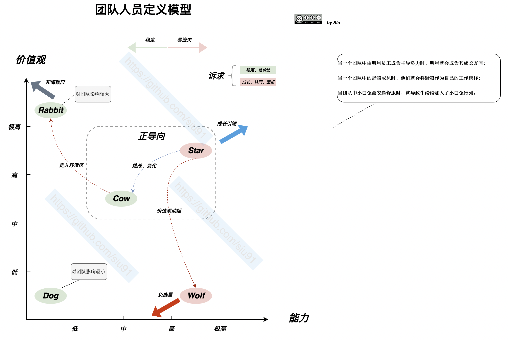
谈谈 Java 内存的管理
By Siu 2022/3/31
从 VM、GC 语言角度，JavaEr 很少会关注到内存的管理，但是所有程序的执行都避不开对内存使用的申请，以及回收；从现有主流的语言来看内存的管理大致会分为3类：
- 使用和分配都由用户去决定；C 就是一个代表
- 使用由用户来关注，回收交给 GC；典型如 Java，GO
- 由编译系统来管理：Rust 的所有权系统就是这样的一个强大的内存管理系统
C 选择了“相信”用户，Java 选择了”包容“用户，Rust 选择了“教育”用户。
Java 用GC 给用户带来了友好，只需要关注定义、赋值、创建对象，其它交给 GC；孰优孰劣，不是今天的主题，还是回到 Java 内存的管理是怎样的？
栈和堆
栈和堆是编程语言中最基础的数据结构，栈和堆的的作用就是为程序提供运行时的内存空间。
栈（Stack）
栈是先入后出（FILO），可以类比为叠盘子，增加一个盘子只能从顶部（入栈），取下一个盘子只能从顶部（出栈）。
栈中的所有数据都必须占用已知且固定大小的内存空间。
堆（Heap）
与栈不同，对于大小未知或者可能变化的数据，我们需要将它存储在堆上。
当向堆上放入数据时，需要请求一定大小的内存空间。
性能
写入方面：入栈比在堆上分配内存要快，因为入栈时操作系统无需分配新的空间，只需要将新数据放入栈顶即可。相比之下，在堆上分配内存则需要更多的工作，这是因为操作系统必须首先找到一块足够存放数据的内存空间，接着做一些记录为下一次分配做准备。
读取方面：栈数据往往可以直接存储在 CPU 高速缓存中（高速缓存和内存的访问速度差异在 10 倍以上！），而堆数据只能存储在内存中。访问堆上的数据比访问栈上的数据慢，因为必须先访问栈再通过栈上的指针来访问内存。
因此，处理器处理和分配在栈上数据会比在堆上的数据更加高效。
JVM 规范
JVM 规范定义
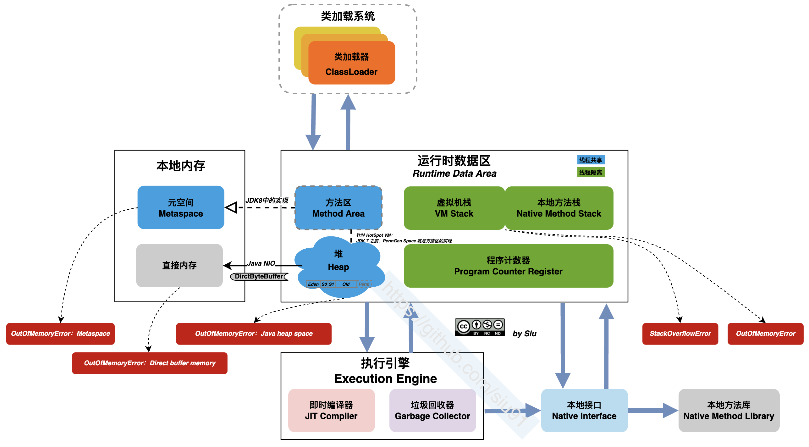
注：
类加载系统：负责从文件系统或是从网络中加载class信息，加载的信息存放在一个称之为“方法区”的内存空间
执行引擎：是jvm非常核心的组件，它负责执行jvm的字节码，一般先会编译成机器码后执行。
垃圾收集系统：GC垃圾回收，保证我们程序能够有足够的内存空间运行，回收掉内存中已经无效的数据。回收算法一般有标记清除算法，复制算法，标记整理算法等。
JVM 的内存结构（Runtime Data Area）
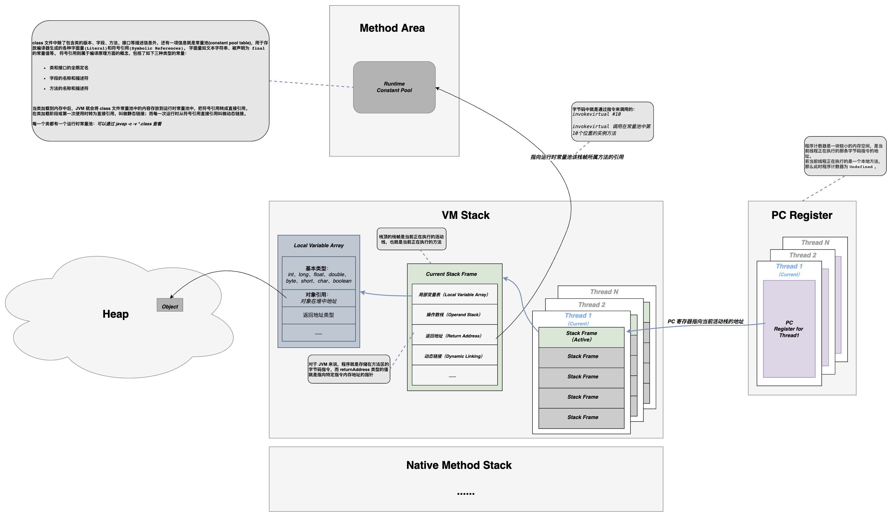
JVM 规范定义中的内存模型如上图中的运行时数据区中的描述，有以下主要定义：
-
方法区（Method Area）：存储已被类加载系统加载的类信息、常量、静态变量等；
-
JVM 规范中的定义：实现有“元空间”、“永久代”；
-
方法区在JDK7及之前，是由堆中的”永久代（PermGen）“作为实现，逻辑上与堆是连续的内存空间；
-
JDK7 开始移除永久代，在 JDK8时正式被移除，方法区的定义由元空间在本地内存中实现；
-
内存异常：OutOfMemoryError：Metaspace、OutOfMemoryError：PermGen space
-
-
VM 栈（Java Virtual Machine Stack）：
- 描述方法执行过程的内存模型；
- 方法执行时，同时会创建一个栈镇（Stack Frame）用于存储：
- 局部变量表：方法参数、方法体内局部变量、基本类型、对象引用（指针）、返回地址类型
方法区（Method Area）
方法区（Methed Area）用于存储已被虚拟机加载的类信息、常量、静态变量、即时编译后的代码等数据。
知识点：方法区、永久代（PermGen space）、 Metaspace（元空间）的区别
方法区， 是 《JVM 规范》 定义的，所有虚拟机必须有的。 针对 HotSpot 虚拟机 ：
- JDK7及之前， PermGen space 就是 方法区。
- JDK8及之后， PermGen space 被移除， 换成 Metaspace（元空间），也是对方法区的新的实现。
其实，移除永久代的工作从JDK1.7就开始了。JDK1.7中，存储在永久代的部分数据就已经转移到了Java Heap或者是 Native Heap。但永久代仍存在于JDK1.7中，并没完全移除，譬如符号引用(Symbols)转移到了native heap；字面量(interned strings)转移到了java heap；类的静态变量(class statics)转移到了java heap。元空间的本质和永久代类似，都是对JVM规范中方法区的实现。不过元空间与永久代最大的区别在于：元空间不在虚拟机设置的内存中，而是使用本地内存
永久代 Java7及以前版本的Hotspot中方法区位于永久代中。同时，永久代和堆是相互隔离的，但它们使用的物理内存是连续的。也有将方法去归于堆的，但称之为非堆。
元空间
在Java8中，元空间(Metaspace)登上舞台，方法区存在于元空间(Metaspace)。同时，元空间不再与堆连续，而且是存在于本地内存（Native memory）。
元空间存在于本地内存，意味着只要本地内存足够，它不会出现像永久代中“java.lang.OutOfMemoryError: PermGen space”这种错误。
Metaspace 区域位于堆外，所以它的最大内存大小取决于系统内存，而不是堆大小。
默认情况下元空间是可以无限使用本地内存的，但为了不让它如此膨胀，JVM同样提供了参数来限制它使用的使用。
- -XX:MetaspaceSize，metadata的初始空间配额，以bytes为单位，达到该值就会触发垃圾收集进行类型卸载，同时GC会对该值进行调整：如果释放了大量的空间，就适当的降低该值；如果释放了很少的空间，那么在不超过MaxMetaspaceSize（如果设置了的话），适当的提高该值。
- -XX：MaxMetaspaceSize，可以为metadata分配的最大空间。默认是没有限制的。
堆（Heap）
Java堆（Java Heap）是Java虚拟机中内存最大的一块，是被所有线程共享的，在虚拟机启动时候创建，Java堆唯一的目的就是存放对象实例，几乎所有的对象实例都在这里分配内存。
这个区域被划分为年轻代和老年代的，我们经常接触的GC垃圾回收机制，就是主要回收堆空间的垃圾数据。 堆空间里的数据，是被所有线程所共享的，所以会存在线程安全问题，所以那些锁就是为了解决堆空间数线程安全问题而生的。
随着JIT编译器的发展和逃逸分析技术的逐渐成熟，栈上分配、标量替换优化的技术将会导致一些微妙的变化，所有的对象都分配在堆上渐渐变得不那么“绝对”了。
VM 栈
Java虚拟机栈（Java Virtual Machine Stacks）描述的是Java方法执行的内存模型。
每个方法在执行的同时都会创建一个栈帧（Stack Frame）用于存储:
-
局部变量表（Local Variable Array）
-
操作数栈（Operand Stack）
-
动态链接（Dynamic Linking）
-
返回地址（Return Address）
-
指向运行时常量池的引用
每个方法从调用直至执行完成的过程，都对应着一个栈帧在虚拟机栈中入栈到出栈的过程。
栈空间是每个线程独有的，互相直接不能访问。
知识点：动态链接
每一个栈帧内部都包含一个指向运行时常量池中该栈帧所属方法的引用，包含这个引用的目的就是为了支持当前方法的代码能够实现动态链接（Dynamic Linking）。比如：invokedynamic指令
在Java源文件被编译到字节码文件时，所有的变量和方法引用都作为符号引用（Symbilic Reference）保存在class文件的常量池里。
比如：描述一个方法调用了另外的其他方法时，就是通过常量池中指向方法的符号引用来表示的，动态链接的作用就是为了将这些符号引用转为调用方法的直接引用。
压栈出栈过程
当方法运行过程中需要创建局部变量时，就将局部变量的值存入栈帧中的局部变量表中。
Java 虚拟机栈的栈顶的栈帧是当前正在执行的活动栈，也就是当前正在执行的方法，PC 寄存器也会指向这个地址。只有这个活动的栈帧的本地变量可以被操作数栈使用，当在这个栈帧中调用另一个方法，与之对应的栈帧又会被创建，新创建的栈帧压入栈顶，变为当前的活动栈帧。
方法结束后，当前栈帧被移出，栈帧的返回值变成新的活动栈帧中操作数栈的一个操作数。如果没有返回值，那么新的活动栈帧中操作数栈的操作数没有变化。
由于 Java 虚拟机栈是与线程对应的，数据不是线程共享的（也就是线程私有的)，因此不用关心数据一致性问题，也不会存在同步锁的问题。
局部变量表
定义为一个数字数组，主要用于存储方法参数、定义在方法体内部的局部变量，数据类型包括各类基本数据类型，对象引用，以及 return address 类型。
局部变量表容量大小是在编译期确定下来的。最基本的存储单元是 slot，32 位占用一个 slot，64 位类型（long 和 double）占用两个 slot。
对于 slot 的理解：
- JVM 虚拟机会为局部变量表中的每个 slot 都分配一个访问索引，通过这个索引即可成功访问到局部变量表中指定的局部变量值。
- 如果当前帧是由构造方法或者实例方法创建的，那么该对象引用 this，会存放在 index 为 0 的 slot 处，其余的参数表顺序继续排列。
- 栈帧中的局部变量表中的槽位是可以重复的，如果一个局部变量过了其作用域，那么其作用域之后申明的新的局部变量就有可能会复用过期局部变量的槽位，从而达到节省资源的目的。
在栈帧中，与性能调优关系最密切的部分，就是局部变量表，方法执行时，虚拟机使用局部变量表完成方法的传递局部变量表中的变量也是重要的垃圾回收根节点，只要被局部变量表中直接或间接引用的对象都不会被回收。
操作数栈
- 栈顶缓存技术：由于操作数是存储在内存中，频繁的进行内存读写操作影响执行速度，将栈顶元素全部缓存到物理 CPU 的寄存器中，以此降低对内存的读写次数，提升执行引擎的执行效率。
- 每一个操作数栈会拥有一个明确的栈深度，用于存储数值，最大深度在编译期就定义好。32bit 类型占用一个栈单位深度，64bit 类型占用两个栈单位深度操作数栈。
- 并非采用访问索引方式进行数据访问，而是只能通过标准的入栈、出栈操作完成一次数据访问。
方法的调用
- 静态链接：当一个字节码文件被装载进 JVM 内部时，如果被调用的目标方法在编译期可知，且运行时期间保持不变，这种情况下降调用方的符号引用转为直接引用的过程称为静态链接。
- 动态链接：如果被调用的方法无法再编译期被确定下来，只能在运行期将调用的方法的符号引用转为直接引用，这种引用转换过程具备动态性，因此被称为动态链接。
- 方法绑定
- 早期绑定：被调用的目标方法如果再编译期可知，且运行期保持不变。
- 晚期绑定：被调用的方法在编译期无法被确定，只能够在程序运行期根据实际的类型绑定相关的方法。
- 非虚方法：如果方法在编译期就确定了具体的调用版本，则这个版本在运行时是不可变的。这样的方法称为非虚方法静态方法，私有方法，final 方法，实例构造器，父类方法都是非虚方法,除了这些以外都是虚方法。
- 虚方法表：面向对象的编程中，会很频繁的使用动态分配，如果每次动态分配的过程都要重新在类的方法元数据中搜索合适的目标的话，就可能影响到执行效率，因此为了提高性能，JVM 采用在类的方法区建立一个虚方法表，使用索引表来代替查找。
- 每个类都有一个虚方法表，表中存放着各个方法的实际入口。
- 虚方法表会在类加载的链接阶段被创建，并开始初始化，类的变量初始值准备完成之后，JVM 会把该类的方法也初始化完毕。
- 方法重写的本质
- 找到操作数栈顶的第一个元素所执行的对象的实际类型，记做 C。如果在类型 C 中找到与常量池中描述符和简单名称都相符的方法，则进行访问权限校验。
- 如果通过则返回这个方法的直接引用，查找过程结束；如果不通过，则返回 java.lang.IllegalAccessError 异常。
- 否则，按照继承关系从下往上依次对 C 的各个父类进行上一步的搜索和验证过程。
- 如果始终没有找到合适的方法，则抛出 java.lang.AbstractMethodError 异常。
Java 中任何一个普通方法都具备虚函数的特征（运行期确认，具备晚期绑定的特点），C++ 中则使用关键字 virtual 来显式定义。如果在 Java 程序中，不希望某个方法拥有虚函数的特征，则可以使用关键字 final 来标记这个方法。
Java 虚拟机栈的特点
- 运行速度特别快,仅仅次于 PC 寄存器。
- 局部变量表随着栈帧的创建而创建，它的大小在编译时确定，创建时只需分配事先规定的大小即可。在方法运行过程中，局部变量表的大小不会发生改变。
- Java 虚拟机栈会出现两种异常：StackOverFlowError 和 OutOfMemoryError。
- StackOverFlowError 若 Java 虚拟机栈的大小不允许动态扩展，那么当线程请求栈的深度超过当前 Java 虚拟机栈的最大深度时，抛出 StackOverFlowError 异常。
- OutOfMemoryError 若允许动态扩展，那么当线程请求栈时内存用完了，无法再动态扩展时，抛出 OutOfMemoryError 异常。
- Java 虚拟机栈也是线程私有，随着线程创建而创建，随着线程的结束而销毁。
- 出现 StackOverFlowError 时，内存空间可能还有很多。
本地方法栈
本地方法栈（Native Method Stack）与虚拟机栈的作用是一样的，只不过 VM栈是服务Java方法的，而本地方法栈是为调用Native方法服务的（即JDK中用native修饰的方法）。
在Java虚拟机规范中对于本地方法栈没有特殊的要求，虚拟机可以自由的实现它，因此在Sun HotSpot虚拟机直接把本地方法栈和虚拟机栈合二为一了。
程序计数器/寄存器
程序计数器是一块较小的内存空间，是当前线程正在执行的那条字节码指令的地址。若当前线程正在执行的是一个本地方法，那么此时程序计数器为Undefined。
作用
- 字节码解释器通过改变程序计数器来依次读取指令，从而实现代码的流程控制。
- 在多线程情况下，程序计数器记录的是当前线程执行的位置，从而当线程切换回来时，就知道上次线程执行到哪了。
特点
- 是一块较小的内存空间。
- 线程私有，每条线程都有自己的程序计数器。
- 生命周期：随着线程的创建而创建，随着线程的结束而销毁。
- 是唯一一个不会出现
OutOfMemoryError的内存区域。
直接内存
直接内存并不是虚拟机运行时数据区的一部分，也不是虚拟机规范中定义的内存区域，但这部分也是被频繁的读写使用，也可能会导致OutOfMemoryError异常的出现。
Java的 NIO中的allocateDirect方法是可以直接使用直接内存的，能显著的提高读写的速度。
从线程共享角度看内存区域
再看 Java 中的栈内存和堆内存
引用
字符串
GC
OOM
逃逸分析
另一种实现：Netty 中的内存管理
ref
Siu 的笔记本
Application Architecture Archetype（应用架构原型）
By Siu 2022/4/19
前言
前一段时间在整理后端的架构和选型，关于微服务设计这部分，也预留 DDD 的”作业“，但对于如何工程化落地 DDD 还没有一个清晰的思路，现有应用架构中的分层模型还是 MVC；关于领域划分，边界上下文、防腐层等 DDD 的经典理论抱有”赞同“，却又限制于没有实践指导的“工具”，故一直没有这部分的”行动“。
最近看了 COLA 的架构和一些设计，觉得 COLA 具有足够的理论依据也具有相当的落地实践性，是一个不错的 DDD 落地的方法论和实践指导，但个人在理解 COLA 的设计时还是觉得有一些问题。 主要集中在没有足够的场景案例去分析整个落地实践的路径，没有深入阐述分层分包的原则和实际开发联系；特别是 DEMO 上比较粗糙，与 COLA 阐述的一些架构原则没有呼应，细节上 COLA 中的 DEMO 不具典型意义；另外就是没有介绍对于 DDD 、CQRS 的借鉴，在架构和实践中的关系。
由此，并就想着开始准备自己组装一个 DDD 的落地实践，使用 COLA 的设计理念，融合微服务框架以及包含一些后端开发时会涉及的常用的库/组件（ORM、Flyawy、Skywaking、MapStruct、EventBus等），按照当前我个的理解把这个“脚手架”项目命名为 AAA（Application Architecture Archetype（应用架构原型）），希望能够真正落地实践 DDD，并用于实际项目指导目前团队的应用架构的演进。
DDD 分层架构 （todo）

图片来源：《DDD 实战》
COLA 分层架构 （todo）

AAA （todo）
ref
Java 后端框架选型指南
By Siu 2022/3/26
前言
其实从 2019 年疫情😷刚开始时就开始准备这部分的工作，2020-2021 其实也有了很所实践和总结，但整体还不够全面和立体，故这段时间趁着整理过往的实践再次梳理和总结关于 Java 后端的框架的选型。
整体架构
整体架构包括了：前端、后端、基础设施、规范、工具链等；这里先放出架构全景，这些其实是经过两年多的实践总结不断迭代的一个成果。
图-1:整体架构

服务端架构
图-1:服务端架构

选型
表-1:服务端选型列表
| 序号 | 大类 | 分类 | 框架/组件/工具/方法模型等 | 版本/规格/标准 | 备注 |
|---|---|---|---|---|---|
| 1 | 服务端 | 语言 | Java | Oracle JDK 1.8.0_161+ | 主要的技术栈为 Java；是否需要考虑 OpenJDK 方案/升级订阅商业版？ |
| 2 | 服务端 | 语言 | Python | 2.7、3.6 | 少量使用，多作为脚本或工具模块; |
| 3 | 服务端 | 语言 | Scala | 2.11.8 | 少量使用;Spark 数据处理； |
| 4 | 服务端 | 框架 | Spring Boot | 2.3.12.RELEASE | 另外关注到的还有更面向云原生的方案（GraalVM） Quarkus、Spring Native |
| 5 | 服务端 | 框架 | nacos | 2.1.4.RELEASE | 微服务注册与配置 |
| 6 | 服务端 | 数据库 | MySQL | 5.7.24 | 目前Mysql与PG相比，国内占比高，落地方案丰富。运维上无论是当前人员还是招聘市场都是熟悉Mysql远高于PG |
| 7 | 服务端 | 本地缓存 | Ehcache | 2.x (latest) | 少量项目使用；主要考量本地持久化，当前 Spring Boot 中推荐用 3.x |
| 8 | 服务端 | 数据库连接池 | Hikari | / | 1.Druid 高级特性项目中并未被使用，运维本身有其他方式监控SQL 2.Hikari默认被spring体系采用，版本维护与Spring Boot 主版本绑定 3.数据连接池本身与业务代码解耦，变更不涉及到业务代码改动。 |
| 9 | 服务端 | 中间件,OSS | MinIO | RELEASE.2020-06-22T03-12-50Z、latest（2021.8 dockerhub） | MinIO是一套高性能对象存储系统，兼容 Amazon S3 云存储服务，提供一套完整的OSS方案，支持云原生。近9000多家企业也都在使用MinIO产品。 |
| 10 | 服务端 | 框架,权限 | Shiro | 1.5.3 | 权限框架；封装在 UAC 的二方库中；按目前生态的发展会更倾向 Spring Security 风险点：当前的福州在用系统都要从shiro切换到Spring Security，涉及平台众多，改造工作量较大。从业务角度，改造后没有业务上直接提升。该部分暂时不做变动。 |
| 11 | 服务端 | 中间件,缓存 | Redis | 5.0.x | 缓存；客户端使用 Lettuce 版本与Spring Boot 主版本绑定，封装在 framework2中，redis module |
| 12 | 服务端 | 中间件,MQ | Kafka | 1.0.0 | 消息队列，客户端使用 Spring Kafka 版本与Spring Boot 主版本绑定；业务上没有特别多的需求，故靠近已有的大数据使用的 kafka |
| 13 | 服务端 | 框架,ORM | Mybatis | / | 封装在 framework2中，data module；也有调研 JPA+QueryDSL 、JOOQ |
| 14 | 服务端 | 框架,ORM | MyBatis-Plus | 3.3.2 | MyBatis-Plus VS tk-mybatis都是基于Mybaits插件功能开发的增强器，当前在功能丰富度和用户热度上 MyBatis-Plus要略优于tk-mybatis。因此统一选型后保留了MyBatis-Plus。 |
| 15 | 服务端 | 工具库,数据自动化 | Flyway | / | 数据库版本/数据库迁移管理工具；版本与Spring Boot 主版本绑定 |
| 16 | 服务端 | 框架,单元测试 | Junit | Junit4 | 单元测试 |
| 17 | 服务端 | 框架,参数验证 | Hibernator Validator | / | 参数校验； |
| 18 | 服务端 | 工具库,配置加密 | jasypt | 3.0.x | 用于配置文件中的参数值加密，如数据库账号密码；已封装在二方库中 |
| 19 | 服务端 | 工具库,验证码 | kaptcha | 2.3.2 | 验证码工具库，https://github.com/penggle/kaptcha |
| 20 | 服务端 | 工具库,样板代码 | Lombok | / | 基于注解方式，有效减少样板代码的工具库；版本与Spring Boot 主版本绑定 |
| 21 | 服务端 | 工具库,JSON | Jackson | / | Spring Boot 默认；版本与Spring Boot 主版本绑定 |
| 22 | 服务端 | 工具库,Log | Logback + Slf4j | / | Spring Boot 默认；版本与Spring Boot 主版本绑定 |
| 23 | 服务端 | 工具库,API 文档 | Swagger | 2.8.0 | 封装在 framework2中，data module；大量使用，默认和前端的API文档对接方式，前端会使用 API json 接口做 mock |
| 24 | 服务端 | 工具库,API 文档 | Knife4j | 2.0.4 | Swagger UI 增强； |
| 25 | 服务端 | 可观测性,诊断工具 | SkyWalking | 8.9.1 | 微服务日志链路追踪 |
| 26 | 服务端 | 框架,低代码 | magic-api | 1.7.1 | 少量实践使用；能有效提高开发效率，比较适用于大屏展示、报表等；同类的还调研了 Dataway |
| 27 | 服务端 | 构建工具,依赖管理 | Maven | 3.6 | 默认唯一的工具，团队开发中约束，主要基于大多数人熟悉 Maven |
| 28 | 服务端 | CI | Jenkins Pipeline | / | 使用 Jenkins 共享库的方式，自定义编排流水线（Gitlab+Jenkins+Nexus），后续会合并Harbor+k8s |
| 29 | 服务端 | 云原生,容器化 | Docker | 20.10.5 | 实践较少；使用 airflow 时用到 Rancher 1.x + docker（当前已迁移用 docker-compose 方式）；Jenkins 主从集群使用 Docker 构建 |
| 30 | 服务端 | 云原生,容器化 | k8s | 1.18 | 运维统一维护支持，开发环境正在使用KubeSphere 容器云纳管工具平台+ k8s ;线上环境构建k8s 使用Grafana监控 |
| 31 | 服务端 | 云原生,微服务框架 | Spring Cloud | / | 偏向于spring cloud Alibaba |
| 32 | 服务端 | 云原生,DevOps | KubeSphere | 3.1.1 | 开发、测试环境使用 |
| 33 | 服务端 | 云原生,持续交付 | Jenkins | 2.277.1 | 在非云环境中使用经验较多（交付到主机、虚拟机）；验证环境调研使用过 KubeSphere DevOps |
适用说明
Java 和 Spring
数据库、连接池、ORM
数据库自动化
这部分往往特别容易被忽视，但往往都会因为没有尽早考虑“数据库自动化”而引发不同程度的问题。
数据库自动化主要的收益有3大部分：
- 开发：sql 也是代码的一部分，要编码-》测试-》集成-》上线，用开发最熟悉的方式去管理；
- CI：对于ci ，数据库自动化是特别容易忽视，到问题出现时才会去想到要去构建数据库自动化的方案；
- 产品化：对于很多产品来说产品的迭代升级是一个重要的管理工作，数据库自动化会为此带来不可或缺的收益：多个版本的升级可以是一个”内治理的平衡“，不需要团队花费过多的精力。
在实践中主要的矛盾在于，“数据库自动化”这部分对于运维/DBA是黑盒，他们往往希望能够去审计上线的 SQL，所以需要根据团队具体情况去沟通，让运维/DBA了解这部分的收益和风险。
API 文档
项目文档、WIKI
CICD & GitFlow
CI 的工具链
目前经过两年过的实践比较合适目前团队的 CI 工具链主要由一下构成的：
- 代码版本管理 Gitlab
- 强大的、可扩展能力的 CI/CD 引擎 Jenkins
- Jenkins Piepline Library： 可定义和编排了 CI/CD 流水线(
Pipeline as Code) - 依赖管理、制品管理 Nexus/Harbor
- Devops 工具：Kubersphere （ks 其实还有更多关于微服务、云原生一站式的功能）
CI 流水线
图-1:CI流水线

GitFlow
图-1:GitFlow

Repo model
Mono Repo
Mutilple Repo
Maven
其它中间件
微服务和云原生
图-3:微服务选型关注点

图-1:微服务主流方案对比

开发规范和最佳实践
| 序号 | 大类 | 分类 | 框架/组件/工具/方法模型等 | 版本/规格/标准 | 备注 |
|---|---|---|---|---|---|
| 99 | 规范 | 代码管理 | 代码仓库使用规范 | / | 已修订，主要约束了 gitlab 中仓库组的层级、分类；仓库组的权限控制规则 |
| 100 | 规范 | 代码管理 | 代码提交规范 | / | 已修订，主要约束了 git commit message 的规格 |
| 101 | 规范 | 代码管理 | 代码风格规范 | / | 已修订，主要约束开发中使用的语言、脚本的风格，包括 Java、Scala、Python、Shell、JS |
| 102 | 规范 | 代码管理 | git 协同开发规范 | / | 已修订，主要约束代码仓库的分支规范、协同的工作流，参考 gitflow、gitlab flow |
| 103 | 规范 | 代码管理 | Code Review 指南 | / | 已修订，主要约束、指导了 CR 的原则和要点，评审人和 Commiter 的各自角色的关注点、协作方式 |
| 104 | 规范 | 代码管理 | PR 模板、ISSUE 模板 | / | 已修订，可能要针对不同的类型的项目做调整 |
| 105 | 规范 | 中间件使用 | 数据库开发规范 | / | 已修订，针对 PostgreSQL 做了开发规范约束 |
| 106 | 规范 | 中间件使用 | 缓存使用规范 | / | 未修订 |
| 107 | 规范 | 中间件使用 | 消息队列使用规范 | / | 未修订 |
| 108 | 规范 | 中间件使用 | 数据库自动化使用规范 | / | 已修订，主要约束了 Flyway SQL 的格式，并描述了最佳的实践方式 |
| 109 | 规范 | 中间件使用 | 三方库使用规范 | / | 未修订，需要包括前端、后端 |
| 110 | 规范 | 服务调用协议和标准 | RestFul API 设计规范 | / | 已修订，主要内容包括 RestFul Path、Http Method，Http Code，Header，Return Json Schema，最佳实践；参考：Paypal、Microsoft |
| 112 | 规范 | 开发流程 | 打包构建、制品规范 | / | 已修订，主要约束构建工具、构建方式、构建环境、构建产物规格；还有待调整补充 |
| 113 | 规范 | 开发流程 | 配置文件规约 | / | 未修订 |
| 114 | 规范 | 开发流程 | 单元测试规约 | / | 已修订 |
| 115 | 规范 | 开发流程 | 日志规约 | / | 未修订 |
| 116 | 规范 | 开发流程 | 前后端分离开发协同开发指南 | / | 未修订，主要规约协同的工具、方法、职责和流程 |
| 117 | 规范 | 基础 | 软件版本控制规范 | Semver 2.0 | 已修订，主要参考 Semver 2.0 制定 |
| 119 | 规范 | 基础 | 全局的命名规约 | / | 未修订，如用户ID，状态码，系统名称 |
开发工具
| 序号 | 大类 | 分类 | 框架/组件/工具/方法模型等 | 版本/规格/标准 | 备注 |
|---|---|---|---|---|---|
| 120 | 规范 | 工具 | IDE： WebStorm | 2021+ | 前端必须唯一使用；收费，无社区版 |
| 121 | 规范 | 工具 | IDE： IntelliJ IDEA | 2021+ Community | 后端必须唯一使用；迫于公司未统一采购，推荐用社区版 |
| 122 | 规范 | 工具 | Markdown 编辑器：Typora | <1.0、0.9.x(beta) | 迫于公司未统一采购，推荐使用 1.0 之前的免费版；能用 Markdown 就一定用，保持最佳的可见性 |
| 123 | 规范 | 工具 | 画图工具：Draw.io | 14+ | 多端都可以使用，在 vs code 、idea 里也可以集成 |
| 124 | 规范 | 工具 | 脑图工具：Xmind | 8+ | 推荐 Xmind，迫于收费，需要自行解决 |
| 125 | 规范 | 工具 | 数据库模型设计工具：DBeaver | 23+ | 待讨论，目前用 PowerDesigner 16 比较多，但只限于 win 环境；Navicat/DbSchema 可以多端，需要收费； |
| 126 | 规范 | 工具 | 阿里 Java 代码规约插件 | latest | IDEA 插件 |
| 127 | 规范 | 工具 | standard | 16.x | 前端默认代码规范检测工具 |
| 128 | 规范 | 工具 | commitlint | 12.x | git commit 格式规范工具 |
| 129 | 规范 | 工具 | docz | 2.x | react组件库文档工具，使用mdx格式，可直接生成组件使用、代码案例等；目前bui、zui等组件库均用其编写 |
| 130 | 规范 | 工具 | Docsify | 4.x | 文档站点工具；将 markdown 文档生成 web 站点，主要用于项目文档展示 |
DDD
总结
PG HA 方案
By Siu 2020年12月
1 介绍
方案中使用 PostgreSQL Failover、Warm Standby 的特性，安装 pg_auto_failover 扩展服务，为PostgreSQL 服务实现安全的自动故障转移。
以下方案或验证中，考虑实际单个机房内某台主机的故障情况；非应对整个机房瘫痪的双活/异地容灾高可用方案。
高可用的几个阶段：
-
冷备：需要停机恢复，数据丢失风险；
-
双机热备：需要停机恢复；
-
Active/Standby 模式：进一步可以配置单写多读，读写分离；
-
互为主备：相比于 Active/Standby ，更合理理由服务器资源。目前 PG 没有合适的候选方案； -
同城双活：可以解决某个 IDC 机房整体挂掉的情况（停电，断网等）；
-
异地双活：应对大部分的灾备情况，但是碰到大面积停电，或者自然灾害的时候，服务依然会中断；
-
异地多活：理想方案。
1.1 架构
1.1.1 two-standby-sync 架构
two-standby-sync 架构，这种架构下两个 standby 节点都参与复制仲裁 （Node B、Node C），number_sync_standby = 1 ，系统始终维护至少两个数据集副本，一个在 Node A 主数据库上，另一个在 Node B 或 Node C 上。丢失任意一个节点，仍可保证拥有两个数据集副本，三个节点实现 Postgres 服务和数据集的高可用性。
如果需要增加可用的数据副本数，按同样的配置增加节点 ，即可变成 N-standby-sync 架构。

注：
- Streaming Replication : 流复制，PG的特性之一。
- number_sync_standby ：同步复制的 standby 节点数；写操作都会阻塞，直到至少收到
number_sync_standby个standby 节点报告同步完成。- replication quorum：是否参与复制仲裁；例图中 3 个 replication quorum = true ，Primary 节点的写操作只要任意一个 Secondary 节点确认即可。
- candidate priority ：选举优先级；当故障转移时，候选节点成为主节点的优先级。
- [replication quorum = true 的节点数] > number_sync_standbys；一般配置为 [replication quorum = true 的 standby 节点数] = number_sync_standbys + 1 。
- 当可用 standby 节点数 < number_sync_standbys 时 PG 服务将降级为只读；故并不是越多的数据副本代表更高的可用性，数据可用副本只是保证了数据的完整性，在实际场景中要权衡。
- 上图架构中 Node B、C 两个 standby 故障时，PG 将降级为只读；将 number_sync_standbys 设置为0，将允许写入数据，即使两个备用节点都处于故障状态也是如此。 在这种情况下，将保留生产数据集的单个副本，如果主数据库随后发生故障，则某些数据将丢失， 多少取决于数据备份和恢复机制。
1.1.2 three-standby-one-async 架构
three-standby-one-async 架构，与 two-standby-sync 不同的是多了一个异步复制的节点 Node D 。
这种架构适合以下情况：
Node A，B ， C 部署在同一数据中心或可用性区域中，而 Node D 部署在另一个数据中心或可用性区域中。

注：
- Node D 不会作为故障转移的候选者（candidate priority = 0 ）。
1.2 可用性分析
依据 two-standby-sync 架构做分析。
| Monitor | PG Nodes | Available | Failover | ||
|---|---|---|---|---|---|
| 1 | :heavy_check_mark: 正常 | 大于 2 个节点可用 | 是 | 是 | / |
| 2 | :heavy_check_mark:正常 | 小于等于 1 个节点可用 | 否 | 否 | 与配置策略相关，当 number_sync_standbys > 0 and synchronous_standby_names 非空时不可写 |
| 3 | :x:故障 | Primary 可用，至少1个 Secondary 可用 | 是 | 否 | / |
| 4 | :x:故障 | Primary 不可用，Secondary 任意状态 | 否 | 否 | 不可写 |
| 5 | any | 所有节点故障 | 否 | 否 | 完全故障 |
注：
只有 Primary 节点时（所有 standby 故障），服务可能降级为只读，取决于 number_sync_standbys 和 synchronous_standby_names 的设置。
1.3 Monitor SPOF
- Monitor 故障时，将无法提供故障转移服务；
- Monitor 故障时，将无法分配状态给PG节点（添加节点、故障转移、节点维护）；
- Monitor 故障时，可以无状态下快速恢复；
- Monitor 故障时，可以从备份数据中快速恢复；
- Monitor 故障时，不影响PG服务；
注：
SPOF: 单点故障 (single point of failure)
1.3.1 Monitor SPOF 优化
在 pg_auto_failover 原有功能基础上，利用 keepalived 的功能设计实现保证 Monitor 节点的高可用。在 Keepalived 中配置 VRRP instance ，将
VIP绑定到可用的节点，使用 track_script 、notify_master、notify_backup 将 keepalived 的状态和 pgafom 的状态绑定，同步MASTER和BACKUP数据；使得同一时间内，两台 Monitor节点只要保证一台主机正常，就能保证有且只有一个 Monitor 服务在线工作。

Monitor 故障转移：

注：
- 在此配置中 pgafo 服务不需要设置
systemed enable；- VRRP即虚拟路由冗余协议(Virtual Router Redundancy Protocol)，它是为了避免路由器出现单点故障的一种容错协议。
- MASTER、BACKUP 数据同步直接采用数据增量文件同步（rsync）的方式，主要考虑：
- 1、数据量非常小
- 2、互为 hot standy 容易数据不一致，且两个节点以上配置切换复杂。
1.3.2 优化后的架构

在此架构下，解决了Monitor 服务的单点故障问题，保证了同一时间内有且只有一个 Monitor 服务在线。上图中也可以看出，优化方案对应用接入这一层没有任何影响。
1.4 方案回退
pg-auto-failover 本身对PG数据库没有侵入，回退或切换方案，只要做相应的数据迁移。
1.5 主流方案对比
所有对比方案，均采用 PostgreSQL Failover、Warm Standby 作为HA核心功能的解决方案。
| Pgpool-II | Repmgr | Patroni | pg_auto_failover | |
|---|---|---|---|---|
| 类型 | middleware | afo tool | afo tool | afo tool |
| 开源协议 | 非开源、当前免费 | GPL v3 | License (MIT) | PostgreSQL License |
| 源码 | / | 2ndQuadrant/repmgr | zalando/patroni | citusdata/pg_auto_failover |
| 配置复杂度 | 较高 | 中 | 高 | 低 |
| 维护难度 | 高 | 低 | 中 | 低 |
| 文档 | 规范、详细 | 规范、详细 | 规范、详细 | 规范、详细、友好 |
| 扩展性 | 不支持动态增加节点（待确定） | 未收集相关信息 | 未收集相关信息 | 支持动态增加节点，删除节点 |
| 功能 | 连接池、VIP、负载均衡、读写分离、故障转移、数据复制 | 故障转移、数据复制 | 故障转移、数据复制 | 故障转移、数据复制、节点扩展 |
| 问题 | Watchdog leader 、数据一致性导致故障转移失败 | 未知（未验证） | 未知（未验证） | Monitor SPOF |
| 团队/品牌 | Pgpool-II | 2ndQuadrant | Zalando SE | Microsoft/Citus Data |
- 类型：这部分各有有点，中间件对业务是透明的，无侵入，如果中间件稳定功能丰富且适合业务需求，是比较好的选择；Patrotni和其它两个的区别在于它是一个Python的模板，可用于自主配置PG HA工具；
- 开源部分：主要考量主要在于开源热度、团队和品牌、许可范围；
- 配置和运维：主要考量目前团队对新组件在预期内的掌握程度和未来交维的能力；pg-pool 维护难度较高一部分是配置较为复杂、一部分是功能上丰富，带来一定的熟悉难度；
- 扩展性：这个和后期运维关系紧密
- 功能：主要考量我们目前的业务需求和未来的主要规划；
- 性能：性能部分未单独考量，因为只有pg-pool方式需要特别考虑性能（中间件和连接池），其它列出的几种方式都是直接连接PG，只跟PG 驱动和同步复制相关；基准测试部分会有个基础依据；
注：pg 驱动支持读写分离，负载均衡（待验证）
2 准备
2.1 主机规划
开发测试环境
| 节点名称 | CPU | 内存 | 系统盘 | 数据盘1 | 数据盘2 | 备注 | 是否必须 |
|---|---|---|---|---|---|---|---|
| pg-node1 | 4C | 16G | 60G | 1T | 60G | Postgres 节点 | 是 |
| pg-node2 | 4C | 16G | 60G | 1T | 60G | Postgres 节点 | 是 |
| pg-node3 | 4C | 16G | 60G | 1T | 60G | Postgres 节点 | 是 |
| pg-afom1 | 2C | 2G | 60G | 60G | / | pg afo monitor 节点 | 是 |
| pg-afom2 | 2C | 2G | 60G | 60G | / | pg afo monitor 节点 | 否 |
说明：
- pg-node 数据盘1作为postgres 的数据盘，统一挂载在 /data/pg10 ;数据盘2作为pg-auto-failover monito的数据备份盘统一挂载在 /pgafo/monitor
- pg-afom 数据盘1作为pg-auto-failover monito的数据盘和数据备份盘统一挂载在 /pgafo/monitor
- 注：测试、开发环境资源不足可以暂时规划
4C/8G/20G/200G/20G2C/2G/20G/20G/- 生产环境根据业务规模规划
磁盘挂载：https://cloud.tencent.com/developer/article/1496311
设置主机名：hostnamectl set-hostname [host-name]
192.168.5.149 pg-node1 192.168.5.150 pg-node2 192.168.5.151 pg-node3 192.168.6.170 pg-afom1
2.2 Postgres Kernel 调优
针对数据库相关的内核参数，按需调优。参考
2.3 配置节点时钟同步
生产必须
2.4 配置SSH互信
SSH方式自动部署必须配置，参考：./pgafo -a
3 安装
# 解压部署包，目录下 config为配置文件
unzip PGHA.zip && cd PGHA && chmod +x pgafo
# -p 初始化各节点
# -c 清理旧的afo环境（重新安装时需要）
# -i 安装afo基础环境
./pgafo -p -c -i
# -r 启动afo
su ha-admin
./pgafo -r
配置文件如下（按实际配置）：
# ha-admin password,operation user
HA_ADMIN_PASS='ha1234'
# PG server trusted network segment
PG_HBA_MD5="192.168.31.1/24 192.168.1.1/24 192.168.2.1/24"
# PG version
PG_VERSION='10'
# PG subversion
PG_SUB_VERSION='15'
# PG port
PG_PORT='5432'
# PG afo monitor port
PGM_PORT='5431'
# PG afo monitor hostname
PG_AFOM_HOSTNAME="pg-afom"
# node list info
NODE_LIST="${PG_AFOM_HOSTNAME}:192.168.5.151 pg-node1:192.168.5.149 pg-node2:192.168.5.150 pg-node3:192.168.6.170"
4 运维
4.1 pgafo
[root@pg-node1 PGHA]# ./pgafo -v
================================================
# pgafo 工具 #
# 版本： 1.0.0 #
# 作者： Siu #
# 支持： postgres 10,11,12 #
# GCC: (GNU) 4.8.5 20150623 (Red Hat 4.8.5-28) #
================================================
Usage: ./pgafo -p
./pgafo -s
./pgafo -l
./pgafo -c local
./pgafo -p -c -i
./pgafo -d pg-node5
Options:
-a 设置当前用户 ssh 免密
-p 初始化主机
-c 清理旧 afo 环境（重装时需要，必须输入验证码二次确认）
-i 安装 afo 基础环境（必须输入验证码二次确认）
-r 启动 afo、afom
-b 备份 afo monitor数据
-n 查看节点信息
-s 查看节点信息（节点情况、连接串、pg_autoctl 配置文件、节点配置）
-d 删除节点（必须二次确认）
-o 主动故障转移（必须二次确认）
-g 设置 postgresql.conf（需要重启PG）
-l 查看服务日志
-m 维护节点
-R 维护完成，启用节点
-h 帮助信息
-v pgafo 工具版本信息
4.2 运维操作
4.2.1 查看节点状态
./pgafo -n 2 # 每隔两秒输出当前节点的状态

4.2.2 查看系统日志
./pgafo -l

4.2.3 节点维护
将节点置为维护状态，适用于主机内核升级等情况；
Secondary 节点维护
./pgafo -m
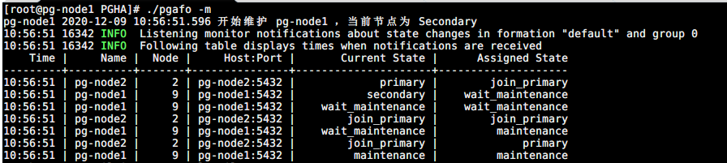
Primary 节点维护
./pgafo -m

4.2.4 节点伸缩
删除节点
./pgafo -d [hostname]
增加节点
参考安装，只需要在新的节点安装为 postgres 节点即可成为新的节点加入。
5 测试
| 序号 | 测试项 | 预期 | 目的 |
|---|---|---|---|
| 1 | 故障转移测试 | 1）、任意一个节点故障，不影响PG服务和数据完整 2）、任意两个节点故障： a、所有 standby 故障， 当可用 standby 节点数 < number_sync_standbys 时 PG 服务将降级为只读； b、主节点和其中一个 standby 节点故障，不影响PG服务，有可能影响数据完整性（取绝于接管主PG服务的节点是否是最后执行复制仲裁的节点或故障时有无读请求） 3）、Monitor 故障不影响PG服务和数据完整性，只会影响故障转移； 4）、Monitor SPOF 解决方案的可行性； 5）、Monitor SPOF 解决方案的可靠性； 6）、基于pg-auto-failover 的PG HA方案的可靠性； | 验证 HA，failover可靠性 |
| 2 | JDBC 应用测试 | 应用正常使用 | 验证现有应用使用 JDBC HA方式能正常使用，业务上无侵入。 |
| 3 | 数据库基准测试 | 性能差距在 5% 左右，小于 10% | 验证方案，JDBC HA方式连接对性能没有影响 。 |
| 4 | 数据库压测 | / | 测试数据稳定性，发现未知问题。 |
5.1 故障转移测试
依据 two-standby-sync 架构做整体方案的功能和可靠性验证。
5.1.1 场景一 ：任意一个 PG 节点故障
由于这种场景下 Secondary 节点故障并不会触发故障转移（重新选择主节点），故在测试中制造 Primary 节点故障。
| Monitor | Primary | Scondary1 | Scondary2 | Available | Failover |
|---|---|---|---|---|---|
| :heavy_check_mark: | :heavy_check_mark: | :heavy_check_mark: | :heavy_check_mark: | 是 | 是 |
故障转移测试：
-
手动造成 Primary 节点服务故障（断电，关机）；
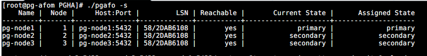 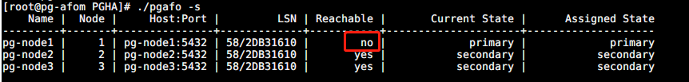
-
观察故障转移：新主节点产生，原主节点被降级

-
重启原 Primary 节点
-
观察故障转移：原 Primary 节点重新加入，开始同步 LSN

-
观察故障转移：新的 Primary 节点状态 从 join_primary 变为 primary
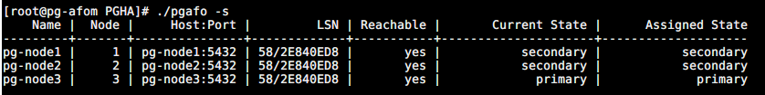
5.1.2 场景二 ：任意两个 PG 节点故障
验证 number_sync_standbys 和 synchronous_standby_names 配置的影响
故障转移测试1：两个 Secondary 节点故障
| Monitor | Primary | Scondary1 | Scondary2 | Available | Failover |
|---|---|---|---|---|---|
| :heavy_check_mark: | :heavy_check_mark: | :x: | :x: | 否 | 否 |
-
手动造成两个 Secondary 节点故障（断电/关机）；
-
关机前节点状态
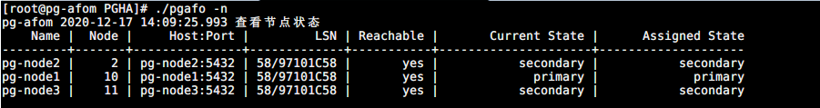
-
pg-node2、pg-node3 关机 （pg-node1 降级只读，写阻塞）

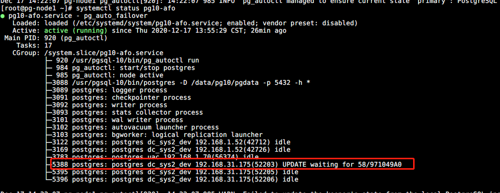
-
设置 number-sync-standbys=0 ,synchronous_standby_names=''（pg-node1 可读写）
# 设置 number-sync-standbys = 0 /usr/pgsql-10/bin/pg_autoctl set formation number-sync-standbys 0 --pgdata /pgafo/monitor/pgafomonitor # 设置 synchronous_standby_names = '' /usr/pgsql-10/bin/pg_autoctl set node replication-quorum false --name pg-node2 --pgdata /pgafo/monitor/pgafomonitor /usr/pgsql-10/bin/pg_autoctl set node replication-quorum false --name pg-node3 --pgdata /pgafo/monitor/pgafomonitor

-
故障转移测试2：Primary 节点故障，一个Secondary 故障
| Monitor | Primary | Scondary1 | Scondary2 | Available | Failover |
|---|---|---|---|---|---|
| :heavy_check_mark: | :x: | :heavy_check_mark: | :x: | 是 | 否 |
-
手动造成 Primary 和一个 Secondary 节点故障（断电/关机）；
-
关机前节点状态

-
关机后故障转移（synchronous_standby_names 自动配置为空）


-
故障节点重新加入（重启 pg-node2、pg-node3）

-
Primary 节点和 Secondary 节点同时故障，另一个 Secondary 节点变成唯一副本，会升级为主节点（wait_primary），synchronous_standby_names 自动配置为空；待故障节点重新加入时，synchronous_standby_names 自动配置为相应的配置。
5.1.3 场景三：Monitor 节点故障
| Monitor | Primary | Scondary1 | Scondary2 | Available | Failover |
|---|---|---|---|---|---|
| :x: | :heavy_check_mark: | :heavy_check_mark: | any | 是 | 否 |
故障转移测试：
-
手动造成 一个 Monitor 节点故障（断电/关机）；
-
手动造成 一个 Secondary 节点故障（断电/关机）；
-
观察PG服务是否可用；
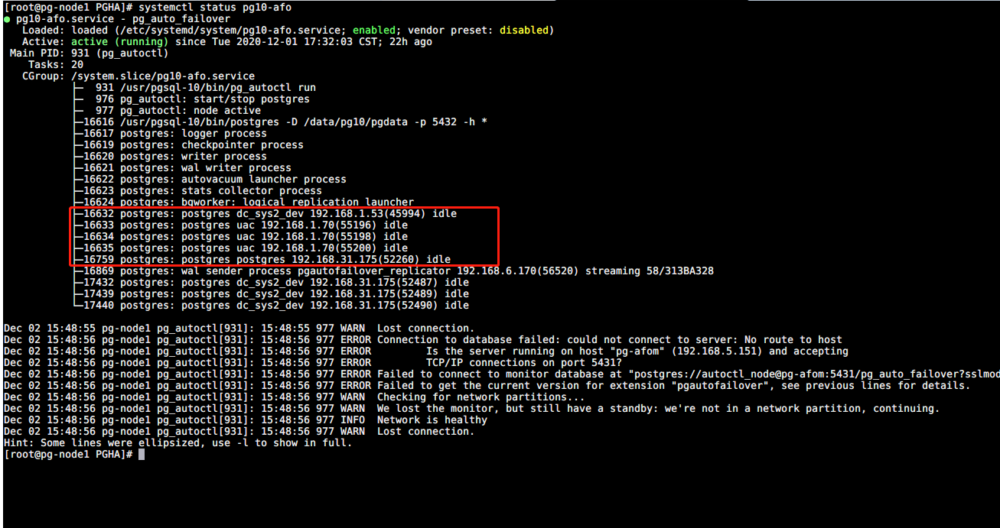
-
重启 故障节点，恢复：

注：
可增加 Monitor SPOF 解决方案，防止单点影响。
5.1.4 Monitor 故障转移测试
| Monitor1 | Monitor2 | Failover |
|---|---|---|
| :x: | :heavy_check_mark: | 是 |
故障转移测试：
-
手动造成 一个 Monitor 节点（MASTER）故障（断电/关机）；
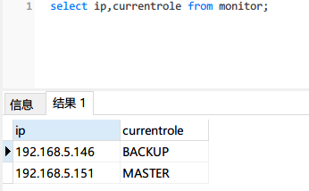

-
另一个备用 Monitor 节点接管服务


5.1.5 Monitor Failover 压测
7 X 24小时 ，模拟Monitor 节点故障（两个节点先后故障，间隔5分钟，每小时触发一次）
两个节点每个小时定时重启
# Node1
crontab -l
25 * * * * /sbin/reboot
# Node2
crontab -l
31 * * * * /sbin/reboot
failover 日志：
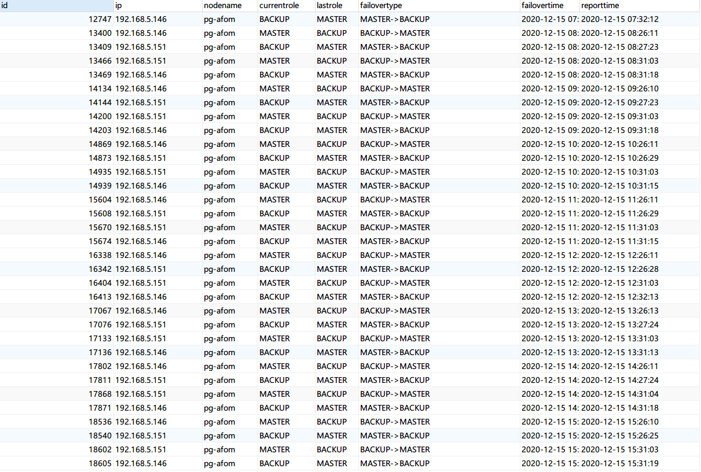5.1.6 Primary Failover 压测
7 X 24小时 ，每个小时让 Primary 节点故障两次（间隔10分钟）
# Node1
crontab -l
5 * * * * sh /opt/PGHA/failovertest.sh
55 * * * * sh /opt/PGHA/failovertest.sh
# Node2
crontab -l
5 * * * * sh /opt/PGHA/failovertest.sh
55 * * * * sh /opt/PGHA/failovertest.sh
# Node3
crontab -l
5 * * * * sh /opt/PGHA/failovertest.sh
55 * * * * sh /opt/PGHA/failovertest.sh
#!/bin/bash
# failovertest.sh
is_secondary=$(sudo su postgres -c "psql -p 5432 -c 'select * from pg_is_in_recovery();'" | head -n 3|tail -n 1)
is_secondary=`echo $is_secondary`
# 如果是主节点
if [[ ${is_secondary} == "f" ]]; then
echo "10秒后重启系统"
sleep 10
/sbin/reboot
fi
failover 日志

压测中进行故障转移：

5.2 JDBC 测试
驱动版本：postgresql-42.2.11
5.2.1 HA JDBC连接
url: jdbc:postgresql://pg-node3:5432,pg-node2:5432,pg-node1:5432/dbname?targetServerType=master
测试结果正常
5.2.2 读写分离JDBC连接
（待验证）
url: jdbc:postgresql://pg-node3:5432,pg-node2:5432,pg-node1:5432/dbname?targetServerType=perferSlave
5.3 数据库基准测试
基准测试主要了从 JDBC 驱动层到数据库层完全执行一个指令所需的时钟周期，即测试中实际执行的事务。
5.3.1 测试环境
- 测试工具：BenchMarkSQL 5.0 | 使用方法
- PG 版本： 10.15
- PG 服务器主要参数： 4C 8G
- PG 驱动版本：postgresql-42.2.11
- 客户端参数：略
BenchmarkSQL is an open source implementation of the popular TPC/C OLTP database benchmark. Version 5.0 is a major overhaul of the benchmark driver. This version supports Firebird, Oracle and PostgreSQL, adds foreign keys to the schema (as required by the specifications) and captures detailed benchmark
5.3.2 测试模型：TPC-C 标准测试
TPC-C 标准测试模拟了 5 种事务处理，通过这些事务处理来模拟真实的用户操作，事务分别为:
- 新订单（New-Order）
- 支付操作(Payment)
- 订单状态查询(Order-Status)
- 发货(Delivery)
- 库存状态查询(Stock-Level)
5.3.3 BenchmarkSQL 指标说明
- Latency 表示完全执行一个指令所需的时钟周期，潜伏期越少越好。
- tmpC 表示每分钟执行的事务数(NewOrders)
- tmpTOTAL 表示每分钟执行的总事务数
- runMins BenchmarkSQL 测试模式，分为 runTxnsPerTerminal 和 runMins ：
- runTxnsPerTerminal ：每个终端执行数模式
- runMins：执行时长模式
5.3.4 HA JDBC 连接基准测试
采用 BenchmarkSQL runMins 模式进行测试。
5.3.4.1 基准参照数据
基准参照数据取单机 JDBC 连接的的基准测试，单机是指只有一个主节点，没有 standby 节点数据复制的影响。测试多组，以下指标展示为典型值。
Run Properties
10:45:09,874 [main] INFO jTPCC : Term-00, +-------------------------------------------------------------+ 10:45:09,875 [main] INFO jTPCC : Term-00, BenchmarkSQL v5.0 10:45:09,875 [main] INFO jTPCC : Term-00, +-------------------------------------------------------------+ 10:45:09,875 [main] INFO jTPCC : Term-00, (c) 2003, Raul Barbosa 10:45:09,875 [main] INFO jTPCC : Term-00, (c) 2004-2016, Denis Lussier 10:45:09,876 [main] INFO jTPCC : Term-00, (c) 2016, Jan Wieck 10:45:09,877 [main] INFO jTPCC : Term-00, +-------------------------------------------------------------+ 10:45:09,877 [main] INFO jTPCC : Term-00, 10:45:09,878 [main] INFO jTPCC : Term-00, db=postgres 10:45:09,878 [main] INFO jTPCC : Term-00, driver=org.postgresql.Driver 10:45:09,879 [main] INFO jTPCC : Term-00, conn=jdbc:postgresql://pg-node1:5432/pressure 10:45:09,879 [main] INFO jTPCC : Term-00, user=postgres 10:45:09,879 [main] INFO jTPCC : Term-00, 10:45:09,879 [main] INFO jTPCC : Term-00, warehouses=10 10:45:09,879 [main] INFO jTPCC : Term-00, terminals=16 10:45:09,880 [main] INFO jTPCC : Term-00, runMins=10 10:45:09,880 [main] INFO jTPCC : Term-00, limitTxnsPerMin=100000 10:45:09,880 [main] INFO jTPCC : Term-00, terminalWarehouseFixed=true 10:45:09,880 [main] INFO jTPCC : Term-00, 10:45:09,880 [main] INFO jTPCC : Term-00, newOrderWeight=45 10:45:09,881 [main] INFO jTPCC : Term-00, paymentWeight=43 10:45:09,881 [main] INFO jTPCC : Term-00, orderStatusWeight=4 10:45:09,881 [main] INFO jTPCC : Term-00, deliveryWeight=4 10:45:09,881 [main] INFO jTPCC : Term-00, stockLevelWeight=4
10:55:31,085 [Thread-13] INFO jTPCC : Term-00, Measured tpmC (NewOrders) = 5435.37 10:55:31,086 [Thread-13] INFO jTPCC : Term-00, Measured tpmTOTAL = 12056.08 10:55:31,086 [Thread-13] INFO jTPCC : Term-00, Session Start = 2020-12-18 10:45:30 10:55:31,086 [Thread-13] INFO jTPCC : Term-00, Session End = 2020-12-18 10:55:31 10:55:31,086 [Thread-13] INFO jTPCC : Term-00, Transaction Count = 120627
Result Summary
| Transaction Type |
Latency | Count | Percent | Rollback | Errors | Skipped Deliveries |
|
|---|---|---|---|---|---|---|---|
| 90th % | Maximum | ||||||
| NEW_ORDER | 0.139s | 2.956s | 54384 | 45.084% | 1.081% | 0 | N/A |
| PAYMENT | 0.050s | 2.917s | 51700 | 42.859% | N/A | 0 | N/A |
| ORDER_STATUS | 0.017s | 0.193s | 4781 | 3.963% | N/A | 0 | N/A |
| STOCK_LEVEL | 0.018s | 0.617s | 4863 | 4.031% | N/A | 0 | N/A |
| DELIVERY | 0.000s | 0.001s | 4899 | 4.061% | N/A | 0 | N/A |
| DELIVERY_BG | 0.441s | 3.166s | 4899 | N/A | N/A | 0 | 0 |
TPM and TL
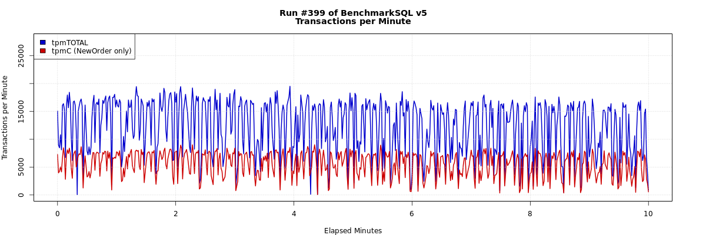

5.3.4.2 HA JDBC 基准测试数据
测试多组，以下指标展示为典型值。
Run Properties
12:17:50,020 [main] INFO jTPCC : Term-00, +-------------------------------------------------------------+ 12:17:50,020 [main] INFO jTPCC : Term-00, BenchmarkSQL v5.0 12:17:50,020 [main] INFO jTPCC : Term-00, +-------------------------------------------------------------+ 12:17:50,020 [main] INFO jTPCC : Term-00, (c) 2003, Raul Barbosa 12:17:50,020 [main] INFO jTPCC : Term-00, (c) 2004-2016, Denis Lussier 12:17:50,022 [main] INFO jTPCC : Term-00, (c) 2016, Jan Wieck 12:17:50,023 [main] INFO jTPCC : Term-00, +-------------------------------------------------------------+ 12:17:50,023 [main] INFO jTPCC : Term-00, 12:17:50,023 [main] INFO jTPCC : Term-00, db=postgres 12:17:50,023 [main] INFO jTPCC : Term-00, driver=org.postgresql.Driver 12:17:50,023 [main] INFO jTPCC : Term-00, conn=jdbc:postgresql://pg-node3:5432,pg-node2:5432,pg-node1:5432/pressure?targetServerType=master 12:17:50,023 [main] INFO jTPCC : Term-00, user=postgres 12:17:50,023 [main] INFO jTPCC : Term-00, 12:17:50,024 [main] INFO jTPCC : Term-00, warehouses=10 12:17:50,024 [main] INFO jTPCC : Term-00, terminals=16 12:17:50,025 [main] INFO jTPCC : Term-00, runMins=10 12:17:50,025 [main] INFO jTPCC : Term-00, limitTxnsPerMin=100000 12:17:50,025 [main] INFO jTPCC : Term-00, terminalWarehouseFixed=true 12:17:50,025 [main] INFO jTPCC : Term-00, 12:17:50,025 [main] INFO jTPCC : Term-00, newOrderWeight=45 12:17:50,025 [main] INFO jTPCC : Term-00, paymentWeight=43 12:17:50,025 [main] INFO jTPCC : Term-00, orderStatusWeight=4 12:17:50,025 [main] INFO jTPCC : Term-00, deliveryWeight=4 12:17:50,026 [main] INFO jTPCC : Term-00, stockLevelWeight=4
12:28:21,752 [Thread-9] INFO jTPCC : Term-00, Measured tpmC (NewOrders) = 4963.44 12:28:21,752 [Thread-9] INFO jTPCC : Term-00, Measured tpmTOTAL = 10986.67 12:28:21,752 [Thread-9] INFO jTPCC : Term-00, Session Start = 2020-12-18 12:18:21 12:28:21,753 [Thread-9] INFO jTPCC : Term-00, Session End = 2020-12-18 12:28:21 12:28:21,753 [Thread-9] INFO jTPCC : Term-00, Transaction Count = 109971
Result Summary
| Transaction Type |
Latency | Count | Percent | Rollback | Errors | Skipped Deliveries |
|
|---|---|---|---|---|---|---|---|
| 90th % | Maximum | ||||||
| NEW_ORDER | 0.170s | 4.330s | 49682 | 45.177% | 1.012% | 0 | N/A |
| PAYMENT | 0.062s | 4.268s | 47264 | 42.979% | N/A | 0 | N/A |
| ORDER_STATUS | 0.016s | 0.271s | 4330 | 3.937% | N/A | 0 | N/A |
| STOCK_LEVEL | 0.038s | 0.447s | 4386 | 3.988% | N/A | 0 | N/A |
| DELIVERY | 0.000s | 0.001s | 4309 | 3.918% | N/A | 0 | N/A |
| DELIVERY_BG | 0.455s | 4.377s | 4309 | N/A | N/A | 0 | 0 |

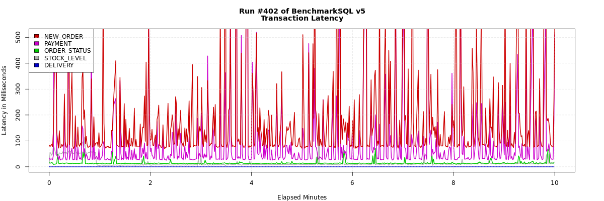
5.3.4.3 基准测试结果
| JDBC Type | Terminsls | tpmC | tpmTOTAL | Average | |||||
|---|---|---|---|---|---|---|---|---|---|
| #1 | #2 | #3 | #1 | #2 | #3 | tpmC | tpmTOTAL | ||
| HA | 16 | 4963.44 | 4898.79 | 4657.05 | 10986.67 | 10883.45 | 10324.87 | 4839.76 | 10731.66 |
| Single | 16 | 5435.37 | 5114.47 | 5412.43 | 12056.08 | 11341.28 | 12007.29 | 5320.76 | 11801.55 |
5.4 压测
压测主要指标解读参照基准测试。
terminal=16 主要指标
Run Properties
db=postgres driver=org.postgresql.Driver conn=jdbc:postgresql://pg-node3:5432,pg-node2:5432,pg-node1:5432/pressure?useUnicode=true&characterEncoding=UTF-8&autoReconnect=true&targetServerType=master user=postgres
warehouses=10 terminals=16 runMins=60 limitTxnsPerMin=100000
Running Average tpmTOTAL: 5960.14 Current tpmTOTAL: 2365524 Memory Usage: 117MB / 159MB
Measured tpmC (NewOrders) = 2677.05 Measured tpmTOTAL = 5960.14 Session Start = 2020-11-30 15:17:35 Session End = 2020-11-30 16:17:37 Transaction Count = 357847
Result Summary
| Transaction Type |
Latency | Count | Percent | Rollback | Errors | Skipped Deliveries |
|
|---|---|---|---|---|---|---|---|
| 90th % | Maximum | ||||||
| NEW_ORDER | 0.362s | 16.688s | 160731 | 44.916% | 0.978% | 0 | N/A |
| PAYMENT | 0.189s | 14.234s | 154400 | 43.147% | N/A | 0 | N/A |
| ORDER_STATUS | 0.110s | 2.864s | 14371 | 4.016% | N/A | 0 | N/A |
| STOCK_LEVEL | 0.072s | 13.617s | 14038 | 3.923% | N/A | 0 | N/A |
| DELIVERY | 0.000s | 0.001s | 14307 | 3.998% | N/A | 0 | N/A |
| DELIVERY_BG | 0.914s | 14.876s | 14307 | N/A | N/A | 0 | 0 |
TPM and TL
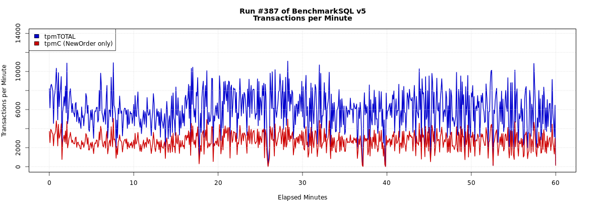

terminal=32 主要指标
Run Properties
db=postgres driver=org.postgresql.Driver conn=jdbc:postgresql://pg-node3:5432,pg-node2:5432,pg-node1:5432/pressure?useUnicode=true&characterEncoding=UTF-8&autoReconnect=true&targetServerType=master user=postgres
warehouses=10 terminals=32 runMins=60 limitTxnsPerMin=100000
Running Average tpmTOTAL: 7846.76 Current tpmTOTAL: 3115428 Memory Usage: 44MB / 83MB
Measured tpmC (NewOrders) = 3519.94 Measured tpmTOTAL = 7846.88 Session Start = 2020-11-30 11:40:57 Session End = 2020-11-30 12:40:57 Transaction Count = 470833
Result Summary
| Transaction Type |
Latency | Count | Percent | Rollback | Errors | Skipped Deliveries |
|
|---|---|---|---|---|---|---|---|
| 90th % | Maximum | ||||||
| NEW_ORDER | 0.576s | 13.890s | 211206 | 44.858% | 1.008% | 0 | N/A |
| PAYMENT | 0.429s | 14.443s | 203260 | 43.170% | N/A | 0 | N/A |
| ORDER_STATUS | 0.166s | 2.983s | 18754 | 3.983% | N/A | 0 | N/A |
| STOCK_LEVEL | 0.065s | 11.492s | 18946 | 4.024% | N/A | 0 | N/A |
| DELIVERY | 0.000s | 0.005s | 18667 | 3.965% | N/A | 0 | N/A |
| DELIVERY_BG | 1.344s | 16.202s | 18667 | N/A | N/A | 0 | 0 |
TPM and TL
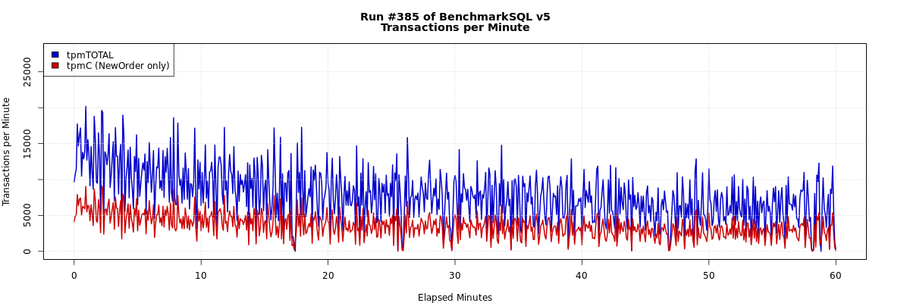

5.5 测试结论
- 故障转移测试
- 场景一：验证任意一个节点故障，都能保证PG服务可用和数据安全，符合预期；
- 场景二：验证了standby 故障，当可用 standby 节点数 < number_sync_standbys 时 PG 服务将降级为只读，符合预期；验证了主节点和一个 standby 节点故障，不影响可用性，符合预期；
- 场景三 验证 Monitor 节点故障不影响 PG 服务，符合预期；
- Monitor 故障转移测试验证了 Monitor SPOF 解决方案的功能可行，符合预期；
- 应用 JDBC 连接测试正常，符合预期；
- 从基准测试结果的两组数据对比上看，HA 和单机连接单位时间内执行的事务数差距大概差距在8%-10%（这个差距依据测试模型中 newOrder 的数据得出），略大于预期的5%。
- 压测中发现，大量的写操作会造成复制节点pg_wal 大量增长，磁盘压力增大，需要增对 pg_wal 参数进行调优。
6 应用
任何阶段的风险和不适用评估都会对下一阶段有决定性的影响。
| 阶段 | 规模 | 目标 | 下个阶段 | 备注 |
|---|---|---|---|---|
| DEV_READY | 2个应用 | failover 压测稳定运行 1周 | DEV | 已稳定运行7天 |
| DEV | 全部应用 | 稳定运行 3周 | TEST | / |
| TEST | 全部应用 | 稳定运行 3周 | PROD_READY | / |
| PROD_READY | 符合业务规模的压力测试 | 稳定运行4周 | PROD | / |
| PROD | 待定 | / | / | / |
7 总结
PG HA方案解决了目前生产上 PG 单点故障问题，实现 Postgres 服务和数据集的高可用性，在原有 pg-auto-failover 之上补充了 Monitor SPOF 的解决方案。整体方案在 DEV_READY 阶段做了完整测试和验证，包括：故障转移（压测）、JDBC 应用层接入、数据库基准、数据库压测，测试结果基本符合预期；数据基准测试性能上的差距主因是同步的流复制，流复制是主流 PG Active/Standby HA 方案的基础，这部分性能上的差距在类似方案上也是存在的；在验证和测试部分下个阶段可以更深入关注异步复制的影响、基准上参照可以考虑对比非 pg-auto-failover 中自动配置的流复制。
整体上推荐方案进入下一阶段的使用和验证。
附录
pg_auto_failover Glossary
| 概念 | 描述 |
|---|---|
| Formation | 编队是一起管理的 PG 服务的逻辑集合。 |
| Monitor | Monitor 是 pg-auto-failover 里的一个服务，用于跟踪一个或多个包含节点组的编队。Monitor 服务以一个 PG 扩展的方式实现，所以当创建 Monitor 服务时，将会初始化一个 PG 实例，并使用该扩展进行配置和启动。Monitor 服务时嵌入在 PG 实例里面的 |
| Group | 节点组， 一个节点组由 PG 主节点和具有一个或多个同步复制的 standby 节点组成，以 HA 的方式提供单个 PG 服务。 |
| Keeper | Keeper 是 pg-auto-failover 的守护程序，必须在运行 PG 节点的服务器上运行。Keeper 控制本地的 PG 实例（通过 pg_ctl 命令和 SQL 查询），并与 Monitor 通信： 1、根据PG 的统计信息视图，发送本地节点的更新数据，例如服务器之间的 WAL 增量 2、从 Monitor 接受状态分配 |
| Node | 节点是运行 PG 实例和 Keeper 服务的服务器。 |
| State | 状态是每个实例和每个组情况的表示。 |
Failover State reference

| 状态 | 描述 | 场景 |
|---|---|---|
| init | 节点第一次向 Monitor 注册时，被分配的状态；这时除了知道节点存在，并不知道节点的任何信息。 | / |
| single | 只有一个节点时，或其他节点被删除时；此时相当于当个 PG 实例，没有 HA 和 failover的能力。 | / |
| wait_primary | 计划成为主节点（primary），但还未成为时；此时这个节点已知 standby 节点的信息（名称、IP），并允许 hot standby （复制连接）。 | 1、新的健康节点注册时 2、现有 Secondary 节点不健康时（这种情况下，从 priamry 到 wait_primary 这段时间内，同步复制和查询都会被限制） |
| join_primary | 当 standby 节点加入时，应用于主节点；此时主节点将修改HBA 设置，之后新的节点才能使用 pg_basebackup 命令。 | / |
| primary | 当主节点存在一个健康的 standby 节点，并且 WAL 复制落后为0。 | / |
| wait_standby | Monitor 判定为 standby 节点，此时等待主节点授权允许 hot standby（复制连接）。 | / |
| catching_up | 主节点允许 hot standby（复制连接）时，standby 节点被分配的状态。 | / |
| secondary | 是主节点的 hot standby ，WAL 是最新的。 | / |
| maintenance | 节点进入维护状态。 | / |
| prepare_maintenance | 主节点进入维护状态前的中间状态，确保 standby 节点完成所有写确认。 | / |
| wait-maintenance | standby 节点进入维护状态前的中间状态；为了确保写不会被阻塞，节点会被切换到异步复制。 | / |
| draining | primary 和 demoted 之间的中间状态，等待复制缓冲区完成刷新；此时节点将不会接受新的写请求。 | 主节点故障时，被降级 |
| demoted | 主节点处于降级状态，PG 实例将会被停止。 | |
| demote-timeout | 主节点被 Monitor 分配 demoted 状态，但主节点上的 keeper 服务未在超时窗口内进行确认收到，此时Monitor 会分配 demote-timeout 给主节点。 | 主节点突然断电或关机了，被降级，keeper 服务未报告状态。 |
| stop-replication | stop-replication 状态确保在故障转移时，主数据库先进入 demoted（降级）状态， standby 才变为单个数据库（可写）。 | |
| prepare-promotion | prepare_promotion 状态用于准备将 standby 服务器升级。 | |
| report-lsn | 当故障转移时，存在多个 standby 节点时，将report_lsn 状态分配给 standby 节点；Monitor 将会选择偏移最大 LSN 作为新的主节点，所以所有 standby 会先报告最新的 LSN。 | |
| fast-forward | 故障转移时，当一个 standby 节点被选为主节点是因为 candidate-priority 配置（比其它节点的大），而不是因为它的 LSN 偏移最大，此时节点会被分配 fast_forward 状态，由此节点会利用 PG 级联复制功能，从最大 LSN standby 节点获取丢失的 WAL。 |
Failover logic
Node state machine

Group state machine

FQA
虚拟机下使用 huge_page 重启后，huge_page失效，PG会重启失败
pg-auto-failover: failover state machine
pg-auto-failover : number_sync_standby
pg-auto-failover : Client Side HA
pg-auto-failover configuration
postgres jdbc connection parameters
the monitor is a spof in pg-auto-failover design how should we handle that
PostgreSQL Failover、Warm Standby
PostgreSQl Connection parameters
SPOF: 单点故障 (single point of failure)
以下部署方案适合在预生产、生产环境中使用
准备
主机要求参考
| Host IP | Host Name | Role | 备注 |
|---|---|---|---|
| 192.168.5.141 | master1 | master, etcd | 2C/8G/100G |
| 192.168.5.142 | master2 | master, etcd | 2C/8G/100G |
| 192.168.5.143 | master3 | master, etcd | 2C/8G/100G |
| 192.168.5.145 | worker01 | worker | 4C/16G/100G |
| 192.168.5.146 | worker02 | worker | 4C/16G/100G |
| 192.168.5.147 | worker03 | worker | 4C/16G/100G |
| 192.168.5.148 | vip | vip | |
| 192.168.6.156 | lb-0 | lb (Keepalived + HAProxy) | |
| 192.168.6.159 | lb-1 | lb (Keepalived + HAProxy) |
安装负载均衡器
以下使用Keepalived + HAProxy作为负载均衡器
yum安装
yum install keepalived haproxy psmisc -y
配置HAProxy
在lb-0和lb-1上做如下配置，注意backend的服务地址：
# HAProxy Configure /etc/haproxy/haproxy.cfg
global
log 127.0.0.1 local2
chroot /var/lib/haproxy
pidfile /var/run/haproxy.pid
maxconn 4000
user haproxy
group haproxy
daemon
# turn on stats unix socket
stats socket /var/lib/haproxy/stats
#---------------------------------------------------------------------
# common defaults that all the 'listen' and 'backend' sections will
# use if not designated in their block
#---------------------------------------------------------------------
defaults
log global
option httplog
option dontlognull
timeout connect 5000
timeout client 5000
timeout server 5000
#---------------------------------------------------------------------
# main frontend which proxys to the backends
#---------------------------------------------------------------------
frontend kube-apiserver
bind *:6443
mode tcp
option tcplog
default_backend kube-apiserver
#---------------------------------------------------------------------
# round robin balancing between the various backends
#---------------------------------------------------------------------
backend kube-apiserver
mode tcp
option tcplog
balance roundrobin
default-server inter 10s downinter 5s rise 2 fall 2 slowstart 60s maxconn 250 maxqueue 256 weight 100
server kube-apiserver-1 192.168.5.141:6443 check
server kube-apiserver-2 192.168.5.142:6443 check
server kube-apiserver-3 192.168.5.143:6443 check
检查配置文件语法是否正确
haproxy -f /etc/haproxy/haproxy.cfg -c
重启HAProxy和enable HAProxy
systemctl restart haproxy && systemctl enable haproxy
Stop HAProxy
systemctl stop haproxy
配置Keepalived
配置文件在
/etc/keepalived/keepalived.conf
主HAProxy
主HAProxy 192.168.6.156
global_defs {
notification_email {
}
smtp_connect_timeout 30
router_id LVS_DEVEL01
vrrp_skip_check_adv_addr
vrrp_garp_interval 0
vrrp_gna_interval 0
}
vrrp_script chk_haproxy {
script "killall -0 haproxy"
interval 2
weight 2
}
vrrp_instance haproxy-vip {
state MASTER
priority 100
interface ens192
virtual_router_id 60
advert_int 1
authentication {
auth_type PASS
auth_pass 1111
}
unicast_src_ip 192.168.6.156
unicast_peer {
192.168.6.159
}
virtual_ipaddress {
#vip
192.168.5.148/24
}
track_script {
chk_haproxy
}
}
备HAProxy
备HAProxy 192.168.6.159
global_defs {
notification_email {
}
router_id LVS_DEVEL02
vrrp_skip_check_adv_addr
vrrp_garp_interval 0
vrrp_gna_interval 0
}
vrrp_script chk_haproxy {
script "killall -0 haproxy"
interval 2
weight 2
}
vrrp_instance haproxy-vip {
state BACKUP
priority 90
interface ens192
virtual_router_id 60
advert_int 1
authentication {
auth_type PASS
auth_pass 1111
}
unicast_src_ip 192.168.6.159
unicast_peer {
192.168.6.156
}
virtual_ipaddress {
192.168.5.148/24
}
track_script {
chk_haproxy
}
}
启动keepalived并enable keepalived
systemctl restart keepalived && systemctl enable keepalived
验证可用性
用于查看每个磅节点的 vip 绑定状态：ip a s
ip a s
通过以下命令暂停 VIP 节点 HAProxy：
systemctl stop haproxy
再次使用 检查每个 lb 节点的 vip 绑定，并检查 vip 是否漂移：ip a s
ip a s
或者，使用下面的命令：
systemctl status -l keepalived
创建集群
./kk create cluster -f config-v1.18.6-v3-3m3w-ha.yaml
构建实时湖仓
By Siu 2021/7/24
最近一直在思考由数据采集为起始，一直到数据治理、数据服务链路的数据湖解决方案，同时也看到了业界、社区的一些新的思路如 Hudi、 Icebreg、NewSQL，结合目前公司的的大数据架构、数据服务业务做一些更深入的分析和思考。
1 大数据，它解决了什么问题？
从数据管理技术的演进历程上看，从上世纪70年代第一个关系型数据库 System R 出现，到 80、90年代，涌现了大量商业关系型数据库，Oracle、IBM DB2、微软 SQL Server，以及现在比较流行的开源数据库 MySQL、PostgreSQL。
到了 2000 年初期，互联网时代到来，数据开始指数增长，传统关系型数据库无法存储、处理如此庞大的数据。2004 年，Google 的三大论文，GFS（分布文件存储）、MR（计算）、BigTable（数据架构），依此为指导 Hadoop 生态开始繁荣发展， 大家普遍认识到单一的数据库产品已经无法满足用户的需求，数据处理领域的技术方向开始分化：
-
OLTP 领域依然被传统关系型数据库占据（SQL）
-
OLAP 领域则成为了大数据技术的主战场（NOSQL）
2010s 早期，随着硬件的发展，内存、硬盘、带宽、网络延时等有了极大提升，数据库的架构迎来变革。 以 Google Spanner 代表的分布式数据库开始大规模投入生产。这时期 OLTP 和 OLAP 的概念逐渐开始模糊，HTAP 的概念应运而生，将 OLTP 和 OLAP 混合在一起，在同一个数据库上处理这两种负载，回到了数据库产品的初衷，NewSQL 时代即将到来。
现在我们再来看下这个问题”大数据，它解决了什么问题？“
- 传统数据库可以有限的解决 OLTP 和 OLAP 负载，但当数据庞大时，AP 问题无法解决
- 大数据致力且擅长解决数据规模庞大的 OLAP 场景，特别是 Hadoop 的数仓架构逐渐成为主流（现在看，可称为传统数仓架构）
这里我们关注到两个要点：
-
**1、数仓 **
-
2、NewSQL(HTAP)
下面先看下传统数仓架构的演进。
2 传统数仓架构的演进
数据仓库的概念早在上世纪90年代就已经被提出，但随着Hadoop生态的流行，数仓开始有了实际且有力的载体。下面用几个简单的架构表达各个阶段的演进。
2.1 离线数仓（T+1）
图 2-1，数仓架构-离线数仓

2.2 Lambda 实时数仓(T+nm)
图 2-2，数仓架构-lambda实时数仓

2.3 Kappa 实时数仓(T+0)
图 2-3，数仓架构-kappa实时数仓

数据实时性，一直都是数仓架构演进的重要目标，也是用户的重要需求。
3 数仓架构的关注点
图 3-1，数仓架构的关注点

4 当前架构
在传统数仓构建演进的过程中，业界一直在围绕两大主要目标：
- 数据实时性
- 海量数据处理能力
4.1 当前架构
图 4-1，大数据架构

4.2 当前架构解决的问题
表 4-1，大数据组件解决问题
| 组件 | 解决的问题 | 备注 | 归类 |
|---|---|---|---|
| HDFS | 分布式文件存储 | 存储 | |
| MapReduce | 批处理计算 | 计算 | |
| Hive | 类SQL 的计算（MR） | 计算 | |
| Hbase | BigTable 的开源实现，提供快速随机访问的数据的能力 | 依赖 MR 的计算能力，依托 HDFS 作为存储 | 存储、数据库 |
| Kudu | HDFS<-Kudu->Hbase，拥有一些OLAP和OLTP的特性，低延迟随机访问、逐行插入、更新和快速分析，中间层、集市层 | 依赖 Spark 、Impala 计算 | 存储，数据库 |
| Spark | 处理数据（kudu），Spark Streaming 实时处理 | 计算 | |
| Impala | 交互式查询，解决hive的查询时延问题（目前用于公司的查询检索产品），MPP 计算分析 | 采用 HDFS 和 HBase 存储数据 | 计算，MPP |
| ES | 对外服务接口 | 计算、存储 |
4.3 当前架构存在的问题
-
目前并未演进到 lambda、kappa 架构，数据延时高
-
数仓分层经过 ETL 逻辑复杂，一份数据存储于多种介质，存储、时间成本过高
-
数据链路长
-
技术栈复杂
-
数据开发技术成本大：尤其是数据开发工程师、数据分析工程师
5 我们需要解决的几大问题
我们要解决的几大问题：
1、业务在线层：
- 数据汇聚：在线业务的数据CDC或批量采集同步（医院的交易型系统数据）、海量存储、高并发写、行更新
- 数据服务：OLTP、海量存储（PB）
2、离线数仓层（数据湖）：海量存储（10PB+）、计算（批处理）
3、实时数仓层：OLAP、MPP、海量存储（PB）、计算（流处理）
下面我们看下，上文关注的第二个重点 NewSQL(HTAP) 会给数仓建设带来什么样的解决思路。
6 NewSQL 的实时数仓架构
6.1 MySQL 作为数仓有什么问题？
上面提到传统数据库具备有限的解决 OLTP 和 OLAP 的负载，但并没有深入讨论，传统关系型数据库的不足；这里假设一下用 MySQL 作为我们的数据仓库架构核心会面临哪些问题（ODS、DWD、DWS、ADS）。
- 无法满足海量数据的存储（ODS、DWD、DWS）
- 无法满足海量数据的分析需求（DWD、DWS）
- 无法满足大规模并行计算的需求（ODS、DWD）
- 无法满足横向扩展的需求（ODS、DWD、DWS）
6.2 TiDB 能力对比
TiDB 是一个开源的 NewSQL 数据库，支持混合交易和分析处理 （HTAP） 工作负载。它兼容 MySQL，可水平扩展、具有强一致性、分布式和高可用性的特点。
表 6-1，TiDB 能力对比
| 能力 | 现有方案 | TiDB |
|---|---|---|
| 随机访问的数据库（二级索引） | 是，hbase + phoenix | 是 |
| 随机访问、更新 | 是，kudu | 是 |
| 海量存储 | 是，hdfs | 是 + hdfs |
| MPP 能力 | 是，impala | 是，Tiflash |
| 交互查询 | 是，impala | 是 |
| 类 sql 查询 | 是，impala、hive | 是 |
| 批处理计算能力 | 是，MR、Spark | 是，TiSpark |
| 数据应用层点查能力 | 是，ES + hbase | 是 |
| 通用的数据访问协议 | 否 | 是，兼容 MySQL 5.7 |
| 高级数据库的权限模型 | 否 | 是，mysql 的权限模型 |
| 标准SQL 查询能力 | 否 | 是，SQL |
| 实时数仓 | 否，未来可演进 | 是 |
| AP、TP 负载隔离 | 否 | 是，TiFlash |
6.3 NewSQL 产品对比
待补充，StarRocks 为不同的产品类型。
表 6-2，NewSQL 产品横向对比
| cockroachdb | OceanBase | TiDB | StarRocks（略） | |
|---|---|---|---|---|
| 类型 | 分布式/NewSQL/HTAP | 分布式/NewSQL/HTAP | 分布式/NewSQL/HTAP | 分布式/MPP |
| 定位 | The most highly evolved database on the planet. Born in the Cloud. Architected to Scale and Survive. | 分布式关系数据库 | 实时 HTAP 数据库 | 极速MPP数据库 |
| 开源 | 2014，MIT Star 21.1k Contributions 512 | 2021，MulanPubL-2.0 Star 3.3k Contributions 70 | 2014，Apache License 2.0 Star 29.1k Contributions 626 | 2021，Elastic License 2.0 Star 1.2k Contributions 35 |
| 文档 | [英文](CockroachDB Docs) | 中文 | 中/英文 | https://docs.starrocks.com/zh-cn/main/introduction/StarRocks_intro |
| 数据量级 | PB | PB，单表万亿，1500 节点 | PB，单表千亿，500 节点 | 10PB |
| ACID | 是 | 是 | 是 | 部分 |
| SQL | 兼容 postgresql | 兼容 mysql 5.6，兼容 oracle（企业版） | 兼容 mysql 5.7 | 兼容 mysql |
| 安全 | RBAC；LDAP | RBAC | RBAC，表级 | RBAC，表级；LDAP |
| 多租户 | 是，资源隔离 | |||
| 分布式事务 | 乐观事务模型 | 乐观事务模型 | ||
| KV存储引擎 | RocksDB | RocksDB | ||
| 数据一致性/共识算法 | Raft | Paxos | Raft | Paxos |
| 部署 | tiup | 企业版有部署管理工具 | ||
| 监控 | tidb dashboard,grafana | |||
| 数据迁移 | ||||
| 总结 | AP 在 Tiflash 加持下会比 oceanbase 性能好， |
- TP：ob>tidb/cr>sr
- AP：sr>tidb>ob/cr
- 开源和生态：tidb>cr/sr/ob
6.4 TiDB 的应用场景
TiDB 的应用案例很多，有很多互联网、金融行业的成功实践案例：
丰巢、美团、北京银行、光大银行、中国平安、小红书，360、陆金所、中通、58、汽车之家、中国电信、国家电网
-
替换 Mysql 作为 TP库，带来 AP 能力，交易分析一体化
- [丰巢]([精选实践]TiDB 在丰巢核心支付平台百亿级数据的深度实践 - 技术文章 / 用户实践 - AskTUG)：核心支付系统，百亿规模数据
- [美团](客户案例 | PingCAP)：数百个 TiDB 集群，1700 多个物理节点。单集群最大 40 多个节点，单表记录最大上千亿条；
- 中国银行：支撑域、监控系统
- [光大银行](客户案例 | PingCAP)：理财业务、2000万笔/小时、5000万笔/日，40TB
- 北京银行：支付清算平台、银联无卡快捷支付平台、金融服务互联平台、网贷业务平台核心金融业务场景
- 中国平安、陆金所
-
实时数仓方案
- 浙商银行：实时数仓、数据量等未知
- [小红书](客户案例 | PingCAP)：实时数据服务，数据产生的速率峰值 QPS 达到三四万，单表一天写入 5 亿左右的数据
- [中通](客户案例 | PingCAP):双十一大促中，TiDB 同时支撑线上 OLTP 和 OLAP 的业务， QPS 峰值在 12 万+，支持百亿级的插入和更新。
-
作为组件的替代方案
- hbase 用 TiKV
- MPP 场景应用
6.5 构建数据湖和实时数仓
6.5.1 总体架构
图 6-1，整体架构

用户的数据可以通过各种各样的方式写进 TiDB，在 TiDB 里面在进行一些 ETL 之类的操作然后写入到离线计算中，最后再将结果反馈到 TiDB。TiDB 可以直接对外提供实时数据分析的服务，这也是非常流行的架构之一。
6.5.2 技术架构
图 6-2，技术架构

- 四个场景
- 数据汇聚
- CDC
- 批流一体（Flink SQL + UDF），入湖入仓
- 异构数据海量存储
治理系统数据、标化系统维表数据hive metadata（调度监控、资源监控的场景）
- 数据服务
- 接口点查
事务型交易- 数据导入/导出
- 数据分析
- 数仓多维分析、关联分析（MPP/TiFlash）
- 湖仓数据关联分析（TiSpark/Spark）
- Ad-hoc ，大数据交互查询（Trino+Iceberg，MPP/TiFlash）
- 跨源级联查询（Trino）
- 数据共享交换
- 湖仓数据交换（TiSpark/Spark）
跨域的数据交换（ADS，TiBinlog）跨域的数据发布/订阅（ADS，TiCDC+MQ+多租户）
- 数据汇聚
- 三层架构
- 业务层
- CDC + MQ + 批流一体（Flink SQL/UDF），实时处理入湖入仓
- 标准服务接入方式 SQL/JDBC，可负载交易系统
- 提供数据服务、数据分析、数据共享交换标准的接口/服务
- 实时数仓
- 分析和点查（HTAP）
- HTAP 负载隔离，按需扩展
- PB 级数据负载能力
- 数据权限/访问控制（RBAC）
- 数据湖
- 统一存储、异构海量存储（结构/半结构/非结构化数据）
具备湖仓一体的能力
- 业务层
- 主要技术栈：
- 存储：HDFS、TiKV/TiFlash(RocksDB)
- 计算：Flink、Spark、MR/Tez
- SQL/MPP 引擎：Trino
- 其它：
- iceberg（表格式）、Ranger（权限）、ShardingSphere（脱敏加密）
- 降本方案
AIT（all-in-tidb，or in NewSQL）AISR （all-in-starrocks）
6.5.3 业务架构（待更新）
图 6-3，业务架构
6.5.4 收益
| 序号 | 收益 |
|---|---|
| 1 | 数据实时性高 |
| 2 | 技术栈统一，可扩展性强 |
| 3 | 数据业务线清晰： - 数据开发：采集（CDC）、实时处理（Flink）、批处理（Spark） - 数仓建设：围绕 TiDB 构建数据服务 - 数据分析： MPP 引擎、TiSpark/Spark 构建分析能力 |
| 4 | 数据内治理：统一的数据仓库，hive meta+治理交易数据/标化维表数据，一定程度达到”数据内治理“ - 库、表、字段元信息 - 表：表行数、表大小、行平均大小、创建时间、更新时间 |
| 5 | 数据安全 - 数仓：数据权限控制（RBAC，库、表） - 数仓：数据脱敏、数据加密（中间件提供支持） - |
| 6 | 开发体验： - 数据访问方式 SQL，Mysql 协议 - 基于 SQL 数据分析 - 丰富的 SQL Client |
| 7 | 节约成本：覆盖大部分场景，OLTP（100%）、OLAP（>80%）；节约存储、计算、带宽 |
| 8 | 运维和管理： - Ambari - 扩容工具 TiUP - 备份与恢复工具 BR - 监控：TiDB Dashboard 集群关键指标：SQL 分析/慢日志，实例、主机、Region 监控等 |
6.5 POC 计划
待补充
6.5.1 整体目标
- 数据实时：10 mins
- 数据仓库：分层统一存储，提供大部分数据服务能力（现有100%，未来80% 场景）
- 数据内治理：满足基础元数据治理的需求（数据仓库）
- 数据安全
- 数据仓库中实现基于角色的权限控制（库、表）
- 数据仓库中实现数据脱敏、加密（透明中间件）
- 数据湖：海量存储数据（结构化、半结构化、非结构化）和数仓模型类数据、离线分析、湖仓数据交换
问题：
- 批量写的性能问题是否存在？如果存在如何规避
- 大字段的存储限制（6M-120M）
宽表限制：默认为 1017，最大可调至 4096技术的掌握能力
REF
-
Kudu
- kudu现在拥有一些OLAP和OLTP的特性，但是缺少对跨行的原子性、一致性、隔离性、持久性事务的支持
- kudu仅仅是一个存储层，因此它并不处理数据，而是依赖于外部的处理引擎比如Imapala、Spark等来处理。kudu把数据按照自己的列存储格式存储在底层的Linux文件系统，不像HBase那样，Kudu不以任何方式使用HDFS。
-
Impala 大数据生态的MPP
-
TiDB
-
真正意义上的 HTAP 数据库；
-
互相隔离的 OLAP 和 OLTP 负载；
-
分析友好，强实时性、强一致性的列存；
-
-
DW数据分层，由下到上为DWD，DWB，DWS。
-
DWD：data warehouse details 细节数据层，是业务层与数据仓库的隔离层。主要对ODS数据层做一些
数据清洗和规范化
的操作。
- 数据清洗：去除空值、脏数据、超过极限范围的
-
DWB：data warehouse base 数据基础层，存储的是客观数据，一般用作中间层，可以认为是大量指标的数据层。
-
DWS：data warehouse service 数据服务层，基于DWB上的基础数据，整合汇总成分析某一个主题域的服务数据层，一般是宽表。用于提供后续的业务查询，OLAP分析，数据分发等。
- 用户行为，轻度聚合
- 主要对ODS/DWD层数据做一些轻度的汇总。
-
ADS： application data store ，数据应用层
-
-
support pulsar's sink. by cocotyty · Pull Request #751 · pingcap/ticdc (github.com)
本页编辑 @gongshiwen 
为什么会开始思考设计 jpl 和构建 CI/CD 平台？
项目越来越多，项目的构建方式各不相同， 在不同的项目团队CI 的能力水平不同，策略和模型方法也不同；整体上项目的CI 能处于较低水平（按照表-1评估处于1-2之间的能力阶段），需要系统性、自动化地提高整体的 CI 能力，提高研发效能。
表-1：CI 能力阶段
| 阶段 | CI 能力 |
|---|---|
| 1 初始阶段 | 用手工的方式或者部分自动化方式进行构建，构建环境不能保证稳定和一致性，各 种工具分散管理，对源码进行了版本控制 |
| 2 基础阶段 | 通过持续集成服务器进行定期的自动构建，按需手动构建，或者在代码提交之后触 发自动构建，基本可以保证构建是稳定的和可重复的，源码及构建所需的设定文件 和脚本都纳入了版本控制 |
| 3 可靠阶段 | 结合版本管理模型（分支模型）和开发方式，提供进一步的持续集成能力，不仅对 代码和构建所需脚本进行了版本管理，而且能够对进行标准化构建所需的一切都进 行版本管理，保证不会因为构建服务器的损坏而丧失稳定的构建能力 |
| 4 成熟阶段 | 具有每日数次部署或按需部署所需要的能力，使用基于主干的版本管理，构建过程 实时可视，结合版本管理、需求管理、缺陷管理、运维监控进行一定程度的集成管 理，能实现代码和需求的关联，缺陷和需求、故障和需求等局部关联，并可以进行 相关数据的展示和分析 |
| 5 优化阶段 | 依据持续集成的统计反馈信息进行不断改善和优化，形成需求、缺陷、运维、监控 统一的管理平台，以促进各个团队之间更好地进行协作和沟通 |
那 jpl 又是什么？
jpl 是一个内部公共的 Jenkins Pipeline Library ，基于 Jenkins 扩展共享库（Shared Library）的能力，用 groovy 代码定义和编排 CI/CD 流水线阶段和步骤，用于简化项目的 CI/CD 配置，提升项目的 CI/CD 能力：使项目保持频繁部署，快速生成可部署的软件，提高项目的能见度；快速发布，能够应对业务需求，并更快地实现软件价值；编码->测试->上线->交付的迭代周期缩短，同时获得迅速反馈。
jpl 基于 Jenkins 作为 CI/CD 的执行引擎，并结合当前公司业务特性和规范设计的多分支流水线，实现了包括：代码检出、前置检查（仓库规范、分支模型规范、Semver 规范）、编译和打包、Sonar 扫描、提交分析、自动归档制品、部署、触发自动化接口测试、自动合并代码、归档已发布代码、邮件通知等流水线步骤；借助 Jenkins BlueOcean 的功能使构建过程实时可视，并设计实现了一些常用的图形化操作：启停服务、从制品库发布、手动部署所有服务、刷新Jenkinsfile、跳过阶段、暂停进入调试。
jpl 实现了 Pipeline as Code，为 CI/CD 实践过程中的“最后一公里”保驾护航。
Ref
-
表-1 来自《企业级 DevOps 实战》
-
流水线即代码(Pipeline as Code)：通过编码而非配置持续集成/持续交付(CI/CD)运行工具的方式定义部署流水线
-
持续集成（continuous integration）
持续集成是一种软件开发实践，要求团队成员经常集成他们的工作。开发人员每次代码合并都会触发持续集成服务器进行自动构建，这个过程包括了编译、单元测试、集成测试、质量分析等步骤，通过自动化的过程进行验证，以尽快检测集成错误。这种方法会使得集成问题大幅减少，更快地实现有凝聚力的软件开发。
Martin Fowler
CI/CD 架构

- 规范：定义流水线、分支模型和开发方式
- 分布式代码版本管理（Gitlab）
- 强大的、可扩展能力的 CI/CD 引擎（Jenkins）
- Piepline Library：
cec-jpl定义和编排了 CI/CD 流水线(Pipeline as Code) - 标准的软件系统依赖管理、制品管理（Nexus）
Jenkins Cluster
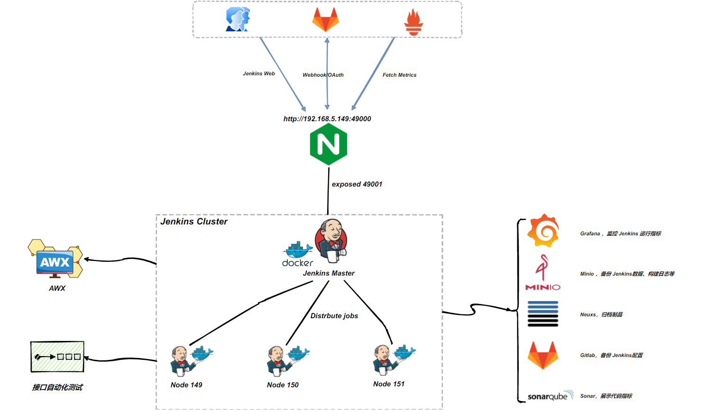
Jenkins 作为 CI/CD 的执行引擎，构建一个可快速故障恢复、迁移，动态伸缩的 Jenkins 集群是设计阶段的主要目标。为此在设计之初，投入了大量时间调研、测试，最终选用 Docker 来动态构建我们的 Jenkins 集群：
-
服务可快速恢复：当 Jenkins Master 出现故障时，通过docker可快速恢；
-
构建环境稳定和一致：通过docker容器，保障每个流水线运行环境一致；
-
动态伸缩，合理使用资源：每次运行 Job 时，会创建一个 Jenkins Slave，Job 完成后，Slave 自动注销并删除容器，资源自动释放。
-
扩展性好：当资源严重不足而导致 Job 排队等待时，可以很容易调整slave的数量，从而实现扩展。
多分支流水线设计
流水线阶段
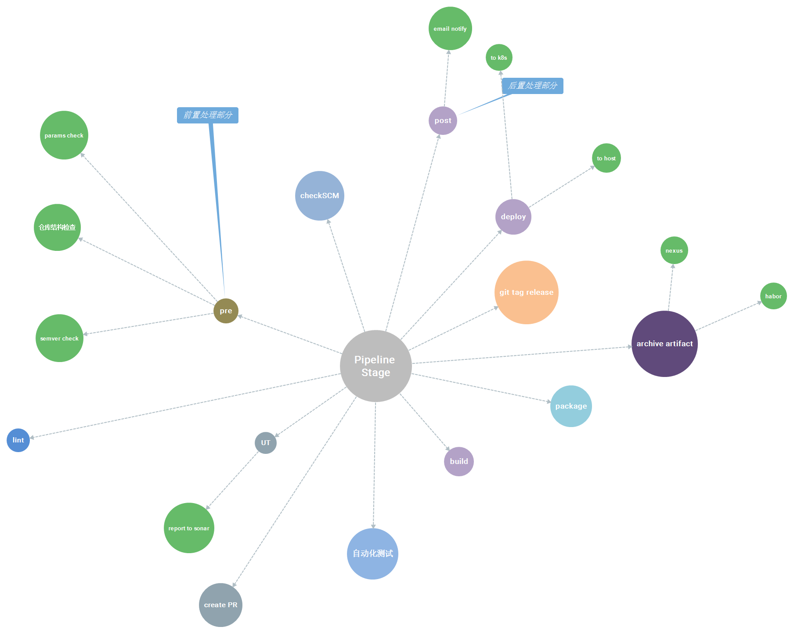
分支模型和多分支流水线
** v2 **

表-2-1：多分支流水线（V2）
| 流水线名称 | 分支 | 分支类型 | 分支保护 | 是否归档制品 | buildId 起始 | 部署环境 | 成功后影响 |
|---|---|---|---|---|---|---|---|
| 开发预发验证 | feature-* | 临时 | 否 | 否 | 100 | DEV | / |
| 开发集成 | develop | 永久 | 是 | 是 | 1000 | DEV | / |
| 测试集成 | release-* | 临时 | 是 | 是 | 300 | TEST | / |
| 测试集成 (BUG） | fix-* | 临时 | 否 | 否 | 500 | / | PR & Merge 到 develop，触发开发集成 |
| 预生产集成 | pre-* | 临时 | 否 | 否 | 700 | PROD | PR 到 master |
| 预生产集成（BUG） | prefix-* | 临时 | 否 | 否 | 800 | / | PR 到 pre-* |
| 生产预发 | master | 永久 | 是 | 是 | 5000 | PROD | PR & Merge 到 develop，触发开发集成 |
| 生产预发（BUG） | hotfix-* | 临时 | 否 | 否 | 900 | / | PR 到 master |
** v3 **

表-2-2：多分支流水线（V3）
| 流水线名称 | 分支 | 分支类型 | 分支保护 | 是否归档制品 | 部署环境 | 成功后影响 |
|---|---|---|---|---|---|---|
| 开发预发验证 | feature-* | 临时 | 否 | 否 | DEV | / |
| 开发集成 | develop | 永久 | 是 | 否 | DEV | / |
| 测试集成 | release-* | 临时 | 是 | 是 | TEST | / |
| 测试集成 (BUG） | fix-* | 临时 | 否 | 否 | / | PR & Merge 到 develop，触发开发集成 |
| 生产预发 | master | 永久 | 是 | 否 | PROD | PR & Merge 到 develop，触发开发集成 |
| Hotfix | hotfix-* | 临时 | 否 | 否 | / | 创建 release-* 分支 |
jpl 设计
源码结构
Shared Library 的标准源码结构：
.
├── pom.xml 项目依赖配置
├── resources 配置和资源文件
├── src 主要存放 groovy 类，执行流水线时，Jenkins 会将这些类加载到 classpath
├── test 单元测试
└── vars 流水线入口、流水线阶段和步骤的脚本，也是由 groovy 编写的，这些脚本会作为流水线的变量公开
约定优于配置
整体上 jpl 采用 “约定优于配置”，让80%的项目接入几乎做到“0”配置，jpl 中“约定“：
- 打包描述文件
pom.xml或package.json放在项目的根目录 - 默认部署路径为：
/app/ecdat/[web/server/jar]/{artifactId} - 后端项目的启停脚本打包后存在于
./bin下，startup.sh ${env}、shutdown.sh或app.sh start、app.sh stop - 项目遵循《制品规范》、《语义版本规范》、《代码仓库规范》、分支模型规范
配置采用 yml 格式
最早的版本，出于处理简单，数据容易解析处理（groovy），
jpl的配置文件采用json结构，但考虑到可读性、扩展性等，最终采用更流行的yml格式。
- YAML的可读性好
- YAML和脚本语言的交互性好
- YAML使用实现语言的数据类型
- YAML表达能力强，扩展性好
执行流程


数据库自动化
数据库自动化是构建 CI/CD 时被忽略的最重要的技术领域之一。不依赖数据库的应用程序可以快速构建起CI/CD 的能力；但是，对于依赖数据库的应用程序的部署却不那么容易。
没有有效的数据库自动化，各自环境中的数据快照会应无法及时的版本迭代而趋于不可用。CI/CD 强调不断、频繁的集成和代码交付，但未能实现数据库自动化，即可能越频繁的集成反而越无法追踪数据库数据的迭代更新，需要花费更多的时间处理环境的数据问题。
实现数据库自动化，尤其是对于以数据为中心的应用程序，有着至关重要的意义。

目前大部分的应用已引入数据库自动化，但现有的方案只是针对主流的关系型数据库有效，如：
Oracle, SQL Server, Azure Synapse, DB2, MySQL, Aurora MySQL, MariaDB, Percona XtraDB Cluster, TestContainers, PostgreSQL , Aurora PostgreSQL, Redshift, CockroachDB, SAP HANA, Sybase ASE, Informix, H2, HSQLDB, Derby, Snowflake, SQLite ,Firebird。
Jenkins 账号体系
为了方便开发人员登录Jenkins，我们采用 Gitlab账号用做 Jenkins的用户权限管理；利用 OAuth ，把权限认证托管给 Gitlab ，这样只要维护现有的账户体系就可以控制 Jenkins 的用户的访问权限，避免不必要的权限扩散。
访问 Jenkins 登录页，会跳转到 Gitlab 进行认证，认证成功自动跳转到 Jenkins 。
Doris Uniq 模型：分析场景下保证 Key 的唯一性
By Siu 2022/4/15
背景
最近了解到数据治理人员在处理数据时有一个需求：希望一张表在导入数据时能保证 key 的唯一性（全表唯一）
这里有两个问题要解决：
- Q1：保证 key 唯一，全局唯一，不仅是分区内唯一；
- Q2：Uniq 模型在有分区情况下，只能保证分区内 key 的唯一性，如何高效处理全局重复的 key；
验证
创建表
drop table example_db.t_uniq_model_test;
CREATE TABLE IF NOT EXISTS example_db.t_uniq_model_test
(
`user_id` BIGINT NOT NULL COMMENT "用户id",
`date` DATE NOT NULL COMMENT "日期",
`group_id` BIGINT COMMENT "组id",
`modify_date` DATE COMMENT "修改日期",
`keyword` VARCHAR(128) COMMENT "关键字"
)
UNIQUE KEY(`user_id`, `date`, `group_id`)
PARTITION BY RANGE(`date`)
(
PARTITION `p201701` VALUES LESS THAN ("2017-02-01"),
PARTITION `p201702` VALUES LESS THAN ("2017-03-01"),
PARTITION `p201703` VALUES LESS THAN ("2017-04-01")
)
DISTRIBUTED BY HASH(`user_id`) BUCKETS 10
PROPERTIES (
"replication_allocation" = "tag.location.default: 3",
"in_memory" = "false",
"storage_format" = "V2"
);
-- 开启 BATCH_DELETE 特性（默认fe已开启这个配置就不需要显示添加）
-- ALTER TABLE example_db.t_uniq_model_test ENABLE FEATURE "BATCH_DELETE";
-- 隐藏
SET show_hidden_columns=true;
desc example_db.t_uniq_model_test;
导入数据
-- 导入3条 user_id、group_id 一样的数据，分布于 3个分区
insert into example_db.t_uniq_model_test(user_id,date,group_id,modify_date,keyword) values(4,'2017-01-02',1,'2022-01-01','k1');
insert into example_db.t_uniq_model_test(user_id,date,group_id,modify_date,keyword) values(4,'2017-02-02',1,'2022-01-02','k2');
insert into example_db.t_uniq_model_test(user_id,date,group_id,modify_date,keyword) values(4,'2017-03-03',1,'2022-01-03','k3');
select * from example_db.t_uniq_model_test order by `date` desc;
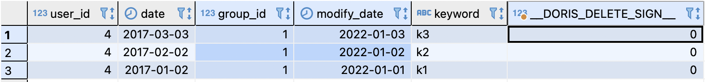
验证分区内 key 唯一性
在分区 p201703 中插入一行 user_id = 4、group_id = 1，keyword = ‘k3-1’
insert into example_db.t_uniq_model_test(user_id,date,group_id,modify_date,keyword) values(4,'2017-03-03',1,'2022-04-15','k3-1');
select * from example_db.t_uniq_model_test order by `date` desc;
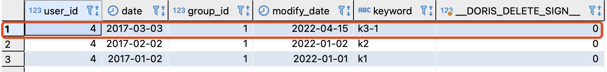
表中还是只有 3 条数据，分区内 key 相同的数据被更新了。
使用 BATCH_DELETE
使用 BATCH_DELETE 来实现全表内 key 唯一性。
相比于直接使用 delete ，BATCH_DELETE 是一个标记删除，实际只有 insert，但是做到了 upsert 的语意。
- 性能上更优；
- “删除时”不会阻塞读取；
insert
into
example_db.t_uniq_model_test (user_id,
date,
group_id,
modify_date,
keyword,
__DORIS_DELETE_SIGN__)
-- 根据 modify_date 找到重复的旧数据
select
t1.*,
1 -- 标记为删除
from
example_db.t_uniq_model_test t1
where
EXISTS (
select
1
from
example_db.t_uniq_model_test t2
WHERE
-- key: user_id + group_id
t1.user_id = t2.user_id
and t1.group_id = t2.group_id
-- 最新数据
and t1.modify_date <t2.modify_date );
SET show_hidden_columns=false;
select * from example_db.t_uniq_model_test order by `date` desc;
SET show_hidden_columns=true;
select * from example_db.t_uniq_model_test order by `date` desc;
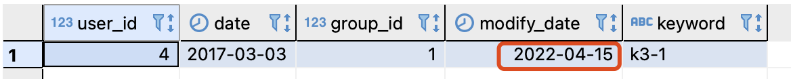

性能测试（todo）
ref
https://doris.apache.org/branch-0.15/zh-CN/getting-started/data-model-rollup.html#uniq-%E6%A8%A1%E5%9E%8B
https://doris.apache.org/branch-0.15/zh-CN/getting-started/data-partition.html#%E6%95%B0%E6%8D%AE%E5%88%92%E5%88%86-2
https://doris.apache.org/branch-0.15/zh-CN/administrator-guide/load-data/batch-delete-manual.html#%E8%AF%AD%E6%B3%95
Siu 的笔记本
怎样写一个技术方案的大纲
By Siu 2022/3/28
前言
首先问题来源于工作上需要将最近做的一些 POC 整理成一个解决方案提供给应用平台。所以从以往的写作经验来看，首先需要能梳理出一个“大纲”，去合理规划整个解决方案的内容架构，同时这个大纲必须带上“技术”、“方案”这两个命题去思考总结。
要思考哪些问题
写给谁
给谁看，读者和受众是要放在第一位去思考的。
首先回答一下几个问题：
为什么要写技术方案：首先我的理解解决方案是对技术、工程、产品、运营的一个体系的阐述说明；它是一个有效的载体，有利于构建方案的人更深层次的理解所做的输出是服务于什么、有利于开发人员去理解技术原理和架构、有利于产品人员去利用解决方案提供的能力实现更好的产品迭代、有利于运营人员去做好系统的维护和升级。
技术方案的内容写给谁的：开发人员、产品经理、架构师，运维等，技术相关的人员是最大的读者。
由此，大纲标题必须有几个鲜明的特征：严谨、准确、简练、措词是经过业界广泛使用的（不要发明概念）。
方案解决了什么问题：这个也是是很重要的，不仅在内容中需要体现，也需要在大纲中体现——比如有一些章节描述背景、业务需求、目标等。
为什么要写 -〉写给谁看 -〉解决了什么问题，思考清楚再去考虑怎么写大纲的内容。
怎么写
写给谁，已经讨论完了，那怎么写？
还是要回到读者，读者最关心《技术方案》有哪些内容？
- 开发：怎么使用，怎么对接，API 接口？访问协议？架构原理？文档？。。。
- 产品：亮点，解决什么问题，哪些能有效提高产品的能力。。。
- 架构师：方案所用的技术架构是否合理，安全、稳定性、扩展。。。
- 运维：有没有友好 dashboard，Grafana 指标如何获取，故障备份，运维文档，自动化部署。。。
- ...
关注和收集“读者”的关注点，作为大纲内容的重要输入参考。
定义好“文章”的层次：技术方案是一个解决方案，会去完整的构建一个系统/框架。所以不能偏离中心——问题是什么&用了什么技术方案解决。
层次定义好能有效指导最终的大纲框架，相当是一个中心主题。
层次确定了，方案名就可以定下来了。
定义好”逻辑“：开篇〉背景〉业务需求〉技术方案〉测试论证〉总结；这是一个举例，重点在于需要需求考虑怎么串联整体的逻辑，每一部分有内在的逻辑，但也要有整体和上下的联系。
Tips
还有哪些需要注意的：
- 不要忘了开篇和总结
- 大纲标题一定要仔细定义
- 可以高屋建瓴，但要注重实践（脚本、代码、测试数据放在合适的位置，索引或附录）
大纲的内容示例
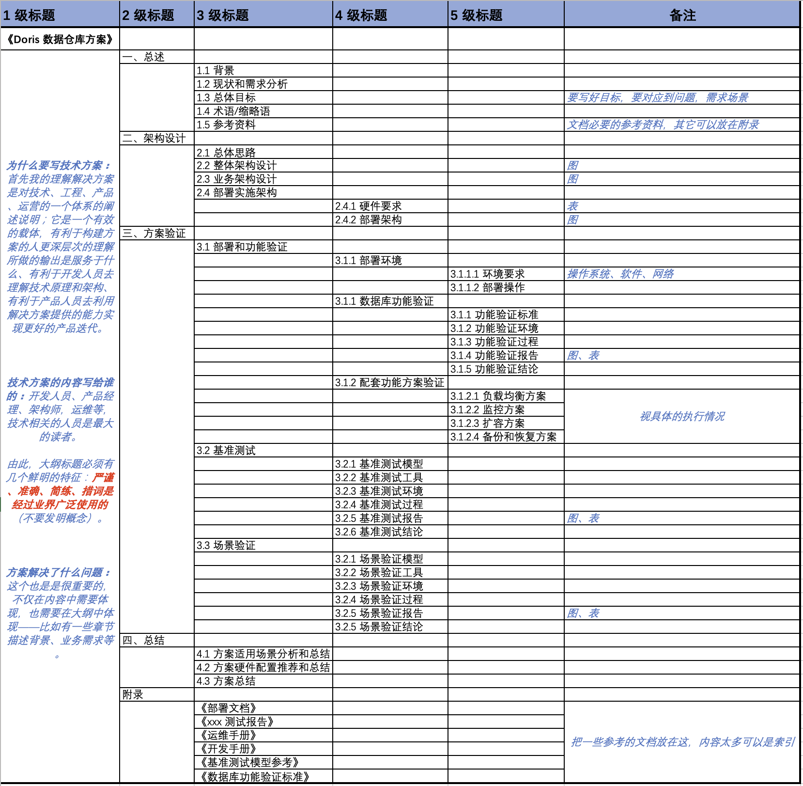
ref
文档编号：
xxx有限公司
内部资料注意保密
文档修订记录：
| 版本号 | 修订日期 | 修订说明 | 修订人 | 审核人 | 批准人 |
|---|---|---|---|---|---|
| 1.0 | 2021/11/12 | 初版 | xxxxxx | ||
XXX 方案
一、总述
1.1 背景
1.2 现状和需求分析
1.3 总体目标
1.4 术语/缩略语
1.5 参考资料
二、架构设计
2.1 总体思路
2.2 整体架构设计
2.3 业务架构设计
2.4 部署实施架构
2.4.1 硬件要求
2.4.2 部署架构
三、方案验证
3.1 部署和功能验证
3.1.1 部署环境
3.1.1.1 环境要求
3.1.1.2 部署操作
3.1.2 数据库功能验证
3.1.2.1 功能验证标准
3.1.2.2 功能验证环境
3.1.2.3 功能验证过程
3.1.2.4 功能验证报告
3.1.2.5 功能验证结论
3.1.3 配套功能方案验证
3.1.3.1 负载均衡方案
3.1.3.2 监控方案
3.1.3.3 扩容方案
3.1.3.4 备份和恢复方案
3.2 基准测试
3.2.1 基准测试模型
3.2.2 基准测试工具
3.2.3 基准测试环境
3.2.4 基准测试过程
3.2.5 基准测试报告
3.2.6 基准测试结论
3.3 场景验证
3.2.1 场景验证模型
3.2.2 场景验证工具
3.2.3 场景验证环境
3.2.4 场景验证过程
3.2.5 场景验证报告
3.2.5 场景验证结论
四、总结
4.1 方案适用场景分析和总结
4.2 方案硬件配置推荐和总结
4.3 方案总结
附录
我的工具清单
By Siu 2021/3/26
最近比较关注个人的 EDC 和日常工作流的优化，这里先分享一下我日常工作中主要的工具；关于工作流部分，再开一个主题去总结一下。
| 大类 | 分类 | 工具 | 备注 |
|---|---|---|---|
| 包管理 | 包管理 | brew | mac 包管理 |
| 包管理 | 包管理 | Cakebrew | brew UI 管理 |
| 终端 | 终端 | iTerm2 | 老牌产品了 |
| 终端 | 终端 | Tabby | 最近在使用这个 |
| 终端 | 终端 | Warp | 这个 Rust 写的，所以最近也关注了一下 |
| 终端 | 命令行提示 | fig | 推荐 |
| 终端 | git 客户端 | git | |
| 终端 | 文件目录展示 | tree | |
| 开发工具 | IDE | Intellij IDEA | 工作主力 IDE，功能齐全、稳定；最佳的效率； |
| 开发工具 | IDE | CLion | 主要用于写 Rust，其实 IDEA 装 Rust 插件也有一致的体验 |
| 开发工具 | IDE | GoLand | 主要用于写 Go |
| 开发工具 | IDE | PyCharm | 主要用于写 Python，使用的不多 |
| 开发工具 | IDE | VSCode | 当作全功能编辑器来使用，也用来写 md |
| 开发工具 | 抓包 | Fiddler | mac 上不推荐，windows 上还是很好用的 |
| 开发工具 | 抓包 | Proxyman | 推荐；比花瓶好多了 |
| 开发工具 | API | Postman | |
| 开发工具 | API | BloomRPC | |
| 开发工具 | API | Evans | 推荐 |
| 开发工具 | 开发常用工具包 | DevToys | |
| 开发工具 | 数据库客户端 | DBeaver | 可以替代 Navicat |
| 开发工具 | 数据库客户端 | Postico | PostgreSQL 客户端 |
| 开发工具 | 数据建模 | CHINER | 推荐；多端开源的产品，建模部分的 数据类型、数据域、数据字典功能还是不错的 |
| 开发工具 | hosts 管理 | iHosts | hosts 管理 |
| 浏览器 | 浏览器 | Vivaldi | 是一个工作站，集成了工作流中的很多场景；推荐 |
| 通信 | 开源社区 | Slack | |
| 通信 | 日常 | 微信 | |
| 通信 | 日常 | 腾讯会议 | |
| 效率 | Gihub 客户端 | Github Desktop | 主要用于管理开源的项目 |
| 效率 | GTD | MacOS 日历 | |
| 效率 | GTD | Itsycal | 推荐；试了很多 GTD 的工具，最后还是回到了学生时代的“谷歌日历”的方式，系统日历 + Itsycal 足够管理达到 GTD |
| 效率 | 分屏 | Rectabgle | 胜在免费，功能足够 |
| 效率 | 粘贴板 | Paste | |
| 效率 | 解压缩 | Keka | |
| 效率 | 系统菜单 | 超级右键 | |
| 效率 | 远程桌面 | RustDesk | 推荐；Rust 写的，功能还是很不错，支持多端 |
| 效率 | 翻墙代理 | MonoProxy | |
| 效率 | 应用切换 | AltTab | 与系统tab 切换的区别是可以预览 |
| 效率 | 系统清理 | CleanMyMac X | 乌克兰一个团队的产品，收费；整体还行 |
| 创作 | 画图 | draw.io | 推荐；几乎所有的设计图都是用 draw.io画的，架构、流程、部署图，UML，时序图等等 |
| 创作 | Markdown Editor | Typora | 1.0 版本的价格也不是很贵，旧版免费的也可以下载 |
| 创作 | 笔记 | MacOS 备忘录 | |
| 创作 | 云笔记 | Github + Markdown | |
| 创作 | 脑图 | Xmind | |
| 创作 | Office | Excel/Word | |
| 创作 | markdown site | mdbook | 适合笔记、电子书；目前我的笔记都是mdbook 构建的 |
| 创作 | markdown site | Docsify | 适合项目或产品的文档，还有 hugo，vuepress 也是同类 |
| 创作 | markdown site | zine | 可以生成杂志的版式 |
| 娱乐 | 音乐 | 网易云音乐 | |
| 娱乐 | 下载 | Motrix | |
| 娱乐 | 视频 | WebTorrent | |
| 阅读 | RSS | NetNewsWire | 信息流产品用了很多，最后还是回到了学生时代的 “Google Reader”；当然 GR 已死，但 RSS 希望是永生的 |
| 阅读 | RSS | RSSHub | 推荐 |
sql 性能测试工具的设计
By Siu 2022/3/17
前言
当前的团队的工作比较多的会在关注和执行 sql 性能相关的测试，对于标准的测试模型，如 TPC 范围内的工具有比较好的实践方式，对于自定义和具体的场景目前团队还没有去总结一个比较好的”工具方案“，这里主要围绕这个问题去做一些分享。
先看看有哪些现有工具？
- Tidb bench ：C ；集成在 TiDB 中，用于 TPC-C/H 的测试，不适用于其它数据库
- BenchMarkSQL 5.0： Java；适用于 TPC-C ，主流的 RDBMS 都支持，Mysql/PostgreSQL/Oracle 等
- Sysbench：C；适用于 TPC-C ，主流的 RDBMS 都支持，Mysql/PostgreSQL/Oracle 等
- mysqlslap：C；用于msyql 的性能测试
- sqlbench：go；支持 PostgreSQL 的性能测试
- 其它的开源的库针对非传统数据库/组件：这些通常是依据标准模型 TPC-H/DS、SSB 等的实现，这部分较复杂，可以到官方和社区去找一些方案和工具（ClickHouse、Flink、Trino）
简单总结：
- 以上这些工具都是比较优秀的，大多是开源的；整体我都使用过，值得去深入了解各自的场景和特点；
- BenchMarkSQL、Sysbench 比较合适标准模型的基准测试（mysqlslap 也比较适合，但不主流）；
- mysqlslap、sqlbench：适用于自定义的 sql 场景的测试；
这些工具的“设计“
"设计”，主要讨论这些工具的内部设计大体是怎么样的，哪些可以借鉴和指导我们去设计/开发我们的自定义 sql 性能测试工具/脚本。
当然这些我总结的”范式“可能不是真正的标准，但是已经经过了具体的借鉴和实践。
编程范式
当然设计会受语言的编程范式影响，受语言特性影响，但这里忽略这部分，不做讨论。
实际实现的时候要考虑这部分。
工具设计的拆解
分析比较了 BenchMarkSQL 5.0、sqlbench、mysqlslap 等的功能和代码，等到如下总结：
- 环境/全局配置：通过 CMD 参数或配置文件加载到程序
- 环境：系统、依赖工具、数据库信息
- 全局：工具运行时的参数，线程数、执行数等
- sql 任务配置：定义 sql 执行的单位
- 其它：主要是功能，造数、执行日志（参数、环境、上下文，IO，网络等）、执行结果/绘图、终端动态展示运行等
用一个命令行描述：
sh myApp --config=./config/env.conf --sql=./sql/* --func xxx
特别说下 BenchMarkSQL TPC-C 测试流程：
- 配置数据库信息、测试的全局信息
- 启动造数据程序：元数据、数据
- 执行测试：实时输出测试指标和日志、归档日志/结果等到测试目录
- 执行绘图程序，输出图表测试结果
- 清理数据
设计一个简单的 sql 性能测试程序
这里以 mysqlslap + shell 去设计一个 sql 性能测试脚本。
比较好的路线是基于一些标准库用某个语言去实现，这样可定制的功能比较好控制。
选型
- 语言 shell：读写文件、option、函数
- 库/工具：mysqlslap
设计
.
├── config
│ ├── conf # 主配置：环境、全局
│ └── jobs # sql 配置
├── output # 测试输出
│ ├── test-1 # 测试1输出
│ └── test-2 # 测试2输出
└── run.sh # 入口：加载配置/日志、归档测试结果、执行：获取jobs/执行mysqlslap、option（暂未实现）
配置部分：

conf 文件：
任何格式，按照需求去设计
# 一些全局参数
db_schema='ssb'
db_user='root'
db_port='9030'
...
jobs/ :
任何格式，按照需求去设计，JSON、YML、TOML 都行
# test 1: build-in functions
test_name='build-in'
query_sql="select length(c_address) from ssb.customer;"
pre_query="set global enable_vectorized_engine=true;set global batch_size=1024;"
...
实现
逻辑描述：
启动 => 加载配置/optioin传入 => 加载jobs => LOOP：构建job > 执行job > 记录job日志&结果 => 归档&展示测试结果
待实现：从 option 传入配置
运行
[root@test-fe-1 test]# sh run.sh
=====================================================================================================================================
test-fe-1 2022-03-16 21:29:17.249 执行测试：build-in
test-fe-1 2022-03-16 21:29:17.256 执行预处理：set global enable_vectorized_engine=true;set global batch_size=1024;
test-fe-1 2022-03-16 21:29:17.264 执行测试 SQL：select length(c_address) from ssb.customer;
test-fe-1 2022-03-16 21:29:25.877 build-in 执行完成： build-in,mixed,1.698,1.298,1.872,10,1
=====================================================================================================================================
test-fe-1 2022-03-16 21:29:25.883 执行测试：n-udf-f
test-fe-1 2022-03-16 21:29:25.890 执行预处理：set global enable_vectorized_engine=false;
test-fe-1 2022-03-16 21:29:25.895 执行测试 SQL：select ssb.get_string_length(c_address) from ssb.customer;
test-fe-1 2022-03-16 21:29:34.986 n-udf-f 执行完成： n-udf-f,mixed,1.798,1.740,1.879,10,1
=====================================================================================================================================
test-fe-1 2022-03-16 21:29:34.995 执行测试：rudf2-t-1024
test-fe-1 2022-03-16 21:29:35.001 执行预处理：set global enable_vectorized_engine=true;set global batch_size=1024;
test-fe-1 2022-03-16 21:29:35.008 执行测试 SQL：select ssb.str_length(c_address) from ssb.customer;
test-fe-1 2022-03-16 21:29:44.929 rudf2-t-1024 执行完成： rudf2-t-1024,mixed,1.961,1.867,2.058,10,1
=====================================================================================================================================
test-fe-1 2022-03-16 21:29:44.936 执行测试：rudf3-t-2048
test-fe-1 2022-03-16 21:29:44.942 执行预处理：set global enable_vectorized_engine=true;set global batch_size=2048;
test-fe-1 2022-03-16 21:29:44.948 执行测试 SQL：select ssb.str_length(c_address) from ssb.customer;
test-fe-1 2022-03-16 21:29:53.113 rudf3-t-2048 执行完成： rudf3-t-2048,mixed,1.612,1.494,1.782,10,1
=====================================================================================================================================
test-fe-1 2022-03-16 21:29:53.119 执行测试：rudf4-t-4096
test-fe-1 2022-03-16 21:29:53.124 执行预处理：set global enable_vectorized_engine=true;set global batch_size=4096;
test-fe-1 2022-03-16 21:29:53.129 执行测试 SQL：select ssb.str_length(c_address) from ssb.customer;
test-fe-1 2022-03-16 21:30:00.478 rudf4-t-4096 执行完成： rudf4-t-4096,mixed,1.447,1.396,1.518,10,1
=====================================================================================================================================
test-fe-1 2022-03-16 21:30:00.485 执行测试：rudf2-5-8192
test-fe-1 2022-03-16 21:30:00.492 执行预处理：set global enable_vectorized_engine=true;set global batch_size=8192;
test-fe-1 2022-03-16 21:30:00.497 执行测试 SQL：select ssb.str_length(c_address) from ssb.customer;
test-fe-1 2022-03-16 21:30:07.553 rudf2-5-8192 执行完成： rudf2-5-8192,mixed,1.388,1.352,1.488,10,1
=====================================================================================================================================
test-fe-1 2022-03-16 21:30:07.561 执行测试：rudf6-t-16384
test-fe-1 2022-03-16 21:30:07.567 执行预处理：set global enable_vectorized_engine=true;set global batch_size=16384;
test-fe-1 2022-03-16 21:30:07.574 执行测试 SQL：select ssb.str_length(c_address) from ssb.customer;
test-fe-1 2022-03-16 21:30:11.685 rudf6-t-16384 执行完成： rudf6-t-16384
##########################################################################
全局参数：
client_num=10
queries_num=10
测试结果： test-20220316212917243/result.csv
test_name mode avg min max client_num queries_per_client
build-in mixed 1.698 1.298 1.872 10 1
n-udf-f mixed 1.798 1.740 1.879 10 1
rudf2-5-8192 mixed 1.388 1.352 1.488 10 1
rudf2-t-1024 mixed 1.961 1.867 2.058 10 1
rudf3-t-2048 mixed 1.612 1.494 1.782 10 1
rudf4-t-4096 mixed 1.447 1.396 1.518 10 1
rudf6-t-16384
#########################################################################
ref
附录
实现的脚本
#!/bin/bash
#
# @CreationTime
# 2022/3/15 下午16:45:20
# @Function
#
# @Usage
# @author Siu
CURRENT_PATH=$(readlink -f "$(dirname "$0")")
## region 全局参数：当有配置文件覆盖时这里的参数无效
db_ip=$(hostname -I | awk '{gsub(/^\s+|\s+$/, "");print}')
# 总查询的次数 = min(client_queries_limit,client_num * run_times)
client_num=10
run_times=5
# 官方文档说明：Limit each client to approximately this number of queries，实际限制每个 client，而是限制总查询数
client_queries_limit=10
db_schema='ssb'
db_user='root'
db_port='9030'
# 配置文件
conf_file="${CURRENT_PATH}"/config/conf
# jobs
jobs_path="${CURRENT_PATH}"/config/jobs
cmd_input=""
## endregion
## 记录日志
logFmt() {
date_str=$(date "+%Y-%m-%d %H:%M:%S.%3N")
echo "$(hostname -s)" "${date_str}" "$1"
# shellcheck disable=SC2086
echo "$(hostname -s)" "${date_str}" $1 >>"${archive_dir}"/run.log
}
log() {
echo "$1"
# shellcheck disable=SC2086
echo $1 >>"${archive_dir}"/run.log
}
runMss() {
mysqlslap -u ${db_user} -P ${db_port} -h ${db_ip} \
--concurrency=${client_num} --iterations=${run_times} --number-of-queries=${client_queries_limit} --create-schema=${db_schema} \
--query=./"${archive_dir}"/"$1".sql \
--pre-query=./"${archive_dir}"/p_"$1".sql \
--csv=./"${archive_dir}"/"$1".csv
tmp=$(cat ./"${archive_dir}"/"$1".csv)
tmp1=$1${tmp}
echo "$tmp1" >./"${archive_dir}"/"$1".csv
res=$(cat ./"${archive_dir}"/"$1".csv)
}
runJob() {
test_name=$1
query_sql=$2
pre_query=$3
echo "${query_sql}" >./"${archive_dir}"/"${test_name}".sql
echo "${pre_query}" >./"${archive_dir}"/p_"${test_name}".sql
log "====================================================================================================================================="
logFmt "执行测试：${test_name} "
logFmt "执行预处理：${pre_query}"
logFmt "执行测试 SQL：${query_sql}"
runMss "${test_name}"
logFmt "$1 执行完成： ${res}"
}
runJobs() {
if [ ! -d "${jobs_path}" ]; then
logFmt "jobs 路径不存在：$jobs_path"
help
exit 1
else
for file in "${jobs_path}"/*; do
if test -f $file; then
#log "加载：$file"
# shellcheck disable=SC1090
. "$file"
test_name=$(basename "$file")
runJob "${test_name}" "${query_sql}" "${pre_query}"
fi
if test -d "$file"; then
logFmt "dir:$file"
fi
done
fi
}
archiveRes() {
# 归档测试结果
echo 'test_name,mode,avg,min,max,client_num,queries_per_client' >"${archive_dir}"/0.csv
cat "${archive_dir}"/*.csv >"${archive_dir}"/result.csv
rm -rf "${archive_dir}"/0.csv
log "##########################################################################"
log "测试结果： ${archive_dir}/result.csv "
# shellcheck disable=SC2002
resFmt=$(cat "${archive_dir}"/result.csv | column -t -s,)
log "${resFmt}"
log "#########################################################################"
}
main() {
log "@@@@@@@@@@@@@@@@@@@@@@@@@@@@@@@ sql性能测试工具 @@@@@@@@@@@@@@@@@@@@@@@@@@@@@@@@@@"
logFmt "Options 参数：${cmd_input}"
loadConf
showArgs
date_str=$(date "+%Y%m%d%H%M%S%3N")
archive_dir=./output/test-"${date_str}"
# 创建归档目录
mkdir -p "${archive_dir}"
runJobs
archiveRes
}
showInfo() {
echo """
================================================
# sql 性能测试工具 #
# 版本： 1.0.0 #
# 作者： Siu #
# Support By： mysqlslap #
================================================
"""
help
}
loadConf() {
# shellcheck source=src/
# 加载配置全局文件
if [ ! -f "${conf_file}" ]; then
logFmt "配置文件不存在将使用默认配置或命令行输入参数:${conf_file}"
else
. "${conf_file}"
# shellcheck disable=SC2027
logFmt "加载配置文件： ${conf_file}"
fi
}
showArgs() {
log "###############################################################################"
log "测试参数："
log "db_ip=${db_ip}"
log "db_port=${db_port}"
log "db_schema=${db_schema}"
log "db_user=${db_user}"
log "client_num=${client_num}"
log "queries_limit=${client_queries_limit}"
log "###############################################################################"
}
help() {
echo """
Usage: ./run.sh -f ./myconfig/conf.file
./run.sh -j ./jobs
./run.sh -h 192.168.1.1
./run.sh -p 9001
./run.sh -u admin
./run.sh -P P@ssw0rd
Options:
-f 配置文件路径，默认：./config/conf
-j sql 任务路径，默认：./config/jobs
-H 数据库IP，默认：本机 IP
-p 数据库端口，默认：9030
-s 数据库Schema，默认：ssb
-u 数据库用户，默认：root
-P 数据库密码，默认：空（当前未加入Option）
-c 测试并发数，默认：10
-q 总查询次数，默认：10
-h 帮助信息
-v 工具版本信息
"""
}
#echo original parameters=[$@]
# https://www.jianshu.com/p/6393259f0a13
#-o或--options选项后面是可接受的短选项，如ab:c::，表示可接受的短选项为-a -b -c，
#其中-a选项不接参数，-b选项后必须接参数，-c选项的参数为可选的
#-l或--long选项后面是可接受的长选项，用逗号分开，冒号的意义同短选项。
#-n选项后接选项解析错误时提示的脚本名字
#ARGS=$(getopt -o ab:c:: --long along,blong:,clong:: -n "$0" -- "$@")
ARGS=$(getopt -o vhf:j:H:p:u:c:q: -n "$0" -- "$@")
if [ $? != 0 ]; then
logFmt "参数错误，退出..."
help
exit 1
fi
#echo ARGS=[$ARGS]
#将规范化后的命令行参数分配至位置参数（$1,$2,...)
eval set -- "${ARGS}"
cmd_input=$(echo formatted parameters=[$@])
while true; do
case "$1" in
-v)
showInfo
exit 0
shift
;;
-h)
help
exit 0
shift
;;
-f)
conf_file=$2
shift 2
;;
-j)
jobs_path=$2
shift 2
;;
-H)
db_ip=$2
shift 2
;;
-p)
db_port=$2
shift 2
;;
-s)
db_schema=$2
shift 2
;;
-u)
db_user=$2
shift 2
;;
-c)
client_num=$2
shift 2
;;
-q)
#echo "option q:$2"
client_queries_limit=$2
shift 2
;;
--)
main
shift
break
;;
*)
help
exit 1
;;
esac
done
Doris Remote UDF 的开发和测试
By Siu 2021/3/15
Remote UDF 介绍
以下参考官方的文档：
Remote UDF Service 支持通过 RPC 的方式访问用户提供的 UDF Service，以实现用户自定义函数的执行。相比于 Native 的 UDF 实现，Remote UDF Service 有如下优势和限制：
优势
- 跨语言：可以用 Protobuf 支持的各类语言编写 UDF Service。
- 安全：UDF 执行失败或崩溃，仅会影响 UDF Service 自身，而不会导致 Doris 进程崩溃。
- 灵活：UDF Service 中可以调用任意其他服务或程序库类，以满足更多样的业务需求。
使用限制
- 性能：相比于 Native UDF，UDF Service 会带来额外的网络开销，因此性能会远低于 Native UDF。同时，UDF Service 自身的实现也会影响函数的执行效率，用户需要自行处理高并发、线程安全等问题。
- 单行模式和批处理模式：Doris 原先的的基于行存的查询执行框架会对每一行数据执行一次 UDF RPC 调用，因此执行效率非常差，而在新的向量化执行框架下，会对每一批数据（默认2048行）执行一次 UDF RPC 调用，因此性能有明显提升。实际测试中，基于向量化和批处理方式的 Remote UDF 性能和基于行存的 Native UDF 性能相当，可供参考
所以， Doris Remote UDF 开发，其实就是开发一个 RPC 服务，以 RPC 访问的方式提供 UDF 服务。
Remote UDF 开发
主要是 RPC Server 部分的开发。
设计

开发（coding）
编译 proto
需要安装 protoc 环境
从官方 proto file进行编译，当前已经编译放在 libs/doris-rudf-grpclib.jar
代码结构
.
├── libs
│ └── doris-rudf-grpclib.jar # proto 编译的包，作为 local lib
├── proto # 原始 proto 文件
│ ├── function_service.proto
│ └── types.proto
├── src
│ └── main
│ ├── java
│ │ ├── com
│ │ │ └── siu
│ │ │ └── udf
│ │ │ └── SubFunction.java # 实现 IFunction，会以 SPI 的方式注册到 Functions
│ │ └── org
│ │ └── apache
│ │ └── doris
│ │ └── udf
│ │ ├── Main.java # 入口
│ │ ├── func
│ │ │ ├── Functions.java # 单例，以SPI 方式加载 UDF
│ │ │ └── IFunction.java # 函数接口定义，需要实现 call(),check(),getName()
│ │ └── server
│ │ ├── FunctionServiceImpl.java # Doris Remote UDF 定义的接口，这里需要实现 checkFn(), callFn(),handShake()
│ │ └── RpcServer.java
│ └── resources
│ └── META-INF
│ └── services
│ └── org.apache.doris.udf.func.IFunction # SPI 定义文件
└── target # target code
编译和运行
# 编译
mvn package
# 运行
java -jar jrudf-jar-with-dependencies.jar 9000
9000 是默认端口，可以不传
调试（debug）
推荐远程调试，在 Remote UDF 场景中远程调试是最有效的，因为整体上还要依赖一个 Doris 的调试环境，所以远程调试的方式是一个全流程的验证。如果用支持grpc proto file 的工具调试只有 rpc server 部分的调试，不能完整的测试功能。
proto file 调试
- Postman ：最新版本支持 GRPC，可以通过界面去调试比较友好
- BloomRPC ：很适合 GRPC 的界面调试工具
- Evans ：一个 RPC 命令行调试工具
Swagger 调试
-
使用 grpc-swagger 这个项目:
java -jar grpc-swagger-web/target/grpc-swagger.jar --server.port=8888 -
在 RPC Server 中开启反射模式：
server = ServerBuilder.forPort(port) .addService(... some server) .addService(ProtoReflectionService.newInstance()) // 反射模式，可以把这块代码用 debug 控制 .build() .start(); -
打开 Swagger

IDEA 远程调试
远程服务器上启动服务
java -agentlib:jdwp=transport=dt_socket,server=y,suspend=n,address=[ip]:5005 -jar jrudf-jar-with-dependencies.jar
# 后台运行
nohup java -agentlib:jdwp=transport=dt_socket,server=y,suspend=n,address=[ip]:5005 -jar jrudf-jar-with-dependencies.jar >jrudf.log 2>&1 &
本地 IDEA 添加 Remote 配置:
Edit Configurtions-> Add New Configrution->Remote JVM Debug

Remote UDF 测试
由于当前版本不支持 remote UDF ，所以采用主干分支的编译版本，编译方式参考附录中的文档《编译 Doris》。
功能测试
在 Doris 上创建 UDF
目前暂不支持 UDAF 和 UDTF
CREATE FUNCTION
name ([,...])
[RETURNS] rettype
PROPERTIES (["key"="value"][,...])
说明：
PROPERTIES中symbol表示的是 rpc 调用传递的方法名，这个参数是必须设定的。
PROPERTIES中object_file表示的 rpc 服务地址，目前支持单个地址和 brpc 兼容格式的集群地址，集群连接方式 参考 格式说明 (opens new window)。
PROPERTIES中type表示的 UDF 调用类型，默认为 Native，使用 Rpc UDF时传 RPC。
name: 一个function是要归属于某个DB的，name的形式为dbName.funcName。当dbName没有明确指定的时候，就是使用当前session所在的db作为dbName。
注：特别说明，PROPERTIES.symbol 和 name 强制一致，发现在 set enable_vectorized_engine=true 调用传的函数名是 name，false 时传 symbol
示例：
CREATE FUNCTION rpc_add(INT, INT) RETURNS INT PROPERTIES (
"SYMBOL"="add_int",
"OBJECT_FILE"="127.0.0.1:9000",
"TYPE"="RPC"
);
使用 UDF
用户使用 UDF 必须拥有对应数据库的 SELECT 权限。
UDF 的使用与普通的函数方式一致，唯一的区别在于，内置函数的作用域是全局的，而 UDF 的作用域是 DB内部。当链接 session 位于数据内部时，直接使用 UDF 名字会在当前DB内部查找对应的 UDF。否则用户需要显示的指定 UDF 的数据库名字，例如 dbName.funcName。
删除 UDF
当你不再需要 UDF 函数时，你可以通过下述命令来删除一个 UDF 函数, 可以参考 DROP FUNCTION
注：测试结论一并在性能测试部分说明
性能测试
测试模型
说明
Native UDF 在性能上有天然的优势，所以比较性能时，需要开启 Doris 的向量化引擎才有比较的意义，这里只是简单的设计几个对照组，每组执行10次查询，分别为：
- Build-in Function（
lenght()）- Native UDF
- Remote UDF 1 （enable_vectorized_engine = false） 这一组测试无法完成
- Remote UDF 2（enable_vectorized_engine = true，batch_size = 1024）
- Remote UDF 3（enable_vectorized_engine = true，batch_size = 2048）
- Remote UDF 4（enable_vectorized_engine = true，batch_size = 4096）
- Remote UDF 5（enable_vectorized_engine = true，batch_size = 8192）
函数逻辑：UDF 的实现逻辑 str.length()，内置函数选取
length()进行比较测试工具：mysqlslqp
测试数据：使用 Doris SSB 中的 Customer 表，150 万
测试环境：3 be 32G/8C，RPC Server JVM 默认
Doris 版本： branch master latest commit
f4663ad Compiled from the official docker image
测试结果
单节点的 rpc server 下得出如下测试数据：
##########################################################################
全局参数：
client_num=10
queries_num=10
测试结果：
test_name mode avg min max client_num queries_per_client
build-in mixed 1.784 1.669 1.856 10 1
n-udf-f mixed 1.865 1.791 1.957 10 1
r-udf-2-t-1024 mixed 3.609 3.388 3.787 10 1
r-udf-3-t-2048 mixed 3.032 2.748 3.775 10 1
r-udf-4-t-4096 mixed 2.506 2.347 2.942 10 1
r-udf-5-t-8192 mixed 2.178 2.059 2.374 10 1
r-udf-6-t-16384 mixed 1.971 1.848 2.271 10 1
#########################################################################
在 3 个节点的 rpc server 下得出如下测试数据：
##########################################################################
全局参数：
client_num=10
queries_num=10
测试结果：
test_name mode avg min max client_num queries_per_client
build-in mixed 1.683 1.252 1.923 10 1
n-udf-f mixed 1.797 1.694 1.912 10 1
r-udf-2-t-1024 mixed 2.384 1.882 3.388 10 1
r-udf-3-t-2048 mixed 1.688 1.479 1.886 10 1
r-udf-4-t-4096 mixed 1.455 1.374 1.615 10 1
r-udf-5-t-8192 mixed 1.358 1.272 1.436 10 1
r-udf-6-t-16384 mixed 1.329 1.265 1.474 10 1
#########################################################################
测试结论
- Native UDF 与内置函数的性能基本一致
- 在非向量化引擎的环境下（enable_vectorized_engine = false），Remote UDF 性能极差
- 在向量化引擎的环境下（enable_vectorized_engine = true），Native UDF 无法使用
- 推荐使用配置 enable_vectorized_engine = true，batch_size = 4096 （实际做了几十次验证，这个配置是最稳定的）
- 在 4 推荐配置下，单节点 rpc server 时，Remote UDF 与 Native UDF 性能差距大概有 35%
- 在 4 推荐配置下，3 节点 rpc server 时，Remote UDF 与 Native UDF 性能领先大概有 36%（此时 Doris 没有明显瓶颈，目前没有准确的数据去描述节点数量对于Remote UDF 性能的线性影响有多大，不排除在更高规格下 Native UDF 可能表现更佳）
- 这个结论符合官方的描述
基于向量化和批处理方式的 Remote UDF 性能和基于行存的 Native UDF 性能相当
- 这个结论符合官方的描述
- 不排除处理复杂的自定义函数时 Remote UDF 性能表现会下降，特别是有大量数据要通过网络传输时，推荐配置也会随场景不同有所不同
总结
从整体方案上做一下总结和对比：
| Native UDF | Remote UDF | |
|---|---|---|
| 用户 | 使用方式上与内置函数一致的体验 | 使用方式上与内置函数一致的体验 |
| 社区 | 当前版本支持 | 预计下一个版本支持；这个对稳定性、安全也有较大的影响，当前功能验证是基于主干版本编译的 |
| 功能 | 满足 | 满足（当前版本不支持） |
| 稳定性 | 需要代码来保证 | 需要代码来保证（当前版本不支持，编译版本可能会引入不稳定因素） |
| 性能 | 多数情况下会好于 Remote UDF | 在向量化和批处理模式下性能与 Native 相当；具备一定的伸缩能力 |
| 安全 | 不可靠的程序，会直接影响 Doris | 相对更安全；特别是使用 VM 的语言 |
| 开发和维护 | 相对成本高： 1、C 系技术栈能力当前团队储备不足，长期来看无投入计划 2、C 系语言的程序编写、debug、优化、review 等心智成本较高 3、在处理复杂的自定义逻辑时，2 的挑战会放大（本身编码的经验；类库的缺乏， Java ，Python 对数据处理相对友好） | 相对成本低： 跨语言，类库多；一次性的投入，定义好开发范式，可以长期收益 |
在不考虑团队技能情况下，选择 Native UDF 的方案是比较合适的，功能上满足，性能相对更稳定；Remote UDF 现阶段社区的版本不支持，是一个比较大的问题，编译是一个，主要还是非 release 版本的稳定性和安全是一个比较大的挑战。
所以所有方案到最后都不是讨论好不好的问题，而是合不合适的问题。
综合考虑功能、稳定性是我们迫切的需求，性能上都有基本同等级别的实现方式：现阶段使用 Native UDF 去支持需求；长期来看，待社区版本稳定支持 Remote UDF 时，定义好开发范式，用当前团队熟悉的技术栈来开发 UDF RPC Server 来迁移当前的需求。
附录
编译 Doris
由于当前版本（0.15）不支持 Remote UDF，所以编译 Doris 最新版本进行功能验证
安装 Docker 环境 （略）
推荐使用 Docker 集成的编译环境去进行 Doris 编译
下载编译集成环境镜像
docker pull apache/incubator-doris:build-env-ldb-toolchain-latest
下载 Doris 源码
mkdir -p /opt/doris && cd /opt/doris
git clone https://github.com/apache/incubator-doris.git
运行编译集成环境
docker run -it -v /root/.m2:/root/.m2 -v /opt/doris/incubator-doris/:/root/incubator-doris/ apache/incubator-doris:build-env-ldb-toolchain-latest
编译
cd /root/incubator-doris/
sh build.sh --clean --be --fe --ui
打包构建
tar zcvf apache-doris-latest-454b45b-incubating.tar.gz ./output
454b45b 是源码的 commit hash id
问题
- proto 编译要修改官方的 pom文件中
protoc环境的位置
<protocCommand>${doris.thirdparty}/installed/bin/protoc</protocComm> <!-- 修改成 protoc 的安装位置 -->
-
Doris 源码编译时 gcc 找不到，版本不对
需要 which 一下看看 gcc 的位置，在
env.sh中设置一下${DORIS_GCC_HOME}
ref


单元测试规范
一.可衡量：单测的编写应该是可以用具体的指标衡量的
1、单测通过率要求100%，行覆盖率要求50%。
解释：通过率100%没啥好多说的，如果单测跑不通过，那不是单测有问题就是代码逻辑有问题。覆盖率的话可以根据具体的工程进行微调，建议不应小于40%，越底层的代码覆盖率应该越高，越新的代码覆盖率也应该越高。
2、老代码有逻辑变更时，单测也应该做相应的变更。
解释：这点的目的也是为了保证单测通过率100%。同时，这部分功能应该也属于改次功能的测试回归范围内。
3、新业务提测前，必须保证老单测的通过率也保持100%。
解释：这点的目的是为了防止回溯问题的出现。
二.独立性：单测应该是独立且相互隔离的
4、一个单测只测试一个方法。
解释：保证了单测的独立性。当单测出错的时候也能够明确知道是哪个方法出了问题。但这并不是说一个方法只对应一个单测，因为为了覆盖方法内的不同分支，我们可以为一个方法创建多个单测。
5、单测不应该依赖于别的单测。
解释：保证了单测的独立性。每个单测应该都能独立运行。不应该有A单测跑完才能跑B单测的情况。
6、单测如果涉及到数据变更，必须进行回滚。
解释：保证了单测的隔离性。如果单测运行后在数据库中产生了数据，那这些脏数据可能干扰测试同学的测试工作，且也可能影响别的单测的运行结果。
7、单测应该测试目标方法本身的逻辑，对于被测试的方法内部调用的非私有方法应进行mock，推荐使用Mockito进行mock。
解释：目标方法存在内部调用情况，进行mock可以屏蔽其他方法对目标方法的影响。这样保证了单测的独立性，一个单测只保证它测试的目标方法的逻辑正确性，而不应该受其内部调用方法的逻辑的影响，这部分应该是这些内部调用的方法对应的单测的责任。但是真实情况中，这一点是最难被严格执行，因为这样做就意味着需要对所有的方法都设计单测，比如a调用b调用c的情况，需要至少设计三个单测，而不能只对a设计单测来覆盖整个调用链。不过，这不正是单测的含义吗？对最小的逻辑单元——方法进行测试，如果对于一个调用链进行测试，更像是集成测试的范畴了。而且如果不这么做，我们就会违反上面的第4条“一个单测只测试一个方法”。只有一种情况例外，方法内部调用的是私有方法，这样的话是可以通过调用方的单测一并测试的，见下面的第13条“私有方法通过调用类的单测进行测试”。我们可以试想一种情况，当一个项目由很多人协同开发时，我怎么才能放心使用另一个人开发的方法？至少得提供单测吧，如果这个方法的测试是在其调用方的单测中的，那就没有直接对应的单测了，这样也就无法保证该方法是否被妥当测试过了。
三.规范性：单测的编写需要符合一定规范
8、对实现类进行测试而非接口。
解释：面向接口编程，面向实现测试。
9、单测应该是无状态的。
解释：即单测应该可以重复执行，且无论跑几次都应该保证通过率。比如有些方法会对当前时间进行判断，对于这类方法的单测也需根据当前时间的不同而进行不同的测试。
10、覆盖范围应包括所有提供了逻辑的类：service层、manager层、自定义mapper等，甚至还有部分提供业务逻辑的controller层代码。
解释：只要是提供了逻辑的就应该测试，不过个人并不建议在controller层提供业务逻辑，具体原因参考《设计之道－controller层的设计》。
11、覆盖范围不应包括自动生成的类：如MyBatis Generator生成的Mapper类、Example类，不应包括各种POJO（DO，BO，DTO，VO...），也不应包括无业务逻辑的controller类。
解释：自动生成的类有啥好测的？POJO的getter/setter有啥好测的？没有提供业务逻辑的controller类有啥好测的？这些被排除的类应该在覆盖率统计中被剔除。
12、私有方法通过调用类的单测进行测试。
解释：因为私有方法在测试类内没法直接调用，除非使用反射。
13、单测要覆盖到正常分支和异常分支，使用专门的异常测试属性junit（expected）/testng（expectedExceptions）。禁止使用try-catch。
解释：很多同学的单测覆盖率不达标，就是因为只覆盖了正常的分支而遗漏的异常的分支。异常的测试和正常的一样重要，也就是该报错的时候就应该报错。有些同学为了达到单测的覆盖率和通过率的指标，在单测中使用try-catch，这也是不允许的，应该使用专门的异常测试注解。
14、如果被测试的方法的逻辑体现在方法返回或成员变量中，则使用Assert断言验证该返回或成员变量。
解释：如果一个方法的内部组装了一个返回值，或变更了一个成员变量，那么应该使用Assert来验证该返回值或成员变量是否符合预期。
比如下面的三个方法，前两个的逻辑都是体现在返回值上，后一个的逻辑体现在成员变量中。
/**
* 逻辑体现在返回值
*
* @return
*/
public String displayName() {
String name = "HangzhouZoo";
return "Zhejiang " + name;
}
/**
* 逻辑体现在返回值
*
* @return
*/
public String luxuryShow() {
String show = dog.run();
return "luxury!! " + show;
}
/**
* 逻辑体现在成员变量
*/
public void close() {
this.open = false;
}
那么我们就可以使用Assert断言来测试这些逻辑：
//逻辑在方法返回体现
@Test
public void displayName() {
Assert.assertEquals("Zhejiang HangzhouZoo", hangzhouZoo.displayName());
}
//逻辑在方法返回体现
@Test
public void luxuryShow() {
when(dog.run()).thenReturn("dog show");
Assert.assertEquals("luxury!! dog show", hangzhouZoo.luxuryShow());
}
//逻辑在成员变量中体现
@Test
public void close() {
Assert.assertTrue(hangzhouZoo.isOpen());
hangzhouZoo.close();
Assert.assertFalse(hangzhouZoo.isOpen());
}
16、如果被测试的方法的逻辑体现在内部的方法调用行为本身，则使用Mockito的verify验证内部方法调用的情况。
解释：有些方法的内部根据不同的条件会调用不同的方法，则应该验证该方法的调用是否符合预期。Mockito的verify可以验证被mock的方法是否调用了，甚至可以验证方法调用的次数。
比如下面这个方法有三分条件分支，分支一抛出异常，分支二调用内部方法，分支三组装返回值。
/**
* 逻辑体现在异常、方法调用行为和返回值
*
*/
@Override
public String show(Animal animal) throws ZooException {
if (animal instanceof Tiger) {
throw new ZooException("tiger is not allowed");
} else if (animal instanceof Dog) {
return animal.run();
} else {
return "only dogs here";
}
}
其中分支二的逻辑就体现在方法调用的行为上，我们可以通过verify来验证方法是否如预期一样调用，也可使用times验证方法调用的次数。
//被测试的方法的逻辑体现在内部方法的调用行为本身
@Test
public void show() throws Exception {
when(dog.run()).thenReturn("dog run");
hangzhouZoo.show(dog);
//验证方法被调用过了
verify(dog).run();
//也可以通过times参数来验证方法具体被调用的次数
verify(dog, times(1)).run();
//验证另一个分支，逻辑体现在返回值
Assert.assertEquals("only dogs here", hangzhouZoo.show(new Cat()));
}
当然，还记得第13条“异常分支也需要测试么”，我们还需要写一个单测来覆盖异常分支：
//测试异常分支
@Test(expected = ZooException.class)
public void showForEx() throws Exception {
hangzhouZoo.show(new Tiger());
}
- 如果被测试的方法的逻辑体现在内部方法调用的参数中，即方法的逻辑用于构建内部调用方法的参数，则使用Mockito的verify验证内部方法调用的参数。
解释：有些方法的内部会组装一个对象，然后将这个对象作为参数传入另一个内部方法。使用Mockito的verify可以验证被mock的方法被调用的参数。如果是简单类型，可以直接验证，如果是复杂类，则需要扩展ArgumentMatcher类来做验证。
下面这个方法的逻辑体现在内部调用方法的参数构造上：
/**
* 逻辑体现在参数构造-基本类
*
* @param times
*/
public void bark(int times) {
int actualTimes = times * 10;
dog.bark(actualTimes);
}
由于参数类型是基本类，所以我们可以直接用verify来验证：
//逻辑在参数体现-简单类型
@Test
public void bark() {
doNothing().when(dog).bark(anyInt());
hangzhouZoo.bark(3);
verify(dog).bark(30);
//与上面等价
verify(dog).bark(eq(30));
}
不过如果像下面这样的参数是复杂类的，就需要扩展一下：
/**
* 逻辑体现在参数构造-复杂类
*
* @param
* @return
*/
public String feedVegetable() {
Food tomato = Food.builder().name("tomato").build();
return dog.eat(tomato);
}
自定义参数匹配器：
/**
* @Author: Sawyer
* @Description: 自定义参数匹配规则
* @Date: Created in 2:02 PM 2019/10/15
*/
public class ObjectMatcher<T> extends ArgumentMatcher<T> {
private Object expected;
private Function<T, Object> getProperty;
public ObjectMatcher(Object expected, Function<T, Object> getProperty) {
this.expected = expected;
this.getProperty = getProperty;
}
@SuppressWarnings("unchecked")
@Override
public boolean matches(Object actual) {
return getProperty.apply((T) actual).equals(expected);
}
}
测试的时候使用argThat校验方法参数：
//逻辑在参数体现-复杂类
@Test
public void feedVegetable() {
when(dog.eat(any())).thenReturn("dog eat");
hangzhouZoo.feedVegetable();
//验证参数
verify(dog).eat(argThat(new ObjectMatcher<>("tomato", Food::getName)));
}
17、单测应在相应的目标方法开发完后立即编写，如能在开发前就开始编写则更好（TDD）。
解释：这点可能会违背很多开发同学的认知，怎么可能先写单测再写代码呢？实际上，如果稍微了解下测试驱动开发（Test-Driven Development），就会发现这并非异想天开，反倒是顺理成章的事。我认为有两种场景下单测的习惯是很容易能够推动的，第一种是团队里没有测试人员，代码质量完全由开放人员把控；而第二种就是软件开发流程使用的是TDD的方式，这样天然的就保证了单测必须存在。
原文：设计之道－单元测试规范 - 简书 (jianshu.com)
Flyway 使用规范
By Siu 2021/02/07
Flyway是一款数据库迁移（migration）工具。在部署应用的时候，自动执行数据库脚本，实现数据库自动化。Flyway 支持 SQL 和 Java 两种类型的脚本，可以将脚本打包到应用程序中，在应用程序启动时，由 Flyway 来管理这些脚本的执行，这些脚本被 Flyway 称之为 migration。
就目前而言，我们部署应用的流程大概是这样的：
- 开发人员将应用程序打包、按版本整理数据库升级脚本；
- DBA 根据数据库升级脚本检查、备份、执行，以完成数据库升级；
- 运维人员拿到应用部署包，备份、替换，以完成应用程序升级；
引入Flyway之后的应用部署流程：
- 开发人员将应用程序打包（包括数据库脚本）；
- 应部署人员拿到应用部署包，备份、替换，即完成应用程序升；
1 SQL 脚本命名规范

1.1 格式
V{version}.{date}.{num}__{type}__{description}.sql
U{version}.{date}.{num}__{type}__{description}.sql
R__{description}.sql
例：
V5.1.0.210205.1__DDL__alter_table_user.sqlU5.1.0.210205.1__DDL__undo_alter_table_user.sqlR__alter_table_user.sql
1.2 格式说明
-
前缀：
- V 版本控制 ，每个文件只会被执行一次；
- U 撤销，与 V 前缀对应的回退脚本，版本号与V一致；
- R 可重复执行，当flyway检测有变化时会执行，执行顺序在所有V之后；
-
Flyway 版本号
版本号分为五段，前三段遵循《语义化版本控制规范》（主版本号、子版本号、修订版本号），第四段是为提交日期，第五段是为了开发测试发布过程中有脚本修改时需要新建脚本。
version: 《语义化版本控制规范》中的主版本号、子版本号、修订版本号date: 提交日期 210205num: 必须为非负整型数字，当版本和日期相同时依次递增version、date、num之间，分割符为.前缀+Flyway版本号必须全局唯一
-
SQL 类型（type）：
- DML：数据更新(插入、更新、删除)
- DDL ：结构更新;
- DCL： 权限控制；
-
文件描述（description）: 使用小写字母，分割符为 下划线
_ -
连接符：
版本号、SQL类型、文件描述之间连接符为双下划线__ -
固定后缀 ：
.sql
2 使用规范
-
禁止修改已执行的 SQL 文件；
-
禁止 DDL 与 DML 语句不能写在同一 SQL 文件；
-
增加 SQL 脚本后，必须先在本地进行启动应用验证；
-
禁止提交执行失败的 SQL 文件；
-
SpringBoot 配置文件中必须配置 spring.flyway.table 避免同一个库不同项目的冲突；
- 参考最佳实践中 flyway的配置文件
-
建议 DDL 中
DROP TABLE IF EXISTS改为CREATE TABLE IF NOT EXISTS- 使用数据库自动化时删表风险比较大
-
建议单库多模块的项目，把 flyway 脚本和配置放在一个基础模块统一管理
-
非项目初始时引入 Flyway 必须配置：
spring: flyway: baseline-version: 2.7.0 # 基线版本为项目开始使用 flyway 的版本号 baseline-on-migrate: true # 针对非空数据库是否默认调用基线版本,为空的话默认会调用基线版本
3 最佳实践
3.1 Flyway 配置
3.1.1 yml 配置
spring:
flyway:
enabled: true # 正式环境才开启
clean-disabled: true # 禁用数据库清理
encoding: UTF-8
locations: classpath:/db/migration # 指定sql 脚本的路径
# flyway 会在库中创建此名称元数据表，用于记录所有版本演化和状态
# 同一个库不同项目可能冲突，每个项目一张表来记录
table: fsh_uac2 #后缀指定为当前项目名称
baseline-version: 0 # 基线版本默认开始序号 默认为 1
baseline-on-migrate: true # 针对非空数据库是否默认调用基线版本,为空的话默认会调用基线版本
3.1.2 依赖库
<dependency>
<groupId>org.flywaydb</groupId>
<artifactId>flyway-core</artifactId>
</dependency>
3.2 旧项目改造（非首次部署）
假设一个旧项目
old-app当前版本号为 2.6.0，需要改造引入flyway。
-
定义一个改造的需求版本，版本号为 2.7.0 （这个版本没有其它实际需求）
-
将表结构DDL、DML、DCL 等 sql，按上述规范整理到相应文件中：
V1.0.0.{num}__{type}__oldapp_init.sql
-
在 {spring.flyway.locations} 下创建一个
V2.7.0__baseline.sql空文件，用于占位； -
flyway 配置文件：
spring: flyway: # 其它省略 ... baseline-version: 2.7.0 # 基线版本为项目开始使用 flyway 的版本号 baseline-on-migrate: true # 针对非空数据库是否默认调用基线版本 -
发布 2.7.0
-
升级发布：
-
项目启动时 flyway 会生成 {spring.flyway.table}
-
并自动执行
V2.7.0__baseline.sql（如果脚本非空，实际内容也不会执行） -
在 {spring.flyway.table} 中标记基线版本
installed_rank version description type script checksum installed_by installed_on execution_time success 1 2.7.0 << Flyway Baseline >> BASELINE << Flyway Baseline >> null 2021-02-24 16:05:50.632119 0 t
-
-
新环境首次部署：
- 项目启动时 flyway 会生成 {spring.flyway.table}
- 并自动执行以下SQL脚本：
V1.0.0.{num}__{type}__oldapp_init.sqlV2.7.0__baseline.sql
-
-
之后的版本迭代（如2.8.0）
- sql 整理：将2.8.0 版本的sql 文件按照规范整理到相应文件中：
V2.8.0.{date}.{num}__{type}__{description}.sql
- 升级发布:
- 项目启动时自动执行
V2.8.0.{date}.{num}__{type}__{description}.sql
- 项目启动时自动执行
- 新环境首次部署：
- 项目启动时 flyway 会生成 {spring.flyway.table}
- 并自动执行以下SQL脚本：
V1.0.0.{num}__{type}__oldapp_init.sqlV2.7.0__baseline.sqlV2.8.0.{date}.{num}__{type}__{description}.sql
- sql 整理：将2.8.0 版本的sql 文件按照规范整理到相应文件中：
附录
flyway 配置说明
flyway.baseline-description对执行迁移时基准版本的描述.
flyway.baseline-on-migrate当迁移时发现目标schema非空，而且带有没有元数据的表时，是否自动执行基准迁移，默认false.
flyway.baseline-version开始执行基准迁移时对现有的schema的版本打标签，默认值为1.
flyway.check-location检查迁移脚本的位置是否存在，默认false.
flyway.clean-on-validation-error当发现校验错误时是否自动调用clean，默认false.
flyway.enabled是否开启flywary，默认true.
flyway.encoding设置迁移时的编码，默认UTF-8.
flyway.ignore-failed-future-migration当读取元数据表时是否忽略错误的迁移，默认false.
flyway.init-sqls当初始化好连接时要执行的SQL.
flyway.locations迁移脚本的位置，默认db/migration.
flyway.out-of-order是否允许无序的迁移，默认false.
flyway.password目标数据库的密码.
flyway.placeholder-prefix设置每个placeholder的前缀，默认${.
flyway.placeholder-replacementplaceholders是否要被替换，默认true.
flyway.placeholder-suffix设置每个placeholder的后缀，默认}.
flyway.placeholders.[placeholder name]设置placeholder的value
flyway.schemas设定需要flywary迁移的schema，大小写敏感，默认为连接默认的schema.
flyway.sql-migration-prefix迁移文件的前缀，默认为V.
flyway.sql-migration-separator迁移脚本的文件名分隔符，默认__
flyway.sql-migration-suffix迁移脚本的后缀，默认为.sql
flyway.tableflyway使用的元数据表名，默认为schema_version
flyway.target迁移时使用的目标版本，默认为latest version
flyway.url迁移时使用的JDBC URL，如果没有指定的话，将使用配置的主数据源
flyway.user迁移数据库的用户名
flyway.validate-on-migrate迁移时是否校验，默认为true.
sql-based-migrations
语义化版本控制规范
By Siu 2021/02/22
随着系统规模越大，加入的依赖的包和关联系统越来越多，软件版本的管理就变为非常重要的工作；软件版本的管理问题有可能引发“依赖地狱”，让系统的发布和升级陷入绝望。
本规范引用业内常用的“语义化的版本控制”作为这个问题的解决方案。用一组简单的规则及条件来约束版本号的配置和增长。这些规则是根据已经被各种业内著名软件所广泛使用的惯例所设计。
在这套约定下，版本号及其更新方式包含了相邻版本间的底层代码和修改内容的信息。
1 版本号格式

版本格式 X.Y.Z（又称 Major.Minor.Patch），版本号递增规则如下：
- 主版本号（X）：当做了不兼容的 API 修改，X 需递增。
- 次版本号（Y）：当做了向下兼容的功能性新增，Y 需递增。
- 修订号（Z）：当做了向下兼容的 Bug 修正，Z 需递增。
先行版本号及版本编译元数据可以加到“主版本号.次版本号.修订号”的后面，作为延伸。
例：
- 2.6.0-rc.1+210205.2
- 2.6.1+210304.3
2 版本号控制规范
- 标准的版本号必须采用 X.Y.Z 的格式，其中 X、Y 和 Z 为非负的整数，且禁止在数字前方补零。X 是主版本号、Y 是次版本号、而 Z 为修订号。每个元素必须以数值来递增。例如：1.9.1 -> 1.10.0 -> 1.11.0。
- 版本号的软件发行后，禁止改变该版本软件的内容。任何修改都必须以新版本发行。
- 主版本号为从1开始（1.y.z）；通常0被用于软件开发初始阶段，这里定义软件开发初始阶段用开发版本号来标识，例如：1.0.0-alpha.1+210205.2
- X 和 Y 由产品经理指定。
- 修订号 Z（x.y.Z ）必须在只做了向下兼容的修正时才递增。这里的修正指的是针对不正确结果而进行的内部修改。修订号由项目负责人制定。
- 次版本号 Y（x.Y.z ）必须在有向下兼容的新功能出现时递增。在任何公共 API 的功能被标记为弃用时也必须递增。也可以在内部程序有大量新功能或改进被加入时递增，其中可以包括修订级别的改变。每当次版本号递增时，修订号必须归零。
- 主版本号 X（X.y.z
|X > 0）必须在有任何不兼容的修改被加入公共 API 时递增。其中可以包括次版本号及修订级别的改变。每当主版本号递增时，次版本号和修订号必须归零。
- **补充1：**不兼容修改也不允许下线已发布的API
- **补充2：**关联系统间的依赖，必须等待被依赖版本发布之后，依赖版本才能发布。
-
先行版本号可以被标注在修订号之后，先加上一个连接符
-，再加上一连串以句点分隔的标识符来修饰。标识符必须由 ASCII 小写字母、数字和连接符-组成，且禁止留白。数字型的标识符禁止在前方补零。先行版的优先级低于相关联的标准版本。被标上先行版本号则表示这个版本并非稳定而且可能无法满足预期的兼容性需求。范例：1.0.0-alpha、1.0.0-alpha.1、1.0.0-0.3.7、1.0.0-x.7.z.92。 -
版本编译元数据可以被标注在修订版或先行版本号之后，先加上一个加号
+再加上一连串以句点分隔的标识符来修饰。标识符必须由 ASCII 小写字母、数字和分隔符.组成，且禁止留白。当判断版本的优先层级时，版本编译元数据可被忽略。因此当两个版本只有在版本编译元数据有差别时，属于相同的优先层级。范例：1.0.0-rc.1+210205.2、1.0.0-alpha+210205.2、1.0.0+210205.2、1.0.0-beta+210205.2。- 补充1：规定编译元数据第一段和第二段限制为：Build Date（编译日期，6位）和 Build ID（编译ID，非负整型数值）；其它元数据信息禁止添加。
- 补充2：编译元数据必须由编译工具自动生成，一经发布禁止修改。
-
版本的优先层级指的是不同版本在排序时如何比较。
- 判断优先层级时，必须把版本依序拆分为主版本号、次版本号、修订号及先行版本号后进行比较（版本编译元数据不影响排序）。
- 由左到右依序比较每个标识符，第一个差异值用来决定优先层级：
- 主版本号、次版本号及修订号以数值比较，例如：1.0.0 < 2.0.0 < 2.1.0 < 2.1.1。
- 当主版本号、次版本号及修订号都相同时，改以优先层级比较低的先行版本号决定。例如：1.0.0-alpha < 1.0.0。
- 有相同主版本号、次版本号及修订号的两个先行版本号，其优先层级必须透过由左到右的每个被句点分隔的标识符来比较，直到找到一个差异值后决定：只有数字的标识符以数值高低比较，有字母或连接号时则逐字以 ASCII 的排序来比较。数字的标识符比非数字的标识符优先层级低。若开头的标识符都相同时，栏位比较多的先行版本号优先层级比较高。范例：1.0.0-alpha < 1.0.0-alpha.1 < 1.0.0-alpha.beta < 1.0.0-beta < 1.0.0-beta.2 < 1.0.0-beta.11 < 1.0.0-rc.1 < 1.0.0。
-
相关联前端和后端应用的版本号控制
-
前端应用、后端应用独立管理版本号。
-
前端应用、后端应用主版本号、次版本号的迭代控制是统一的。
-
前后端应用主版本号、次版本号相同时，任意版本必须是兼容的。
- 例如：demo-sys 2.6.Z 版本与它的前端应用 demo-sys-web 2.6.Z 是兼容的
-
前端应用对应多个后端应用（后端每个应用又相对独立、代码位于各自的仓库中）：
-
后端各应用设置一个统一的产品版本号（保存于一个公共仓库）与前端应用版本号对应
-
各后端应用按上述版本号规范，管理自己的内部版本号和统一的产品版本号
-
例：
当前已发布
前端 2.6.0 ；后端统一产品版本号 2.6.0 （内部版本号：后端 A 1.2.0 后端 B 2.3.0）- 修订版1（后端 A 兼容性修复bug）：
前端 2.6.0 ；后端统一产品版本号 2.6.1 （后端 A 1.2.1 后端 B 2.3.0） - 修订版2（后端 B 兼容性修复bug）：
前端 2.6.0 ；后端统一产品版本号 2.6.2 （后端 A 1.2.1 后端 B 2.3.1） - 修订版3（前端兼容性修复bug）：
前端 2.6.1 ；后端统一产品版本号 2.6.2 （后端 A 1.2.1 后端 B 2.3.1）
- 修订版1（后端 A 兼容性修复bug）：
-
**补充1：**前后端多对多的情况也适用上述规则。
-
**补充2：**规范第6点提到的
内部程序有大量新功能或改进被加入时递增次版本号，不需要传递到产品版本的次版本号，而是传递到产品版本号的修订号。
-
-
-
稳定版本的发布，各版本在试运行 bug 修复完成之后必须及时发布正式版。
- 补充1：稳定版的版本号即不包含先行版本标识的版本号，意味着这个版本进入稳定阶段。范例：2.6.1+210304.3
参考
API 设计规范
By Siu 2020/06/10
以下内容遵循RESTful规范的基础上，做适当的补充。
1 基础规范
-
1.1 【强制】URL 中只允许包含小写字母、下划线、“/”
-
1.2 【强制】资源的表示统一为复数名词形式；如： users，articles
-
1.3 【强制】使用HTTP方法来表达动作（增、删、改、查）
-
正例：
动作 API 备注 GET /users 获取users资源集合的URL GET /users/:uid 获取某个user资源的URL POST /users 创建一个user资源的URL PUT /users/:uid 更新一个user资源的URL PUT /users?uid=1,3,5 更新user资源的URL（批量，要带上限定条件） DELETE /users/:uid 删除一个user资源的URL DELETE /users?uid=1,3,5 删除user资源的URL（批量，要带上限定条件）
-
-
1.4 【强制】在URL中加入版本号：
/v1/users、/v1/users/:uid说明：
- 如果有不兼容和破坏性的更改，版本号将让你能更容易的发布API。
- 不需要使用次级版本号（“v1.2”），因为不应该频繁的去发布API版本。
-
1.5 【强制】响应结构应包含：状态码、返回数据，返回信息（待补充状态码）
-
格式统一，如下：
{ "code": 0, "data": [], "message": "" } -
返回数据（data），实际返回数据要放入
data中包装。 -
状态码（code），参考 附1-状态码；发生错误时，严禁返回 http 200 状态码。
-
返回信息（message），必须是有意义的，能表明具体的业务状态和信息（特别是业务发生错误时）。
-
-
1.6 【强制】列表查询的API必须分页
-
请求参数： | 参数名称 | 类型 | 必须 | 备注 | | :------- | ---- | :--- | :--------------------------------- | | page | int | 否 | 当前页码，默认 1 | | limit | int | 否 | 每页条数，默认10，<=200 |
-
返回数据：
参数名称 类型 必须 备注 page int 是 当前页码 limit int 是 每页条数 total int 是 总量 items object[] 否 分页数据对象列表
-
-
1.7 【强制】使用小驼峰命名法作为属性标识符。
反例：
{ "YearOfBirth": 1982 } { "year_Of_Birth": 1982 }正例：
{ "yearOfBirth": 1982 } -
1.8 【强制】严禁下线已经发布的API，应该通过版本变更并保证客户端升级的情况下才能下线过时的API。
说明：API的过时不是由服务端决定的，如果不能保证所有客户端都启用了新的API，就必须保持旧API的兼容。
-
1.9 【强制】排序参数使用
sort标识，类型 string[]，使用"-"标记降序。:new:正例：
API 说明 GET /v1/users?sort=-createTime 按照createTime降序 GET /v1/users?sort=-createTime,updateTime 按照createTime降序,updateTime升序
2 最佳实践
-
2.1【推荐】合理设计资源多级分类（只有一个资源主题）
例：获取某个作者的某一类文章
GET /v1/authors/:aid/categories/:cid。说明：
- 这种 API设计不利于扩展，语义也不明确，往往要想一会，才能明白含义。
- 多级资源使用时一定要划分清楚它们的关系，特别时还有
Query Parmas时。
推荐：GET /v1/authors/:aid?categories=:cid
设计还要考虑具体的业务，设计是服务于业务的，具体碰到的场景可以单独讨论，这只是一般规则。
-
2.2【推荐】特定资源搜索的API。
例：模糊查询一个“姓名”、出生在某个时间之后的用户
GET /v1/users?query=李&birth_after=1980
-
2.3【推荐】跨资源的搜索或非资源请求，可以使用动词。
例：全局（多个资源中）搜索”siu“。
GET /v1/search?query=siu
例：非资源请求，计算、翻译转换等。
GET /calculate?para2=23¶2=432
GET /translate?from=de_DE&to=en_US&text=Hallo
-
2.4【推荐】将 id 放在 URL 中而不是
Query ParamGET /v1/articles/:aid/comments ： 某篇文章的评论列表(
区别于2.1)GET /v1/comments/:cid ： 获取
POST /v1/articles/:aid/comments ： 在某篇文章中创建评论(
区别于2.1)
PUT /v1/comments/:cid ： 修改评论
DELETE /v1/comments/:cid ： 删除评论
-
2.5 【推荐】最短 URL 原则。
说明：URL 用于定位资源，如果短的那个设计满足，请避免冗余的设计。
GET /v1/comments/:cid 已经可以指向一条评论了
就不需要再用 GET /v1/articles/:aid/comments/:cid特意的指出所属文章了
-
2.6 对于某些特定且复杂的业务逻辑，不要试图让客户端用复杂的查询参数表示，而是在 URL 使用别名(哪怕是动作)
例：通过excel批量导入用户
POST /v1/users?actions=upload推荐 POST /v1/users/upload
-
2.7 超出 HTTP Method 表达语义的API。
- 把资源的操作变成属性。
- 例：把用户置为失效
GET /v1/users/:uid?disabled=true
- 例：把用户置为失效
- 将这个操作看成某个资源的附属资源。
- 例：Github Star gist 操作
PUT /gists/:id/starDELETE /gists/:id/star`
- 例：Github Star gist 操作
- 把资源的操作变成属性。
-
2.7 保持向后兼容。只要客户端能接受就通过添加字段的方式演进API，配合版本控制变更。
-
2.8 如果发现通过版本变化发布API，对客户端变化改变过大（业务不允许），允许通过
Query Parma控制版本。说明：在实际场景中考虑业务优先的前提，允许使用通过添加参数控制版本。
推荐： GET /v1/users?version=1
-
2.9 查询部分属性，设计一个fields作为过滤。:new:
推荐 ：GET /users?fields=id,name,address&diabled=false
-
2.10 单独为 API 设计一个 Query Parameter 专门用于搜索，
GET /v1/users?query=keyword:new: -
2.11 属性编辑的接口，需要进行增量更新时，无法判定前端传递参数中置空字段和不需要更新字段
推荐：参数传递时增加一个clearField字段，字段类型为List
告知后端哪些字段要清空
3 其他
-
3.1 使用Swagger的项目 可以使用注解标记API设计者，没有使用Swagger也应该在API文档中标明。
说明：
-
标记API的设计者，有助于API使用者快速反馈沟通；Swagger标记方便协同。
-
Swagger 注解标记
@Api(tags = {"标记莫格模块API作者：@作者"}) @ApiOperation(value = "标记单个API设计者：@作者", httpMethod = "GET")
-
-
3.2 不使用
PATCH，PUT 和 PATCH 都可以用于修改操作，为了统一不做区分，直接使用PUT。 -
3.3 GET、PUT 使用
Query Parma还是JSON由业务决定设计。
附录
状态码
RESTful Service API 设计最佳工程实践和常见问题解决方案
git 协同开发指南
这份文档主要思想基于gitflow。
1 概述
这份指南会包含两大块内容：
-
1、分支结构规范，【附录一】
-
2、commit message 规范，【附录二】
2 Git Flow 的开发活动图
开发者为中心的活动图
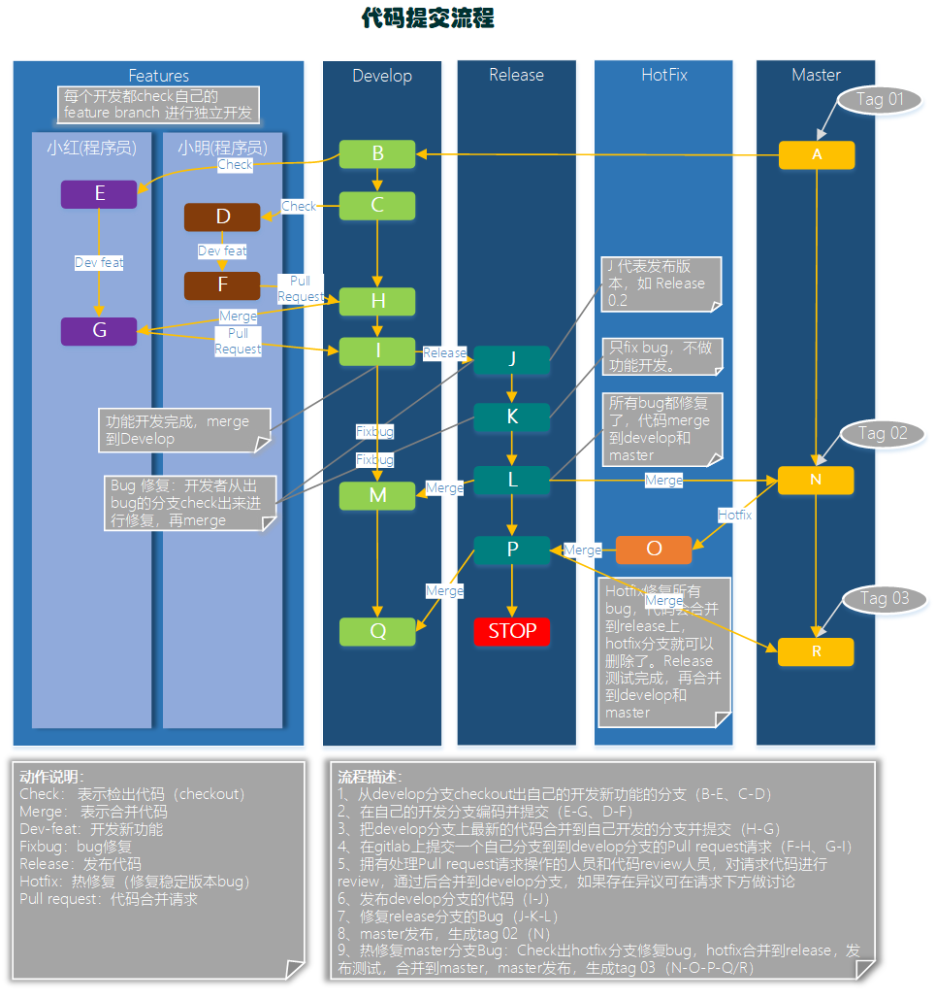
上图简要描述了开发者如何进行开发代码，提交代码和发布代码，修复bug的过程。详图见Visio 文档
1、从develop分支checkout出自己的开发新功能的分支（B-E、C-D）
2、在自己的开发分支编码并提交（E-G、D-F）
3、把代码合并到develop分支（G/F-H）
4、发布develop分支的代码（H-I）
5、修复release分支的Bug（I-J-K）
6、master发布，生成tag 02（M）
7、热修复master分支Bug：Check出hotfix分支修复bug，hotfix合并到release，发布测试，合并到master，master发布，生成tag 03（M-N-O-P/Q）
3 Quick Start
有疑问，Quick Start，实践一下！
下面的示例演示本工作流如何用于管理单个发布循环。假设你已经创建了一个中央仓库。
- 详细的分支工作方式参考【附录一】
- 注意提交代码时遵循commit mesage 规范【附录二】
- 在IntelliJ IDEA 中操作 请参考【附录三】
3.1 创建开发分支（一般已创建可跳过）

第一步为master分支配套一个develop分支。简单来做可以本地创建一个空的develop分支，push到服务器上：
git branch develop
git push -u origin develop
以后这个分支将会包含了项目的全部历史，而master分支将只包含了部分历史。其它开发者这时应该克隆中央仓库，建好develop分支的跟踪分支：
git clone ssh://user@host/path/to/repo.git
git checkout -b develop origin/develop
#【译注】当没有本地分支 develop 时，
# 最后一条命令，我使用更简单的 git checkout develop
# 会自动 把 远程分支origin/develop 检出成 本地分支 develop
现在每个开发都有了这些历史分支的本地拷贝。
3.2 小红和小明开始开发新功能

这个示例中，小红和小明开始各自的功能开发。他们需要为各自的功能创建相应的分支。新分支不是基于master分支，而是应该基于develop分支：
git checkout -b some-feature develop
他们用老套路添加提交到各自功能分支上：编辑、暂存、提交：
git status
git add <some-file>
git commit
3.3 小红完成功能开发

添加了提交后，小红觉得她的功能OK了。如果团队使用Pull Requests，这时候可以发起一个用于合并到develop分支。
否则她可以直接合并到她本地的develop分支后push到中央仓库：
# 拉取远程的develop分支，并且当前分支（本地分支some-feature）合并上远程分支develop
git pull origin develop
git checkout develop
# 本地分支some-feature合并上some-feature
#【注意】已经这个分支已经有远程的develop修改了，所以本地develop无需再做远程拉取的操作
git merge some-feature
git push
# 删除本地分支
git branch -d some-feature
#【译注】上面的命令注释为译者添加，以方便理解
# 更多说明参见 Issue #18
第一条命令在合并功能前确保develop分支是最新的。注意，功能决不应该直接合并到master分支。
冲突解决方法参考下面【冲突解决部分】。
3.4 小红开始准备发布

这个时候小明正在实现他的功能，小红开始准备她的第一个项目正式发布。 像功能开发一样，她用一个新的分支来做发布准备。这一步也确定了发布的版本号：
git checkout -b release-0.1 develop
这个分支是清理发布、执行所有测试、更新文档和其它为下个发布做准备操作的地方，像是一个专门用于改善发布的功能分支。
只要小红创建这个分支并push到中央仓库，这个发布就是功能冻结的。任何不在develop分支中的新功能都推到下个发布循环中。
3.5 小红完成发布

一旦准备好了对外发布，小红合并修改到master分支和develop分支上，删除发布分支。合并回develop分支很重要，因为在发布分支中已经提交的更新需要在后面的新功能中也要是可用的。
另外，如果小红的团队要求Code Review，这是一个发起Pull Request的理想时机。
git checkout master
git merge release-0.1
git push
git checkout develop
git merge release-0.1
git push
git branch -d release-0.1
发布分支是作为功能开发（develop分支）和对外发布（master分支）间的缓冲。只要有合并到master分支，就应该打好Tag以方便跟踪。
git tag -a 0.1 -m "Initial public release" master
git push --tags
Git有提供各种勾子（hook），即仓库有事件发生时触发执行的脚本。
可以配置一个勾子，在你push中央仓库的master分支时，自动构建好对外发布。
3.6 最终用户发现Bug

对外发布后，小红回去和小明一起做下个发布的新功能开发，直到有最终用户开了一个Ticket抱怨当前版本的一个Bug。
为了处理Bug，小红（或小明）从master分支上拉出了一个维护分支，提交修改以解决问题，然后直接合并回master分支：
git checkout -b issue-#001 master
# Fix the bug
git checkout master
git merge issue-#001
git push
就像发布分支，维护分支中新加这些重要修改需要包含到develop分支中，所以小红要执行一个合并操作。然后就可以安全地删除这个分支了：
git checkout develop
git merge issue-#001
git push
git branch -d issue-#001
附录一: 分支的工作方式
Gitflow工作流仍然用中央仓库作为所有开发者的交互中心。和其它的工作流一样，开发者在本地工作并push分支到要中央仓库中。
分支结构图：

-
绿色代表
历史分支 master -
橘色代表
历史分支 develop -
黄色代表
发布分支 release-X -
蓝色代表
功能分支 feature-X -
灰色代表
热修复分支 hotfix-X
历史分支
相对使用仅有的一个master分支，Gitflow工作流使用2个分支来记录项目的历史。master分支存储了正式发布的历史，而develop分支作为功能的集成分支。
这样也方便master分支上的所有提交分配一个版本号。

剩下要说明的问题围绕着这2个分支的区别展开。
功能分支
每个新功能位于一个自己的分支，这样可以push到中央仓库以备份和协作。
但功能分支不是从master分支上拉出新分支，而是使用develop分支作为父分支。当新功能完成时，合并回develop分支。
新功能提交应该从不直接与master分支交互。

注意，从各种含义和目的上来看，功能分支加上develop分支就是功能分支工作流的用法。但Gitflow工作流没有在这里止步。
发布分支

一旦develop分支上有了做一次发布（或者说快到了既定的发布日）的足够功能，就从develop分支上fork一个发布分支。
新建的分支用于开始发布循环，所以从这个时间点开始之后新的功能不能再加到这个分支上——
这个分支只应该做Bug修复、文档生成和其它面向发布任务。
一旦对外发布的工作都完成了，发布分支合并到master分支并分配一个版本号打好Tag。
另外，这些从新建发布分支以来的做的修改要合并回develop分支。
使用一个用于发布准备的专门分支，使得一个团队可以在完善当前的发布版本的同时，另一个团队可以继续开发下个版本的功能。 这也打造定义良好的开发阶段（比如，可以很轻松地说，『这周我们要做准备发布版本4.0』，并且在仓库的目录结构中可以实际看到）。
常用的分支约定：
用于新建发布分支的分支: develop
用于合并的分支: master
分支命名: release-* 或 release/*
维护分支

维护分支或说是热修复（hotfix）分支用于生成快速给产品发布版本（production releases）打补丁，这是唯一可以直接从master分支fork出来的分支。
修复完成，修改应该马上合并回master分支和develop分支（当前的发布分支），master分支应该用新的版本号打好Tag。
为Bug修复使用专门分支，让团队可以处理掉问题而不用打断其它工作或是等待下一个发布循环。
你可以把维护分支想成是一个直接在master分支上处理的临时发布。
附录二: commit message 规范
每次提交，Commit message 都包括三个部分：Header，Body 和 Footer。
<type>(<scope>): <subject> // 空一行 <body> // 空一行 <footer>
其中，Header 是必需的，Body 和 Footer 可以省略。
不管是哪一个部分，任何一行都不得超过72个字符。这是为了避免自动换行影响美观。
Header
Header部分只有一行，包括三个字段：type（必需）、scope（可选）和subject（必需）。
type
type用于说明 commit 的类别，只允许使用下面7个标识。
- feat：新功能（feature）
- fix：修补bug
- docs：文档（documentation）
- style： 格式（不影响代码运行的变动）
- refactor：重构（即不是新增功能，也不是修改bug的代码变动）
- test：增加测试
- chore：构建过程或辅助工具的变动
如果type为feat和fix，则该 commit 将肯定出现在 Change log 之中。其他情况（docs、chore、style、refactor、test）由你决定，要不要放入 Change log，建议是不要。
scope
scope用于说明 commit 影响的范围，比如数据层、控制层、视图层等等，视项目不同而不同。
subject
subject是 commit 目的的简短描述，不超过50个字符。
- 以动词开头，使用第一人称现在时，比如
change，而不是changed或changes- 第一个字母小写
- 结尾不加句号（
.）
Body
Body 部分是对本次 commit 的详细描述，可以分成多行。下面是一个范例。
More detailed explanatory text, if necessary. Wrap it to about 72 characters or so. Further paragraphs come after blank lines. - Bullet points are okay, too - Use a hanging indent
有两个注意点。
（1）使用第一人称现在时，比如使用change而不是changed或changes。
（2）应该说明代码变动的动机，以及与以前行为的对比。
Footer
Footer 部分只用于两种情况。
不兼容变动
如果当前代码与上一个版本不兼容，则 Footer 部分以BREAKING CHANGE开头，后面是对变动的描述、以及变动理由和迁移方法。
BREAKING CHANGE: isolate scope bindings definition has changed. To migrate the code follow the example below: Before: scope: { myAttr: 'attribute', } After: scope: { myAttr: '@', } The removed `inject` wasn't generaly useful for directives so there should be no code using it.
关闭 Issue
如果当前 commit 针对某个issue，那么可以在 Footer 部分关闭这个 issue 。
Closes #234
也可以一次关闭多个 issue 。
Closes #123, #245, #992
Revert
还有一种特殊情况，如果当前 commit 用于撤销以前的 commit，则必须以revert:开头，后面跟着被撤销 Commit 的 Header。
revert: feat(pencil): add 'graphiteWidth' option This reverts commit 667ecc1654a317a13331b17617d973392f415f02.
Body部分的格式是固定的，必须写成This reverts commit <hash>.，其中的hash是被撤销 commit 的 SHA 标识符。
如果当前 commit 与被撤销的 commit，在同一个发布（release）里面，那么它们都不会出现在 Change log 里面。如果两者在不同的发布，那么当前 commit，会出现在 Change log 的Reverts小标题下面。
Code Review 规范
By Siu 2020/05/14
以下采用gitflow + PR/MR模式，基于Gitlab 进行Code Review
1 目标&原则
Why Code Review?
-
提高代码质量，及早发现潜在缺陷，降低修改/弥补缺陷的成本
-
促进团队内部知识共享，提高团队整体水平
-
评审过程对于评审人员来说，也是一种思路重构的过程，帮助更多的人理解系统
-
是一个传递知识的手段，可以让其它并不熟悉代码的人知道作者的意图和想法，从而可以在以后轻松维护代码
-
可以被用来确认自己的设计和实现是一个清楚和简单的
-
是一种特殊的pair programing实践
-
鼓励相互学习对方的长处和优点
-
高效迅速完成Code Review
2 流程&规则
How To Code Review？
2.1 Git Flow

2.2 Pull Request
- 任务完成才能提交PR
- 严禁一个PR里面有多个任务，除非它们是紧密关联的
- PR提交之后只允许针对Review发现问题再次提交代码，除非有充足的理由，严禁在同一个PR中再次提交其它任务的代码
- PR的Title必须概括性表达提交的内容，如果无法概括，就应该考虑这些commit不应该给归为一个PR
- 提交PR时候有一个描述框，内容会自动根据Commit的message合并而成。切记，如果一次提交的内容包含很多Commit，请不要使用自动生成的描述。请用简短但是足够说明问题的语言（理想是控制在3句话之内）来描述： 你改动了什么，解决了什么问题，需要代码审查的人留意那些影响比较大的改动。特别需要留意，如果对基础、公共的组件进行了改动，一定要另起一行特别说明。
- PR应该在1~2个工作日内被合并或者被拒绝
- 发起Pull Request以后，请将Pull Request的链接通过Email发给代码审核者，以此通知对方及时进行审核。(BUG修复类当日必须完成合并或者拒绝，功能类或者觉得有重大调整需要会议Review必须在邮件中明确时间和会议人员)
- 你可以分配这个 MR 给你自己，直到你完成你的工作，然后把它分配给其他人来做一次代码复审。如果有必要的话，这个 MR 可以被重新分配多次，直到覆盖你所需要的审查的代码。
2.3 Rules & Tips
-
保证必须以Merge的方式变更develop/release/master分支，需要对Push/Merge权限进行限制
-
中级审初级，高级审中级，高级互审（这是一般原则）；
-
确保每次代码合并前都有2个人review（实际允许，鼓励全员review）；
-
不必拘束于形式，不强调会议形式，不强调审核；
-
鼓励初级人员给高级人员提出代码意见（虽然流程上没有这样的形式，PR是自下而上的）；
-
学会自己进行Code Review，在别人review之前你已经解决了很多疏忽的问题；
-
尽可能的让不同的人Review你的代码，主动去PR给你的高级人员；
-
虚心接受意见，但不要羞涩表达自己的观点，大胆指出问题，鼓励积极的Disscussion（在gitlab）；
-
不要纠结拒绝PR是否太不计情面，写好拒绝的原有，拒绝是为了下一次更好；
-
忘记下面的Checklist，把Code Review 当成一种轻松的交流，太正式未必达成好的效果；
-
如果你是一个新人，那么Code Review 将是最快融入团队的方式；
-
学会享受Code Review，这是最重要的。
3 Code Review Checklist
Code Review主要检查代码中是否存在以下方面问题：
- 完整性检查
- 代码是否完全实现了设计文档中提出的功能需求
- 代码是否已按照设计文档进行了集成和Debug
- 代码是否已创建了需要的数据库，包括正确的初始化数据
- 代码中是否存在任何没有定义或没有引用到的变量、常数或数据类型
- 一致性检查
- 代码的逻辑是否符合设计文档
- 代码中使用的格式、符号、结构等风格是否保持一致
- 正确性检查
- 代码是否符合制定的标准
- 所有的变量都被正确定义和使用
- 所有的注释都是准确的
- 所有的程序调用都使用了正确的参数个数
- 可修改性检查
- 代码涉及到的常量是否易于修改(如使用配置、定义为类常量、使用专门的常量类等)
- 代码中是否包含了交叉说明或数据字典，以描述程序是如何对变量和常量进行访问的
- 代码是否只有一个出口和一个入口（严重的异常处理除外）
- 可预测性检查
- 代码所用的开发语言是否具有定义良好的语法和语义
- 是否代码避免了依赖于开发语言缺省提供的功能
- 代码是否无意中陷入了死循环
- 代码是否是否避免了无穷递归
- 健壮性检查
- 异常处理和清理（释放）资源
- 代码是否采取措施避免运行时错误（如数组边界溢出、被零除、值越界、堆栈溢出等）
- 结构性检查
- 程序的每个功能是否都作为一个可辩识的代码块存在
- 循环是否只有一个入口
- 可追溯性检查
- 代码是否对每个程序进行了唯一标识
- 是否有一个交叉引用的框架可以用来在代码和开发文档之间相互对应
- 代码是否包括一个修订历史记录，记录中对代码的修改和原因都有记录
- 是否所有的安全功能都有标识
- 可理解性检查
- 注释是否足够清晰的描述每个子程序
- 是否使用到不明确或不必要的复杂代码，它们是否被清楚的注释
- 使用一些统一的格式化技巧（如缩进、空白等）用来增强代码的清晰度
- 是否在定义命名规则时采用了便于记忆，反映类型等方法
- 每个变量都定义了合法的取值范围
- 代码中的算法是否符合开发文档中描述的数学模型
- 可验证性检查
- 代码中的实现技术是否便于测试
- 可重用性
- DRY（Do not Repeat Yourself）原则：同一代码不应该重复两次以上
- 考虑可重用的服务，功能和组件
- 考虑通用函数和类
- 可扩展性
- 轻松添加功能，对现有代码进行最小的更改。一个组件可以被更好的组件替换
- 安全性
- 进行身份验证，授权，输入数据验证，避免诸如SQL注入和跨站脚本（XSS）等安全威胁 ，加密敏感数据（密码，信用卡信息等）
- 性能
- 使用合适的数据类型，例如StringBuilder，通用集合类
- 懒加载，异步和并行处理
- 缓存和会话/应用程序数据
代码检查包括不局限于上述清单，提交人应在本地自我完成代码格式、架构设计、面向对象分析与设计等检查。
如果是Javaer，参考阿里的《Java开发手册》（最新泰山版）。
4 Code Review的步骤
Code Review 服务于项目开发，按照以下步骤执行code review：
- 需求功能开发完成（提测之前），开发leader统一组织code review。
- 代码编写者和代码审核者坐在一起，由代码编写者按照业务层次依次讲解自己负责的代码和相关逻辑。
- 代码审核者在此过程中可以随时提出自己的疑问，同时积极发现隐藏的bug；直接在gitlab上记录。
- 代码讲解完毕后，代码审核者给自己安排几个小时再对代码审核一遍。代码需要一行一行静下心看。同时代码又要全面的看，以确保代码整体上设计优良。
- 代码审核者将审核的意见记录在gitlab上，抄送给代码编写者&其它审核人员，注明修改deadline。
- 代码编写者根据代码审核者给出的修改意见，修改代码并再次PR。
- 开发leader确认所有PR都进行明确的反馈（接受或拒绝，不接受没有理由的意见）。
5 Code Review Base On Gitlab
5.1 Gitlab Protected Branches 配置
为了保证必须以Merge的方式变更develop分支、release分支、以及master分支，需要对Push以及Merge权限进行限制。
菜单：Settings->Repository Settings然后展开Protected Branches选项

对于通配符的分支保护release-*，我们需要给Maintainers（Masters）组的用户Push权限，不然无法新建对应格式的分支。
对于固定名称的分支：master、release，可以限制所有角色都没有Push权限。
5.2 GitLab Code Review 约定
所有PR都应有明确的Milestone、Label，Tile、Description。Tile、Description 上文已经提到，下面对 Milestone、Label 做相应规范约束。
Milestone
里程碑，代指项目的版本阶段
- Title 发布版本号，如：2.5.0.2004310_RC
- Description （描述信息），需包含以下：
- 版本的概括信息
- 版本的计划功能列表
- 必须指定
Start DateDue Date
Label
标签，区分各MR的性质
限定以下指定标签：
-
MR:DEV:DESIGN 提交物属性为设计类（接口设计、模型设计、流程图、设计文档、公共定义类代码）
-
MR:DEV:DOCS 提交物属性为文档类（非设计文档，如部署，预研，项目总结PPT）
-
MR:DEV:FEAT 提交物属性为新特性开发
-
MR:DEV:FIXBUG 提交物属性为修复bug类
-
MR:DEV:HOTFIX 提交物属性热修复代码类
-
MR:DEV:OTHER 提交物属性为无法归类的其它产物
-
MR:DEV:REFACTOR 提交物属性为重构代码类
-
MR:DEV:TEMPLATE 提交物属性为模板类代码
5.3 WIP MR
WIP MR 含义是 在工作过程中的合并请求，是一个我们在 GitLab 中避免 MR 在准备就绪前被合并的技术。只需要添加
WIP:在 MR 的标题开头，它将不会被合并，除非你把WIP:删除。
当你改动已经准备好被合并，编辑工单来手动删除 WIP: ，或者使用就像如下 MR 描述下方的快捷方式。
新功能： WIP 模式可以通过斜线命令 /wip 快速添加到合并请求中。只需要在评论或者 MR 描述中输入它并提交即可。
5.4 Closed Issues
在一个MR中可以关联相应的工单，做到当MR被接受时，关闭Issues
可以在Title，MR Description中按下面格式描述：
重构A接口，修复#1，#2
这个 MR 重构了a接口，修复以下
Closes #[Issue No] and https://gitlab.com/issues/[Issue NO]@Siu @Jack @John
5.5 Other
在工单和 MR 的描述中:
- 输入
#来触发一个已有工单的下拉列表 - 输入
!来触发一个已有 MR 的下拉列表 - 输入
/来触发斜线命令 - 输入
:来出发 emoji 表情 (也支持行中评论) - 输入
@来提示项目成员
附录
GitLab Code Review 示例
Create Merge Request


IDE Review Code 示例
Install Plugin
-
Gitlab Projects [2020]
-
Gitlab Integration
GitLab Access Token
菜单：User Settings>Access Tokens 进入Access Token添加页面

Create Merge Request


Ref
Gitlab Issue 规范指南
By Siu 2020/05/14
1 概念定义
- 工单（Issue）：可以是一个Bug、一个建议、一个任务单
- 列表（List）：代表Issue所处不同阶段
- 看板（Board）：所有Issue 列表
- 标签（Label）：区分Issue 的处理阶段、性质、优先级
2 Issue 创建规范
- 标题（Titile）足够准确，能概括描述Issue的主要内容
- 描述（Description）足够清晰，包含问题的所有信息，关联信息、历史信息（使用markdown语法）；
- 描述中话可以添加子任务
Add a task list
- 描述中话可以添加子任务
- 指定接收人（Assignee），标明截止日期
Due date - 指定3个Label，标明
Issue 处于哪个执行/处理阶段、标明Issue 是何种性质、标明Issue 紧急程度（参照Label 规范）- 优先级Label，通常由项目经理判断标明
- 默认新提交的Issue，处理阶段都标记到
Inbox标签
- 关联到具体的Milestone
- 参考CR规范里面的定义
3 看板列表规范（List）
同下Label规范，执行处理阶段定义。
- Inbox，这个列表收集Issue，处于这个列表的Issue可以不指定
Assignee- 暂时只由有开发阶段的收集，需求和BUG暂未接入
- 每周一，由项目负责人review一遍Inbox，并作相应的指派和操作
- Todo，这个列表的Issue处于已计划阶段，需要有明确的
Assignee和Due date- 由项目经理/开发负责人分配
- Doing，这个列表的Issue处于执行阶段，必须标明执行的状态
In-Progress Almost-Done Stuck- 由
Assignee更新状态标签
- 由
4 标签规范（Label）
-
执行处理阶段
- Inbox，收集阶段
- Todo，计划阶段
- Doing，执行阶段
- In-Progress 进行中
- Almost-Done 几近完成
- Stuck 有阻碍、困难
-
性质
-
BUG 类
- BUG-Blocker ,即系统无法执行、崩溃或严重资源不足、应用模块无法启动或异常退出、无法测试
- BUG-Critical , 即影响系统功能或操作，主要功能存在严重缺陷，但不会影响到系统稳定性
- BUG-Major ,即界面、性能缺陷、兼容性
- BUG-Minor ,即易用性及建议性问题
-
PR，产品需求类
- PR
-
Suggestion，建议类
- SUGGESTION
-
Task，工单任务类
- TASK
-
-
Priority，优先级
- HIGH 高优先级（High）：对系统有重大影响，只有解决它之后，才能去完成其他任务。
- MEDIUM 普通优先级（Medium）：对系统的某个部分有影响，用户的一部分操作会达不到预期效果。
- LOW 低优先级（Low）：对系统的某个部分有影响，用户几乎感知不到。
- TRIVIAL 微不足道（Trivial）：对系统的功能没有影响，通常是视觉效果不理想，比如字体和颜色不满意。
5 Slack 通知集成
在Slack 上创建相应的channel，接收Issue 流转通知
ref https://hugo1030.github.io/tech/slack-connect-gitlab/
Python 代码规范
1.1 编码
• 如无特殊情况, 文件一律使用 UTF-8 编码
• 如无特殊情况, 文件头部必须加入#--coding:utf-8--标识
1.2 代码格式
1.2.1 缩进
• 统一使用 4 个空格进行缩进
1.2.2 行宽
每行代码尽量不超过 80 个字符(在特殊情况下可以略微超过 80 ，但最长不得超过 120)
理由：
• 这在查看 side-by-side 的 diff 时很有帮助
• 方便在控制台下查看代码
• 太长可能是设计有缺陷
例外：
- 长的导入模块语句
- 注释里的URL
不要使用反斜杆连接行。
Python会将圆括号，中括号和花括号中的行隐形的连接起来，你可以利用这个特点。如果代码需要，可在表达式外围增加一堆额外的圆括号。
# 推荐
if (width == 0 and height == 0 and
color == 'red'):
# 文本时
x = (u"这是一串很长很长很长很长很长很长很长很长很长很长"
"很长很长很长很长很长很长很长很长的文字")
1.2.3 引号
简单说，自然语言使用双引号，机器标示使用单引号，因此 代码里 多数应该使用 单引号
• 自然语言 使用双引号 "..." 例如错误信息；很多情况还是 unicode，使用u"你好世界"
• 机器标识 使用单引号 '...' 例如 dict 里的 key
• 正则表达式 使用原生的双引号 r"..."
• 文档字符串 (docstring) 使用三个双引号 """......"""
1.2.4 空行
• 模块级函数和类定义之间空两行；
• 类成员函数之间空一行；
class A:
def __init__(self):
pass
def hello(self):
pass
def main():
pass
• 可以使用多个空行分隔多组相关的函数
• 函数中可以使用空行分隔出逻辑相关的代码
1.2.5 编码
• 文件使用 UTF-8 编码
• 文件头部加入#--conding:utf-8--标识
1.2.6 括号
除非是用于实现行连接, 否则不要在返回语句或条件语句中使用括号. 不过在元组两边使用括号是可以的.
# 正确
if foo:
bar()
while x:
x = bar()
if x and y:
bar()
if not x:
bar()
return foo
for(x, y) in dict.items(): ...
# 错误
if (x):
bar()
if not(x):
bar()
return (foo)
# 元组
tup1 = ('physics', 'chemistry', 1997, 2000)
tup2 = (1, 2, 3, 4, 5 )
tup3 = "a", "b", "c", "d"
1.2.7 分号
不要用行尾加分号，也不要用分号将两条语句放在同一行。
1.3 import 语句
• import 语句应该分行书写
# 正确的写法
import os
import sys
# 不推荐的写法
import sys,os
# 正确的写法
from subprocess import Popen, PIPE
• import语句应该使用 absolute import
# 正确的写法
from foo.bar import Bar
# 不推荐的写法
from ..bar import Bar
• import语句应该放在文件头部，置于模块说明及docstring之后，于全局变量之前；
• import语句应该按照顺序排列，每组之间用一个空行分隔
import os
import sys
import msgpack
import zmq
import foo
• 导入其他模块的类定义时，可以使用相对导入
from myclass import MyClass
• 如果发生命名冲突，则可使用命名空间
import bar
import foo.bar
bar.Bar()
foo.bar.Bar()
1.4 空格
• 在二元运算符两边各空一格[=,-,+=,==,>,in,is not, and]:
# 正确的写法
i = i + 1
submitted += 1
x = x * 2 - 1
hypot2 = x * x + y * y
c = (a + b) * (a - b)
# 不推荐的写法
i=i+1
submitted +=1
x = x*2 - 1
hypot2 = x*x + y*y
c = (a+b) * (a-b)
• 函数的参数列表中，,之后要有空格
# 正确的写法
def complex(real, imag):
pass
# 不推荐的写法
def complex(real,imag):
pass
• 函数的参数列表中，默认值等号两边不要添加空格
# 正确的写法
def complex(real, imag=0.0):
pass
# 不推荐的写法
def complex(real, imag = 0.0):
pass
• 左括号之后，右括号之前不要加多余的空格
# 正确的写法
spam(ham[1], {eggs: 2})
# 不推荐的写法
spam( ham[1], { eggs : 2 } )
• 字典对象的左括号之前不要多余的空格
# 正确的写法
dict['key'] = list[index]
# 不推荐的写法
dict ['key'] = list [index]
• 不要为对齐赋值语句而使用的额外空格
# 正确的写法
x = 1
y = 2
long_variable = 3
# 不推荐的写法
x = 1
y = 2
long_variable = 3
1.5 换行
Python 支持括号内的换行。这时有两种情况。
• 第二行缩进到括号的起始处
foo = long_function_name(var_one, var_two,
var_three, var_four)
• 第二行缩进 4 个空格，适用于起始括号就换行的情形
def long_function_name(
var_one, var_two, var_three,
var_four):
print(var_one)
• 使用反斜杠\换行，二元运算符+ .等应出现在行末；长字符串也可以用此法换行
session.query(MyTable).\
filter_by(id=1).\
one()
# 下面这种换行，建议改成括号内换行
print 'Hello, '\
'%s %s!' %\
('Harry', 'Potter')
# 括号内换行
print ('Hello, '
'%s %s!' %
('Harry', 'Potter'))
禁止复合语句，即一行中包含多个语句：
# 正确的写法
do_first()
do_second()
do_third()
# 不推荐的写法
do_first();do_second();do_third();
if/for/while一定要换行：
# 正确的写法
if foo == 'blah':
do_blah_thing()
# 不推荐的写法
if foo == 'blah': do_blash_thing()
1.6 docstring
docstring 的规范中最其本的两点：
- 所有的公共模块、函数、类、方法，都应该写 docstring 。私有方法不一定需要，但应该在 def 后提供一个块注释来说明。
- docstring 的结束"""应该独占一行，除非此 docstring 只有一行。
"""Return a foobar
Optional plotz says to frobnicate the bizbaz first.
"""
"""Oneline docstring"""
2 注释
2.1 注释
2.1.1 块注释
“#”号后空一格，段落件用空行分开（同样需要“#”号）
# 块注释
# 块注释
#
# 块注释
# 块注释
2.1.2 行注释
至少使用两个空格和语句分开，注意不要使用无意义的注释
# 正确的写法
x = x + 1 # 边框加粗一个像素
# 不推荐的写法(无意义的注释)
x = x + 1 # x加1
2.1.3 建议
• 在代码的关键部分(或比较复杂的地方), 能写注释的要尽量写注释
• 比较重要的注释段, 使用多个等号隔开, 可以更加醒目, 突出重要性
app = create_app(name, options)
# =====================================
# 请勿在此处添加 get post等app路由行为 !!!
# =====================================
if __name__ == '__main__':
app.run()
2.1.4 TODO注释
在注释开头添加“TODO”字符串，紧跟着是用括号括起来的你的名字/邮箱地址/其他标识符，紧接一个冒号和一个空格后添加注释内容，写明要做什么。
# TODO(xxx@cecdat.com): 这里解释要做什么
2.2 文档注释（Docstring）
作为文档的Docstring一般出现在模块头部、函数和类的头部，这样在python中可以通过对象的doc对象获取文档. 编辑器和IDE也可以根据Docstring给出自动提示.
• 文档注释以 """ 开头和结尾, 首行不换行, 如有多行, 末行必需换行, 以下是Google的docstring风格示例
# -*- coding: utf-8 -*-
"""Example docstrings.
This module demonstrates documentation as specified by the `Google Python
Style Guide`_. Docstrings may extend over multiple lines. Sections are created
with a section header and a colon followed by a block of indented text.
Example:
Examples can be given using either the ``Example`` or ``Examples``
sections. Sections support any reStructuredText formatting, including
literal blocks::
$ python example_google.py
Section breaks are created by resuming unindented text. Section breaks
are also implicitly created anytime a new section starts.
"""
• 不要在文档注释复制函数定义原型, 而是具体描述其具体内容, 解释具体参数和返回值等
# 不推荐的写法(不要写函数原型等废话)
# 不推荐的写法(不要写函数原型等废话)
def function(a, b):
"""function(a, b) -> list"""
... ...
# 正确的写法
def function(a, b):
"""计算并返回a到b范围内数据的平均值"""
... ...
• 对函数参数、返回值等的说明采用numpy标准, 如下所示
def func(arg1, arg2):
"""在这里写函数的一句话总结(如: 计算平均值).
这里是具体描述.
参数
----------
arg1 : int
arg1的具体描述
arg2 : int
arg2的具体描述
返回值
-------
int
返回值的具体描述
参看
--------
otherfunc : 其它关联函数等...
示例
--------
示例使用doctest格式, 在`>>>`后的代码可以被文档测试工具作为测试用例自动运行
>>> a=[1,2,3]
>>> print [x + 3 for x in a]
[4, 5, 6]
"""
• 文档注释不限于中英文, 但不要中英文混用
• 文档注释不是越长越好, 通常一两句话能把情况说清楚即可
• 模块、公有类、公有方法, 能写文档注释的, 应该尽量写文档注释
2.3 文件头注释
2.3.1 模板
#!/usr/bin/env python
# -*- coding: utf-8 -*-
# @Time : ${DATE} ${TIME}
# @author : Siu
# @Project : ${PROJECT_NAME}
# @Description :
# @Copyright : xxx
2.3.2 IDE中设置模板
以Pycharm为例，选择菜单 File > Settings > File and Code Templates > Python Script ，粘贴模板，保存
3 命名规范
3.1 模块
• 模块尽量使用小写命名，首字母保持小写，尽量不要用下划线(除非多个单词，且数量不多的情况)
# 正确的模块名
import decoder
import html_parser
# 不推荐的模块名
import Decoder
3.2 类名
• 类名使用驼峰(CamelCase)命名风格，首字母大写，私有类可用一个下划线开头
class Farm():
pass
class AnimalFarm(Farm):
pass
class _PrivateFarm(Farm):
pass
• 将相关的类和顶级函数放在同一个模块里. 不像Java, 没必要限制一个类一个模块.
3.3 函数
• 函数名一律小写，如有多个单词，用下划线隔开
def run():
pass
def run_with_env():
pass
• 私有函数在函数前加一个下划线_
class Person():
def _private_func():
pass
3.4 变量名
• 变量名尽量小写, 如有多个单词，用下划线隔开
if __name__ == '__main__':
count = 0
school_name = ''
• 常量采用全大写，如有多个单词，使用下划线隔开
MAX_CLIENT = 100
MAX_CONNECTION = 1000
CONNECTION_TIMEOUT = 600
3.5 常量
• 常量使用以下划线分隔的大写命名
MAX_OVERFLOW = 100
Class FooBar:
def foo_bar(self, print_):
print(print_)
4 主函数
即使是一个打算被用作脚本的文件，也应该是可导入的。 并且简单的导入不应该导致这个脚本的主功能(main functionality)被执行。 主功能应该放在一个main()函数中，然后添加if name == 'main'，防止当模块被导入时主程序被执行。
def main():
...
if __name__ == '__main__':
main()
5 其他
5.1 IDE
推荐使用 PyCharm
5.2 Python 版本
待定。
本页编辑 @gongshiwen